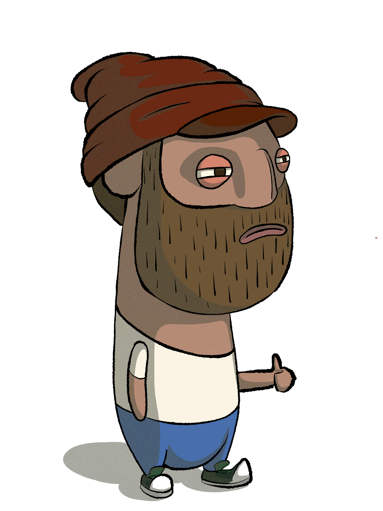

<!DOCTYPE html>
<html lang="en" data-theme="dark" data-density="dense" data-display-font="sleeper">
<head>
<meta charset="UTF-8">
<meta name="viewport" content="width=device-width, initial-scale=1">
<title>Raz Silberman — Product Designer</title>
<link rel="preconnect" href="https://fonts.googleapis.com">
<link rel="preconnect" href="https://fonts.gstatic.com" crossorigin>
<link href="https://fonts.googleapis.com/css2?family=Afacad:wght@400;500;600;700&family=Afacad+Flux:wght@400;500;600;700;800;900&family=Fraunces:ital,opsz,wght@0,9..144,300..900;1,9..144,300..900&family=Geist:wght@400;500;600;700;800;900&family=Geist+Mono:wght@400;500&family=Inter:wght@400;500;600;700&family=Inter+Tight:wght@500;700;900&family=Instrument+Serif:ital@0;1&family=JetBrains+Mono:wght@400;500&display=swap" rel="stylesheet">
<style>
/* ─── Tokens ─── */
:root {
  /* Dark theme (default) — Signal "Signal lost"
     Near-black CRT screen with the SMPTE color bars glowing in the dark.
     Token roles per color palettes/signal-design-tokens.md:
       --accent = tomato (primary CTA / brand pop)
       --accent-sky = sky (links, eyebrows)
       --accent-moment = butter (badges, moments)
       --bar-sage/-orchid/-indigo = extended bars (tags, data viz, reveals) */
  --ground:    #14131A;            /* CRT black — faint purple-warmth, not pure */
  --surface:   #211F2A;
  --surface-2: #211F2A;
  --rim:       #2E2C38;
  --rim-soft:  rgba(236,233,240,.06);
  --ink:       #ECE9F0;            /* broadcast white */
  --ink-dim:   #B2AEBC;
  --muted:     #8C8898;

  /* Primary (tomato) — brightened for dark-text AA */
  --accent:        #F25450;
  --accent-hover:  #FF7568;        /* hover LIGHTER (dark-mode exception) */
  --accent-active: #FFA698;
  --accent-bg:     #480000;
  --accent-bg-strong: #820000;
  --accent-text-on: #14131A;       /* dark text on bright tomato CTAs */
  --accent-lo:     color-mix(in oklab, var(--accent) 14%, transparent);
  --accent-md:     color-mix(in oklab, var(--accent) 30%, transparent);

  /* Accent (sky) — links + eyebrows */
  --accent-sky:         #5BC4E8;
  --accent-sky-hover:   #96D9F3;   /* hover LIGHTER on dark */
  --accent-sky-surface: #5BC4E8;
  --accent-sky-bg:      #002032;

  /* Moment (butter) — badges, joy-moment */
  --accent-moment:         #F2D74E;
  --accent-moment-bg:      #281800;
  --accent-moment-text-on: #F2D74E;

  /* Extended bars — sage/orchid/indigo (tags, data viz, the reveal set) */
  --bar-sage:           #6FB264;
  --bar-sage-surface:   #6FB264;
  --bar-orchid:         #B05BA8;
  --bar-orchid-surface: #B05BA8;
  --bar-indigo:         #7A92E0;   /* lightened for dark-text legibility */
  --bar-indigo-surface: #3A52A0;

  /* Focus ring — sky (most visible on CRT black) */
  --focus-ring: #5BC4E8;
}
[data-theme="light"] {
  /* Light theme — Signal "On air"
     Warm broadcast white with the bars deepened to AA-compliant text colors.
     The bright bars stay for surfaces/badges. */
  --ground:    #F4F2EC;            /* warm broadcast white — not pure */
  --surface:   #E8E5DA;
  --surface-2: #FFFFFF;
  --rim:       #D5CFC0;
  --rim-soft:  rgba(20,19,26,.08);
  --ink:       #14131A;            /* CRT black — same hue as dark mode bg */
  --ink-dim:   #3D3B45;
  --muted:     #5C5A50;

  /* Primary (tomato) — deepened for white-text AA */
  --accent:        #C42018;
  --accent-hover:  #A01410;        /* hover darker (light-mode standard) */
  --accent-active: #7E0C0A;
  --accent-bg:     #FFEBE6;
  --accent-bg-strong: #FFCDC2;
  --accent-text-on: #FFFFFF;       /* white text on deep tomato CTAs */
  --accent-lo:     color-mix(in oklab, var(--accent) 12%, transparent);
  --accent-md:     color-mix(in oklab, var(--accent) 28%, transparent);

  /* Accent (sky) — deepened for in-body text use */
  --accent-sky:         #136B92;
  --accent-sky-hover:   #004660;
  --accent-sky-surface: #5BC4E8;   /* bright sky — for surfaces / badges */
  --accent-sky-bg:      #E6F9FF;

  /* Moment (butter) — background only in light mode */
  --accent-moment:         #F2D74E;
  --accent-moment-bg:      #FAF6DF;
  --accent-moment-text-on: #503A00;

  /* Extended bars — deepened for light-mode text use */
  --bar-sage:           #356E30;
  --bar-sage-surface:   #6FB264;
  --bar-orchid:         #8B3A84;
  --bar-orchid-surface: #B05BA8;
  --bar-indigo:         #2A3F85;
  --bar-indigo-surface: #3A52A0;

  /* Focus ring — tomato primary */
  --focus-ring: #C42018;
}

/* ─── Signal 9-stop OKLCH ramps (mode-independent) ─────────────────────
   Materialized from signal-design-tokens.md so components needing a
   specific ramp stop don't pick an off-system color. */
:root {
  --tomato-50:  #FFEBE6; --tomato-100: #FFCDC2; --tomato-200: #FFA698;
  --tomato-300: #FF7568; --tomato-400: #F54840; --tomato-500: #D11C1F;
  --tomato-600: #AC0000; --tomato-700: #820000; --tomato-800: #480000;

  --sky-50:  #E6F9FF; --sky-100: #C2ECFD; --sky-200: #96D9F3;
  --sky-300: #60BCDC; --sky-400: #2D9DC0; --sky-500: #007EA0;
  --sky-600: #006382; --sky-700: #004660; --sky-800: #002032;

  --butter-50:  #FAF6DF; --butter-100: #F1E6B1; --butter-200: #E0CF7A;
  --butter-300: #C6AE33; --butter-400: #A98E00; --butter-500: #8A7000;
  --butter-600: #6F5600; --butter-700: #503A00; --butter-800: #281800;
  --butter-base: #F2D74E;

  --sage-50:  #ECFAEA; --sage-100: #D0EFCB; --sage-200: #AEDDA5;
  --sage-300: #84C07A; --sage-400: #60A255; --sage-500: #428337;
  --sage-600: #2A6820; --sage-700: #134A08; --sage-800: #002300;

  --orchid-50:  #FFEEFF; --orchid-100: #FFD5F9; --orchid-200: #F5B5ED;
  --orchid-300: #DE8ED5; --orchid-400: #C16AB8; --orchid-500: #A04C99;
  --orchid-600: #82347B; --orchid-700: #5F1C5B; --orchid-800: #31022E;

  --indigo-50:  #EEF5FF; --indigo-100: #D4E4FF; --indigo-200: #B4CCFF;
  --indigo-300: #8FABF8; --indigo-400: #6E8BDE; --indigo-500: #516CBD;
  --indigo-600: #3B529C; --indigo-700: #253776; --indigo-800: #0B1541;
}

:root {
  /* Sleeper typography — Geist sans (display + body) + Geist Mono.
     Instrument Serif takes over .hero-title and .contact-headline only
     (the "moment" treatment), defined further down in the display-font
     swap section. --ff-display-weight is the variable refactored into
     all hardcoded display weights. */
  --ff-display: 'Geist', system-ui, -apple-system, sans-serif;
  --ff-body:    'Geist', system-ui, -apple-system, sans-serif;
  --ff-mono:    'Geist Mono', ui-monospace, monospace;
  --ff-display-weight: 800;
  font-optical-sizing: auto;
  --expo: cubic-bezier(0.16, 1, 0.3, 1);
  --circ: cubic-bezier(0.85, 0, 0.15, 1);
  --pad-x: clamp(1.5rem, 4vw, 3rem);

  /* ─── Breakpoint system ─────────────────────────────────────────────
     Mobile-first. Base styles target ~375px phones. Three min-width
     breakpoints widen the layout as space allows:

       --bp-sm: 640px  — small tablet / large phone landscape
       --bp-md: 960px  — tablet landscape / small laptop (main desktop break)
       --bp-lg: 1280px — full desktop / wide screens

     Custom properties can't be used in @media queries, but documenting
     them here keeps the values discoverable.
     ───────────────────────────────────────────────────────────────── */
  --bp-sm: 640px;
  --bp-md: 960px;
  --bp-lg: 1280px;
}

/* ─── Reset ─── */
*, *::before, *::after { box-sizing: border-box; margin: 0; padding: 0; }
html { scroll-behavior: smooth; }
html.cursor-on, html.cursor-on * { cursor: none !important; }
/* Safety net: never hide the native cursor on touch-only devices,
   even if `cursor-on` gets applied somehow. The custom cursor doesn't
   mount on touch (see BlobCursor isTouch check) but this guarantees
   the system cursor (e.g. on tablets with mouse attached later) stays. */
@media (hover: none) {
  html.cursor-on, html.cursor-on * { cursor: auto !important; }
}
body {
  background: var(--ground);
  color: var(--ink);
  font-family: var(--ff-body);
  font-weight: 400;
  line-height: 1.6;
  overflow-x: hidden;
  transition: background .6s var(--expo), color .6s var(--expo);
  -webkit-font-smoothing: antialiased;
  text-rendering: optimizeLegibility;
}
a { color: inherit; text-decoration: none; }
button { font-family: inherit; }
::selection { background: var(--accent-md); color: var(--ink); }

/* WCAG focus ring — keyboard-only via :focus-visible.
   --focus-ring is sky in dark, tomato in light per signal-design-tokens.md */
:focus-visible {
  outline: 2px solid var(--focus-ring);
  outline-offset: 2px;
  border-radius: 2px;
}
:focus:not(:focus-visible) { outline: none; }

/* ─── Signal component wiring ──────────────────────────────────────────
   Three-bar identity:
     Tomato → --accent (already used site-wide for brand pop / hero em / CTAs)
     Sky    → eyebrows + body links (most-trafficked accent role)
     Butter → badges (joy moment, dark-text-on-butter passes AAA both modes)
   Sage/Orchid/Indigo cycle across cap-pills as the "reveal set". */

/* Sky — all eyebrow-style mono uppercase labels */
.hero-eyebrow,
.about-eyebrow,
.contact-eyebrow,
.proj-eyebrow,
.proj-section-eyebrow,
.tile-tags,
.company-tag {
  color: var(--accent-sky);
}
.tile-img-mark { color: var(--accent-sky); }

/* Sky — body links (underlined per doc) */
.proj-section a,
.about p a,
.contact-links a {
  color: var(--accent-sky);
  text-decoration: underline;
  text-decoration-thickness: 1px;
  text-underline-offset: 3px;
}
.proj-section a:hover,
.about p a:hover,
.contact-links a:hover { color: var(--accent-sky-hover); }

/* Butter — moment tags (before/after, placeholder) */
.ba-tag {
  background: color-mix(in oklab, var(--accent-moment) 18%, transparent);
  color: var(--accent-moment-text-on);
}
.proj-placeholder-tag { color: var(--accent-moment-text-on); }

/* Extended bars (sage / orchid / indigo) — cycle across cap-pills so the
   reveal set appears together in the capabilities row. */
.cap-pill { border-color: currentColor; }
.cap-pill:nth-child(3n+1) { color: var(--bar-sage); }
.cap-pill:nth-child(3n+2) { color: var(--bar-orchid); }
.cap-pill:nth-child(3n+3) { color: var(--bar-indigo); }

/* Six-bar reveal — the test card footer strip. The full bar set appears
   together only in deliberate moments (footer / 404 / loading) per the doc.
   Uses the raw bar role-table values so the reference reads. */
footer { position: relative; }
footer::before {
  content: '';
  position: absolute; left: 0; right: 0; top: -1px;
  height: 4px;
  background: linear-gradient(to right,
    #E83A35 0 16.666%,
    #5BC4E8 16.666% 33.333%,
    #F2D74E 33.333% 50%,
    #6FB264 50% 66.666%,
    #B05BA8 66.666% 83.333%,
    #3A52A0 83.333% 100%
  );
  pointer-events: none;
}

/* ─── Grain ─── */
.grain {
  content: ''; position: fixed; inset: -200%; width: 400%; height: 400%;
  background-image: url("data:image/svg+xml,%3Csvg viewBox='0 0 512 512' xmlns='http://www.w3.org/2000/svg'%3E%3Cfilter id='n'%3E%3CfeTurbulence type='fractalNoise' baseFrequency='0.85' numOctaves='3' stitchTiles='stitch'/%3E%3C/filter%3E%3Crect width='100%25' height='100%25' filter='url(%23n)'/%3E%3C/svg%3E");
  opacity: .03; pointer-events: none; z-index: 9990;
  animation: grain .5s steps(2) infinite; mix-blend-mode: screen;
}
[data-theme="light"] .grain { opacity: .09; mix-blend-mode: multiply; }
.grain.off { display: none; }
@keyframes grain {
  0%   { transform: translate(0,0); }
  25%  { transform: translate(-2%,-3%); }
  50%  { transform: translate(3%,1%); }
  75%  { transform: translate(-1%,2%); }
  100% { transform: translate(2%,-1%); }
}

/* ─── Blob cursor ─── */
.blob-cursor {
  position: fixed; top: 0; left: 0; width: 38px; height: 38px;
  pointer-events: none; z-index: 9999;
  mix-blend-mode: difference;
  transform: translate(-50%, -50%);
  transition: width .35s var(--expo), height .35s var(--expo), opacity .25s ease;
}
.blob-cursor svg { width: 100%; height: 100%; display: block; overflow: visible; }
.blob-cursor .blob-outer {
  fill: var(--ink);
  animation: blobMorph 4s ease-in-out infinite, blobSpin 6s linear infinite;
  transform-origin: 50px 50px;
}
.blob-cursor .blob-inner {
  fill: var(--ground);
  animation: blobMorphR 3.5s ease-in-out infinite, blobSpinR 4.5s linear infinite;
  transform-origin: 50px 50px;
}
@keyframes blobSpin  { to { transform: rotate(360deg); } }
@keyframes blobSpinR { to { transform: rotate(-360deg); } }
@keyframes blobMorph {
  0%,100% { d: path("M50,4 C82,2 98,32 88,56 C100,82 64,102 38,90 C10,98 -2,62 12,38 C4,12 30,2 50,4 Z"); }
  33%     { d: path("M50,12 C84,16 92,42 80,66 C92,86 56,102 34,86 C8,84 6,58 18,38 C14,10 32,2 50,12 Z"); }
  66%     { d: path("M50,2 C68,16 100,18 96,50 C104,78 72,102 44,94 C14,100 -4,72 8,46 C-2,18 28,-2 50,2 Z"); }
}
@keyframes blobMorphR {
  0%,100% { d: path("M50,18 C76,16 88,38 76,58 C86,78 56,88 40,78 C20,84 10,58 22,40 C16,28 34,18 50,18 Z"); }
  50%     { d: path("M50,28 C62,18 86,42 84,60 C76,80 52,90 38,74 C18,76 14,54 26,38 C24,24 38,20 50,28 Z"); }
}

.blob-cursor.big { width: 78px; height: 78px; }
.blob-cursor.text {
  width: 3px; height: 22px;
  background: var(--ink); border-radius: 1px;
}
.blob-cursor.text svg { display: none; }

/* Light mode: keep `difference` blending so cursor inverts what it's over.
   Use a pale fill so against the pale ground it inverts to strong dark,
   and against dark imagery/cards it stays bright. */
[data-theme="light"] .blob-cursor .blob-outer { fill: #FFFFFF; }
[data-theme="light"] .blob-cursor .blob-inner { fill: #1A1814; }
[data-theme="light"] .puddle-cursor .puddle-body { fill: #FFFFFF; }
[data-theme="light"] .cur-trail-drop { background: #FFFFFF; }
[data-theme="light"] .ripple-cursor .rc-core { background: #FFFFFF; }
[data-theme="light"] .ripple-cursor .rc-halo {
  background: radial-gradient(circle, rgba(255,255,255,.45) 0%, transparent 65%);
}
[data-theme="light"] .water-veil {
  background: radial-gradient(circle 90px at var(--mx, 50%) var(--my, 50%),
    rgba(255,255,255,.28) 0%, rgba(255,255,255,.08) 50%, transparent 75%);
}
[data-theme="light"] .water-ring {
  border-color: rgba(255,255,255,.85);
  box-shadow:
    inset 0 0 18px rgba(255,255,255,.4),
    0 0 30px rgba(255,255,255,.18);
}

/* ─── Puddle cursor (gooey, stretchy substance) ─── */
.puddle-cursor {
  position: fixed; top: 0; left: 0; width: 64px; height: 64px;
  pointer-events: none; z-index: 9999;
  transform: translate(-50%, -50%);
  filter: url(#gooey-puddle);
  mix-blend-mode: difference;
  transition: width .35s var(--expo), height .35s var(--expo);
}
.puddle-cursor .puddle-svg {
  position: absolute; inset: 0; width: 100%; height: 100%;
  overflow: visible; display: block;
  transform: rotate(var(--ang, 0deg)) scale(var(--sx, 1), var(--sy, 1));
  transform-origin: center;
}
.puddle-cursor .puddle-body {
  fill: var(--ink);
  animation: puddleMorph 3s ease-in-out infinite;
  transform-box: fill-box;
  transform-origin: center;
}
@keyframes puddleMorph {
  0%   { d: path("M50,18 C72,12 90,28 88,52 C92,72 70,90 50,86 C30,90 12,74 12,52 C10,30 28,16 50,18 Z"); }
  25%  { d: path("M52,14 C76,18 92,36 84,58 C90,80 60,92 42,84 C18,86 8,62 18,40 C16,22 34,12 52,14 Z"); }
  50%  { d: path("M48,16 C70,10 94,30 90,54 C88,78 62,94 44,86 C20,90 6,68 14,46 C12,26 32,18 48,16 Z"); }
  75%  { d: path("M54,20 C74,16 88,38 86,56 C94,76 64,90 46,82 C24,88 10,66 20,42 C18,24 36,16 54,20 Z"); }
  100% { d: path("M50,18 C72,12 90,28 88,52 C92,72 70,90 50,86 C30,90 12,74 12,52 C10,30 28,16 50,18 Z"); }
}
.puddle-cursor .puddle-bead {
  position: absolute; left: 50%; top: 50%;
  width: 30%; height: 30%; background: var(--ink);
  border-radius: 50%;
  transform: translate(-50%,-50%);
}
.puddle-cursor .b1 { animation: puddleBead1 2.6s ease-in-out infinite; }
.puddle-cursor .b2 { animation: puddleBead2 3.2s ease-in-out -1s infinite; width: 22%; height: 22%; }
@keyframes puddleBead1 {
  0%,100% { transform: translate(-50%,-50%) translate(14px, -8px) scale(.9); }
  50%     { transform: translate(-50%,-50%) translate(-2px, 4px) scale(.4); }
}
@keyframes puddleBead2 {
  0%,100% { transform: translate(-50%,-50%) translate(-12px, 10px) scale(.85); }
  50%     { transform: translate(-50%,-50%) translate(2px, -2px) scale(.3); }
}
.puddle-cursor.big { width: 100px; height: 100px; }
.puddle-cursor.text {
  width: 3px; height: 22px; filter: none;
}
.puddle-cursor.text .puddle-svg { display: none; }
.puddle-cursor.text .puddle-bead { display: none; }
.puddle-cursor.text::before {
  content: ''; position: absolute; inset: 0; background: var(--ink); border-radius: 1px;
}

/* Goo trail — droplets joined by the gooey filter into a stretchy tail */
.cur-trail-layer {
  position: fixed; inset: 0; pointer-events: none; z-index: 9998;
  filter: url(#gooey-puddle);
  mix-blend-mode: difference;
}
.cur-trail-drop {
  position: fixed; border-radius: 50%;
  background: var(--ink);
  transform: translate(-50%, -50%) rotate(var(--rot, 0deg)) scale(1, .85);
  animation: trailFade .75s ease-out forwards;
  pointer-events: none;
}
@keyframes trailFade {
  0%   { opacity: .9;  transform: translate(-50%,-50%) rotate(var(--rot, 0deg)) scale(1, .85); }
  100% { opacity: 0;   transform: translate(-50%,-50%) rotate(var(--rot, 0deg)) scale(.15, .15); }
}

/* ─── Ripple cursor — water surface (graphic only) ─── */
.water-veil {
  position: fixed; inset: 0; pointer-events: none; z-index: 9996;
  background:
    radial-gradient(circle 90px at var(--mx, 50%) var(--my, 50%),
      color-mix(in srgb, var(--ink) 14%, transparent) 0%,
      color-mix(in srgb, var(--ink) 4%, transparent) 50%,
      transparent 75%);
  mix-blend-mode: difference;
}

.water-ring-layer { position: fixed; inset: 0; pointer-events: none; z-index: 9997; }
.water-ring {
  position: fixed; pointer-events: none;
  width: 60px; height: 60px; border-radius: 50%;
  border: 1px solid color-mix(in srgb, var(--ink) 50%, transparent);
  box-shadow:
    inset 0 0 18px color-mix(in srgb, var(--ink) 18%, transparent),
    0 0 30px color-mix(in srgb, var(--ink) 8%, transparent);
  transform: translate(-50%,-50%) scale(calc(var(--rs, 1) * .3));
  opacity: .9;
  animation: waterRing 1.6s cubic-bezier(.2,.7,.2,1) forwards;
  mix-blend-mode: difference;
}
@keyframes waterRing {
  0%   { transform: translate(-50%,-50%) scale(calc(var(--rs, 1) * .3)); opacity: .9; border-width: 2px; }
  60%  { opacity: .35; }
  100% { transform: translate(-50%,-50%) scale(calc(var(--rs, 1) * 4.5));  opacity: 0; border-width: 1px; }
}

/* ─── CMYK jitter (click — perimeter leak around cursor) ─── */
.cmyk-burst {
  position: fixed; width: 64px; height: 64px;
  pointer-events: none; z-index: 9998;
  transform: translate(-50%, -50%);
  /* No blend mode — the CMY blobs render as their actual colors on top of any backdrop.
     Visible on cream AND dark without the color shift that difference/hard-light cause. */
  -webkit-mask: url(#cmyk-cutout);
          mask: url(#cmyk-cutout);
}
.cmyk-mask-blob {
  animation: puddleMorph 3s ease-in-out infinite;
  /* Run the cutout through the same gooey filter as the cursor so the mask matches
     the cursor's actual gooey-rendered shape exactly — CMY only shows past it. */
  filter: url(#gooey-puddle);
}
.cmyk-burst svg {
  position: absolute; inset: 0; width: 100%; height: 100%;
  overflow: visible;
  will-change: transform, opacity;
}
.cmyk-burst svg path { stroke: none; }
.cmyk-burst .c path { fill: #00FFFF; }
.cmyk-burst .m path { fill: #FF00FF; }
.cmyk-burst .y path { fill: #FFFF00; }
.cmyk-burst .c { animation: cmykJitterC 380ms cubic-bezier(.2,.7,.2,1) forwards; }
.cmyk-burst .m { animation: cmykJitterM 380ms cubic-bezier(.2,.7,.2,1) forwards; }
.cmyk-burst .y { animation: cmykJitterY 380ms cubic-bezier(.2,.7,.2,1) forwards; }
@keyframes cmykJitterC {
  0%   { transform: translate(0,0);          opacity: 0; }
  15%  { transform: translate(-2px,-1px);    opacity: 1; }
  45%  { transform: translate(1.5px,.5px);   opacity: .95; }
  75%  { transform: translate(-1.5px,1px);   opacity: .75; }
  100% { transform: translate(-2px,.5px);    opacity: 0; }
}
@keyframes cmykJitterM {
  0%   { transform: translate(0,0);          opacity: 0; }
  15%  { transform: translate(2px,1px);      opacity: 1; }
  45%  { transform: translate(-1px,-1.5px);  opacity: .95; }
  75%  { transform: translate(1.5px,-.5px);  opacity: .75; }
  100% { transform: translate(1.5px,-1px);   opacity: 0; }
}
@keyframes cmykJitterY {
  0%   { transform: translate(0,0);          opacity: 0; }
  15%  { transform: translate(-.5px,2px);    opacity: 1; }
  45%  { transform: translate(1px,-1px);     opacity: .95; }
  75%  { transform: translate(-1px,-1.5px);  opacity: .75; }
  100% { transform: translate(-.5px,2px);    opacity: 0; }
}

.ripple-cursor {
  position: fixed; top: 0; left: 0; width: 18px; height: 18px;
  pointer-events: none; z-index: 9999;
  transform: translate(-50%, -50%);
  transition: width .35s var(--expo), height .35s var(--expo);
}
.ripple-cursor .rc-core {
  position: absolute; inset: 0; border-radius: 50%;
  background: var(--ink); opacity: .35;
  mix-blend-mode: difference;
  filter: blur(1px);
}
.ripple-cursor .rc-halo {
  position: absolute; inset: -10px; border-radius: 50%;
  background: radial-gradient(circle, color-mix(in srgb, var(--ink) 22%, transparent) 0%, transparent 65%);
  mix-blend-mode: difference;
  animation: rcHaloPulse 2.4s ease-in-out infinite;
}
@keyframes rcHaloPulse {
  0%,100% { transform: scale(1);   opacity: .8; }
  50%     { transform: scale(1.4); opacity: .4; }
}
.ripple-cursor.big { width: 32px; height: 32px; }
.ripple-cursor.text {
  width: 3px; height: 22px; border-radius: 1px;
}
.ripple-cursor.text .rc-halo { display: none; }
.ripple-cursor.text .rc-core { background: var(--ink); opacity: 1; filter: none; border-radius: 1px; }

/* ─── Scroll progress ─── */
.scroll-bar {
  position: fixed; top: 0; left: 0; width: 1px; height: 0%;
  background: var(--accent); z-index: 600;
  transition: height .05s linear;
}

/* ─── Loader ─── */
#loader {
  position: fixed; inset: 0; background: var(--ground); z-index: 10000;
  display: flex; align-items: center; justify-content: center;
  flex-direction: column; gap: 2rem;
}
#loader.out { animation: slideUp .8s var(--circ) forwards; }
@keyframes slideUp { to { transform: translateY(-100%); } }
.loader-mark {
  font-family: var(--ff-display); font-weight: var(--ff-display-weight, 900);
  font-size: clamp(2.4rem, 7vw, 5rem); letter-spacing: -.03em;
  line-height: 1; color: var(--ink);
  display: flex; align-items: baseline; gap: .04em;
}
.loader-mark .accent { color: var(--accent); }
.loader-progress {
  width: 200px; height: 1px; background: var(--rim); position: relative; overflow: hidden;
}
.loader-progress::after {
  content: ''; position: absolute; top: 0; left: -100%; width: 100%; height: 100%;
  background: var(--accent); transition: left 1.4s var(--expo);
}
.loader-progress.run::after { left: 0; }
.loader-sub {
  font-family: var(--ff-mono); font-size: .68rem;
  letter-spacing: .14em; text-transform: uppercase; color: var(--muted);
}

/* ─── Wipe ─── */
.wipe {
  position: fixed; inset: 0; background: var(--surface); z-index: 8000;
  clip-path: inset(0 100% 0 0); pointer-events: none;
}
.wipe.in  { animation: wipeIn  .55s var(--circ) forwards; }
.wipe.out { animation: wipeOut .55s var(--circ) forwards; }
@keyframes wipeIn  { to { clip-path: inset(0 0% 0 0); } }
@keyframes wipeOut { from { clip-path: inset(0 0% 0 0); } to { clip-path: inset(0 0 0 100%); } }

/* ─── Nav ─── */
nav.top {
  position: fixed; top: 0; left: 0; right: 0; z-index: 400;
  padding: 1rem var(--pad-x);
  display: flex; align-items: center; justify-content: space-between;
  transition: transform .4s var(--expo), padding .4s var(--expo), background .4s;
}
nav.top.compact {
  padding: .75rem var(--pad-x);
  background: color-mix(in srgb, var(--ground) 80%, transparent);
  backdrop-filter: blur(12px);
}
nav.top.hidden { transform: translateY(-110%); }
.nav-logo {
  font-family: var(--ff-display); font-weight: var(--ff-display-weight, 900); font-size: 1rem;
  letter-spacing: -.02em; color: var(--ink);
  display: inline-flex; align-items: baseline; gap: .12em;
}
.nav-logo .accent { color: var(--accent); }
.nav-right { display: flex; align-items: center; gap: 1rem; }
.nav-links {
  list-style: none; display: none; align-items: center; gap: 2rem;
}
.nav-links a {
  font-family: var(--ff-mono); font-size: .7rem; letter-spacing: .08em;
  text-transform: uppercase; color: var(--ink-dim); position: relative;
  padding: .25rem 0;
  transition: color .25s;
}
.nav-links a::after {
  content: ''; position: absolute; bottom: 0; left: 0; width: 0; height: 1px;
  background: var(--accent); transition: width .35s var(--expo);
}
.nav-links a:hover, .nav-links a.active { color: var(--ink); }
.nav-links a:hover::after, .nav-links a.active::after { width: 100%; }
/* nav-actions (avail pill + search + theme) live in the mobile menu on
   small screens — hide here so the burger is the only nav-right control.
   Desktop @media (min-width: 960px) flips this back to flex. */
.nav-actions { display: none; align-items: center; gap: 1rem; }
.icon-btn {
  appearance: none; background: transparent; border: 1px solid var(--rim);
  color: var(--ink-dim); width: 32px; height: 32px; border-radius: 50%;
  display: inline-flex; align-items: center; justify-content: center;
  transition: color .25s, border-color .25s, background .25s;
}
/* Touch devices: bump tap targets to 44px per Apple/Material guidance.
   The visual icon stays 14px; only the hit area grows. */
@media (hover: none) {
  .icon-btn { width: 44px; height: 44px; }
}
.icon-btn:hover { color: var(--ink); border-color: var(--ink-dim); }
.kbd {
  font-family: var(--ff-mono); font-size: .62rem; letter-spacing: .05em;
  color: var(--muted); border: 1px solid var(--rim); border-radius: 4px;
  padding: 2px 6px; text-transform: none;
}
.avail {
  display: inline-flex; align-items: center; gap: .5rem;
  font-family: var(--ff-mono); font-size: .65rem; letter-spacing: .08em;
  color: var(--ink-dim); text-transform: uppercase;
}
.avail-dot {
  width: 6px; height: 6px; border-radius: 50%; background: var(--accent);
  box-shadow: 0 0 0 0 var(--accent-md);
  animation: pulse 2.4s ease-out infinite;
}
@keyframes pulse {
  0%   { box-shadow: 0 0 0 0 var(--accent-md); }
  100% { box-shadow: 0 0 0 10px transparent; }
}

/* ─── Mobile menu (burger + full-screen overlay) ───
   Burger is the only nav-right control visible <960px (alongside the logo).
   The overlay renders outside nav.top so it can fade in over everything
   without inheriting nav's translateY-when-hidden transform.
   On desktop (≥960) the burger + overlay are display:none — the regular
   nav-links / nav-actions row takes over via the desktop @media block. */
.burger {
  appearance: none; background: transparent; border: 0;
  width: 44px; height: 44px; padding: 0;
  display: inline-flex; align-items: center; justify-content: center;
  color: var(--ink);
  cursor: pointer;
  position: relative;
  z-index: 9001; /* sits above the overlay so the same control closes it */
}
.burger span {
  position: absolute; left: 12px; right: 12px; height: 1.5px;
  background: currentColor; border-radius: 1px;
  transition: transform .35s var(--expo), top .25s var(--expo) .05s, opacity .2s;
}
.burger span:nth-child(1) { top: 17px; }
.burger span:nth-child(2) { top: 25px; }
.burger.open span:nth-child(1) { top: 21px; transform: rotate(45deg); transition: top .25s var(--expo), transform .35s var(--expo) .1s; }
.burger.open span:nth-child(2) { top: 21px; transform: rotate(-45deg); transition: top .25s var(--expo), transform .35s var(--expo) .1s; }

.mobile-menu {
  position: fixed; inset: 0; z-index: 9000;
  background: var(--ground);
  display: flex; flex-direction: column; justify-content: space-between;
  padding: 6rem var(--pad-x) 2.5rem;
  opacity: 0; pointer-events: none;
  transform: translateY(-8px);
  transition: opacity .35s var(--expo), transform .45s var(--expo);
}
.mobile-menu.open { opacity: 1; pointer-events: auto; transform: translateY(0); }
.mobile-menu-links {
  list-style: none; display: flex; flex-direction: column; gap: 1rem;
  margin-top: 2rem;
}
.mobile-menu-links a {
  font-family: var(--ff-display); font-weight: var(--ff-display-weight, 900);
  font-size: clamp(2.4rem, 9vw, 3.5rem);
  letter-spacing: -.025em; color: var(--ink-dim);
  display: inline-block; padding: .35rem 0;
  transition: color .25s, transform .35s var(--expo);
}
.mobile-menu-links a.active { color: var(--ink); }
.mobile-menu-links a:active { color: var(--accent); transform: translateX(.5rem); }
/* Stagger entrance — each link slides up + fades in after the overlay opens */
.mobile-menu-links li {
  opacity: 0; transform: translateY(12px);
  transition: opacity .5s var(--expo), transform .55s var(--expo);
}
.mobile-menu.open .mobile-menu-links li { opacity: 1; transform: translateY(0); }
.mobile-menu.open .mobile-menu-links li:nth-child(1) { transition-delay: .1s; }
.mobile-menu.open .mobile-menu-links li:nth-child(2) { transition-delay: .15s; }
.mobile-menu.open .mobile-menu-links li:nth-child(3) { transition-delay: .2s; }
.mobile-menu.open .mobile-menu-links li:nth-child(4) { transition-delay: .25s; }

.mobile-menu-foot {
  display: flex; align-items: center; justify-content: space-between;
  padding-top: 1.5rem; border-top: 1px solid var(--rim-soft);
  opacity: 0;
  transition: opacity .4s var(--expo) .35s;
}
.mobile-menu.open .mobile-menu-foot { opacity: 1; }
.mobile-menu-actions { display: flex; align-items: center; gap: .5rem; }

/* ─── Page transitions ─── */
.page { display: none; min-height: 100vh; }
.page.active { display: block; animation: pageIn .6s var(--expo); }
@keyframes pageIn {
  from { opacity: 0; transform: translateY(8px); }
  to   { opacity: 1; transform: translateY(0); }
}

/* ─── Hero ─── */
.hero {
  min-height: 90vh; display: flex; flex-direction: column;
  padding: 7rem var(--pad-x) 3rem;
  position: relative; overflow: hidden;
}
.hero[data-align="top"]    { justify-content: flex-start; padding-top: 8rem; }
.hero[data-align="center"] { justify-content: center; }
.hero[data-align="bottom"] { justify-content: flex-end; padding-bottom: 4rem; }

.hero::before {
  content: ''; position: absolute;
  width: 50vw; height: 50vw; border-radius: 50%;
  background: radial-gradient(ellipse, var(--accent-lo) 0%, transparent 65%);
  top: 5%; right: -15%; pointer-events: none;
  filter: blur(20px);
}
.hero-eyebrow {
  font-family: var(--ff-mono); font-size: .68rem; letter-spacing: .14em;
  text-transform: uppercase; color: var(--ink-dim);
  display: flex; align-items: center; gap: .65rem;
  margin-bottom: 2.25rem; overflow: hidden;
}
.hero-eyebrow > * {
  transform: translateY(110%); opacity: 0;
  transition: transform .9s var(--expo), opacity .9s ease;
}
.hero-eyebrow.up > * { transform: translateY(0); opacity: 1; }

.hero-title {
  font-family: var(--ff-display); font-weight: var(--ff-display-weight, 900);
  font-size: clamp(2.75rem, 11vw, 9.5rem);
  line-height: 1.02; letter-spacing: -.025em; color: var(--ink);
  max-width: 18ch;
}
.hero-title .word { display: inline-block; overflow: hidden; padding: 0 .04em .24em 0; margin-right: -.04em; }
.hero-title .word:has(em) { padding-right: .2em; margin-right: -.2em; }
.hero-title .word-inner {
  display: inline-block;
  transform: translateY(115%); opacity: 0;
  transition: transform 1s var(--expo), opacity 1s ease;
}
.hero-title.up .word-inner { transform: translateY(0); opacity: 1; }
.hero-title .accent { color: var(--accent); }
.hero-title em { font-style: italic; font-weight: var(--ff-display-weight, 900); color: var(--ink-dim); }

.hero-bottom {
  display: flex; flex-direction: column; align-items: flex-start; justify-content: space-between;
  margin-top: 2.5rem; gap: 2rem;
  transform: translateY(24px); opacity: 0;
  transition: transform .9s var(--expo) .55s, opacity .9s ease .55s;
}
.hero-bottom.up { transform: translateY(0); opacity: 1; }
.hero-desc {
  font-size: 1rem; color: var(--ink-dim); line-height: 1.7;
  max-width: 32rem;
}
.hero-meta {
  display: flex; flex-direction: column; gap: .35rem; align-items: flex-start;
  font-family: var(--ff-mono); font-size: .65rem; letter-spacing: .08em;
  color: var(--muted); text-transform: uppercase; text-align: left;
}
.hero-meta b { color: var(--ink-dim); font-weight: 500; }

/* ─── Section header ─── */
.section { padding: 4rem var(--pad-x); }
.section-head {
  display: flex; align-items: baseline; justify-content: space-between;
  padding-bottom: 2.5rem; border-top: 1px solid var(--rim-soft); padding-top: 3rem;
  margin-bottom: 2rem;
}
.section-head h2 {
  font-family: var(--ff-mono); font-size: .72rem; letter-spacing: .14em;
  text-transform: uppercase; color: var(--ink); font-weight: 500;
  display: inline-flex; align-items: center; gap: .65rem;
}
.section-head h2::before {
  content: ''; width: 8px; height: 8px; background: var(--accent); border-radius: 50%;
}
.section-head .right {
  font-family: var(--ff-mono); font-size: .65rem; letter-spacing: .12em;
  text-transform: uppercase; color: var(--muted);
}

/* ─── Work grid (style variants) ─── */
.work-grid { display: grid; gap: 1.25rem; }

/* polaroid */
.work-grid.polaroid { grid-template-columns: 1fr; }
.polaroid .tile { cursor: pointer; }
.polaroid .tile.wide { grid-column: span 1; }
.polaroid .tile-img {
  position: relative; overflow: hidden; background: var(--surface);
  border: 1px solid var(--rim); aspect-ratio: 4/3;
}
.polaroid .tile.wide .tile-img { aspect-ratio: 21/9; }
.polaroid .tile.tall .tile-img { aspect-ratio: 3/4; }
.polaroid .tile-meta {
  padding-top: .9rem; display: flex; align-items: baseline; justify-content: space-between;
}

/* full-bleed list */
.work-grid.fullbleed { grid-template-columns: 1fr; gap: 0; }
.fullbleed .tile {
  border-top: 1px solid var(--rim-soft); padding: 1.75rem 0;
  display: grid; grid-template-columns: 60px 1fr 60px;
  gap: 1rem; align-items: center; cursor: pointer;
  transition: padding .5s var(--expo);
}
.fullbleed .tile .tile-tags { display: none; }
.fullbleed .tile:last-child { border-bottom: 1px solid var(--rim-soft); }
.fullbleed .tile .tile-img { display: none; }
.fullbleed .tile .tile-num {
  font-family: var(--ff-mono); font-size: .7rem; color: var(--muted); letter-spacing: .08em;
}
.fullbleed .tile .tile-name {
  font-family: var(--ff-display); font-weight: var(--ff-display-weight, 900); font-size: clamp(1.5rem, 3vw, 2.5rem);
  letter-spacing: -.025em; color: var(--ink); transition: color .3s;
}
.fullbleed .tile .tile-tags { font-family: var(--ff-mono); font-size: .7rem; color: var(--ink-dim); letter-spacing: .06em; }
.fullbleed .tile .tile-arrow { justify-self: end; font-size: 1.4rem; color: var(--muted); transition: transform .4s var(--expo), color .3s; }
/* Fullbleed hover — guarded for touch (padding/transform shift looks jumpy on tap). */
@media (hover: hover) {
  .fullbleed .tile:hover { padding-left: 1rem; }
  .fullbleed .tile:hover .tile-name { color: var(--accent); }
  .fullbleed .tile:hover .tile-arrow { transform: translateX(8px); color: var(--accent); }
}

/* index list */
.work-grid.index.index { grid-template-columns: 1fr; gap: 0; }
.index .tile {
  display: grid; grid-template-columns: 40px 1fr 60px;
  gap: 1rem; align-items: center; padding: 0; min-height: 4rem;
  border-bottom: 1px solid var(--rim-soft);
  font-family: var(--ff-mono); font-size: .8rem; cursor: pointer;
  transition: padding .35s var(--expo), background .35s;
}
.index .tile .tile-tags, .index .tile .tile-year { display: none; }
.index .tile:first-child { border-top: 1px solid var(--rim-soft); }
.index .tile .tile-img { display: none; }
.index .tile .tile-name {
  font-family: var(--ff-display); font-weight: var(--ff-display-weight, 900); font-size: 1.1rem;
  letter-spacing: -.02em; color: var(--ink);
}
.index .tile .tile-num { color: var(--muted); }
.index .tile .tile-tags, .index .tile .tile-year { color: var(--ink-dim); font-size: .72rem; letter-spacing: .04em; }
.index .tile .tile-arrow { justify-self: end; color: var(--muted); transition: transform .35s var(--expo), color .25s; }
/* Index hover — guarded for touch (padding+bg shift flashes on tap). */
@media (hover: hover) {
  .index .tile:hover { padding: 0 .8rem; background: var(--surface); }
  .index .tile:hover .tile-arrow { transform: translateX(6px); color: var(--accent); }
}

/* tile-img inner (polaroid) */
.tile-img-bg {
  position: absolute; inset: 0;
  display: flex; align-items: center; justify-content: center;
  font-family: var(--ff-display); font-weight: var(--ff-display-weight, 900); font-size: 6rem;
  letter-spacing: -.04em; transition: opacity .6s ease;
}
.tile-img-mark {
  position: absolute; inset: 0;
  display: flex; align-items: center; justify-content: center;
  font-family: var(--ff-display); font-weight: var(--ff-display-weight, 900); font-size: 6rem;
  color: var(--rim); letter-spacing: -.04em;
  transition: opacity .6s ease;
}
.tile-img-bg { opacity: 0; }

.tile-overlay {
  position: absolute; inset: 0;
  background: linear-gradient(to top, rgba(0,0,0,.85) 0%, transparent 55%);
  opacity: 0; transition: opacity .5s;
}
.tile-label {
  position: absolute; bottom: 1.2rem; left: 1.2rem;
  font-family: var(--ff-mono); font-size: .65rem; letter-spacing: .1em;
  text-transform: uppercase; color: var(--ink);
  opacity: 0; transform: translateY(6px);
  transition: opacity .4s .15s, transform .4s var(--expo) .15s;
}
.tile-arrow-corner {
  position: absolute; top: 1rem; right: 1rem; width: 32px; height: 32px;
  border: 1px solid var(--ink-dim); border-radius: 50%;
  display: flex; align-items: center; justify-content: center;
  color: var(--ink); font-size: .9rem;
  opacity: 0; transform: scale(.6);
  transition: opacity .4s, transform .4s var(--expo);
}

.tile-name {
  font-family: var(--ff-display); font-weight: var(--ff-display-weight, 900);
  font-size: clamp(1.05rem, 2.2vw, 1.4rem);
  letter-spacing: -.02em; color: var(--ink);
  transition: color .25s;
}
/* Tile hover affordances — only fire on devices that can hover.
   On touch, the brief :hover flash after a tap was disorienting; the
   tile-name + tile-tags below the image are enough to identify the work. */
@media (hover: hover) {
  .tile:hover .tile-img-mark { opacity: 0; }
  .tile:hover .tile-img-bg { opacity: 1; }
  .tile:hover .tile-overlay { opacity: 1; }
  .tile:hover .tile-label { opacity: 1; transform: translateY(0); }
  .tile:hover .tile-arrow-corner { opacity: 1; transform: scale(1); }
  .tile:hover .tile-name { color: var(--accent); }
}
.tile-tags {
  font-family: var(--ff-mono); font-size: .65rem; letter-spacing: .08em;
  text-transform: uppercase; color: var(--ink-dim);
}

/* Filter chips */
.filters {
  display: flex; flex-wrap: wrap; gap: .5rem; margin-bottom: 2.5rem;
}
.filter-chip {
  appearance: none; background: transparent; border: 1px solid var(--rim);
  color: var(--ink-dim); font-family: var(--ff-mono); font-size: .68rem;
  letter-spacing: .08em; text-transform: uppercase; padding: .5rem 1rem;
  border-radius: 100px; transition: all .25s;
}
.filter-chip:hover { color: var(--ink); border-color: var(--ink-dim); }
.filter-chip.active { background: var(--ink); color: var(--ground); border-color: var(--ink); }
.filter-spacer { flex: 1; }
.filter-sort {
  font-family: var(--ff-mono); font-size: .65rem; color: var(--muted); letter-spacing: .1em;
  text-transform: uppercase; align-self: center;
}

/* ─── About ─── */
.about {
  display: grid; grid-template-columns: 1fr;
  gap: 3rem; align-items: start;
  padding: 4rem var(--pad-x); border-top: 1px solid var(--rim-soft);
}
.about-photo-col { position: static; }

/* ═══════════════════════════════════════════════════════════════════════
   .signal-tv — reusable CRT "test card" image component.

   Renders any  as a vintage TV broadcast: butter background, scanlines,
   slow tracking-error band, animated grain, subtle TV flicker. A JS scheduler
   (see <script> at end of body) auto-fires sparse glitches at random intervals:
     - chroma split (RGB channel separation)
     - jitter (1.5px shake)
     - tear (clip-path slice)
     - slices (1–15 pixel rows displaced in two random groups)

   Markup:
     <div class="signal-tv">
       
       
       
       <div class="signal-tv__slices" aria-hidden></div>
     </div>

   Scanlines / tracking / grain are pseudo-elements (no DOM nodes).
   Channel-split ghosts share the main src (browser caches one fetch).

   z-index stack:
     0   container background
     1   main image
     2   chroma-split ghosts (hidden until .glitch-split)
     7   scanlines (::before)
     8   tracking band (::after)
     9   grain (.signal-tv__grain)
     12  slice-tear layer (.signal-tv__slices, JS-driven)

   Tweakable via CSS custom properties on the container:
     --signal-tv-bg            background color    (default: butter)
     --signal-tv-border        border              (default: 1px solid --rim)
     --signal-tv-aspect        aspect ratio        (default: 3/4)
     --signal-tv-max-h         max height          (default: 540px)
     --signal-tv-img-w         image width %       (default: 100%, fills frame)
     --signal-tv-img-max-h     image max height %  (default: 100%, fills frame)
   ═══════════════════════════════════════════════════════════════════════ */
.signal-tv {
  /* Defaults — override via inline style or scoped CSS */
  --signal-tv-bg:        var(--accent-moment, #F2D74E);
  --signal-tv-border:    1px solid var(--rim, currentColor);
  --signal-tv-aspect:    3 / 4;
  --signal-tv-max-h:     540px;
  --signal-tv-img-w:     100%;
  --signal-tv-img-max-h: 100%;

  position: relative;
  aspect-ratio: var(--signal-tv-aspect);
  max-height: var(--signal-tv-max-h);
  background: var(--signal-tv-bg);
  border: var(--signal-tv-border);
  overflow: hidden;
  display: flex; align-items: center; justify-content: center;

  /* Perf: paint-isolate the component + give compositor a hint */
  contain: layout paint style;
  isolation: isolate;
}

/* ─── Main image ──────────────────────────────────────────────────── */
.signal-tv__img {
  width: var(--signal-tv-img-w);
  height: auto;
  max-height: var(--signal-tv-img-max-h);
  object-fit: contain;
  display: block;
  position: relative;
  z-index: 1;
  animation: signal-tv-flicker 5s ease-in-out infinite;
}

/* ─── Chroma-split ghosts (red / cyan channels via SVG colorMatrix) ── */
.signal-tv__ghost {
  width: var(--signal-tv-img-w);
  height: auto;
  max-height: var(--signal-tv-img-max-h);
  object-fit: contain;
  display: block;
  position: absolute;
  top: 50%; left: 50%;
  transform: translate(-50%, -50%);
  z-index: 2;
  pointer-events: none;
  opacity: 0;
  mix-blend-mode: screen;
  will-change: opacity, transform;
}
.signal-tv__ghost--r { filter: url(#signal-tv-channel-r); }
.signal-tv__ghost--c { filter: url(#signal-tv-channel-c); }

/* ─── CRT overlays — scanlines (::before) + tracking band (::after) ── */
.signal-tv::before,
.signal-tv::after {
  content: '';
  position: absolute; inset: 0;
  pointer-events: none;
}
.signal-tv::before {
  z-index: 7;
  background-image: repeating-linear-gradient(
    to bottom,
    rgba(0,0,0,0) 0px,
    rgba(0,0,0,0) 2px,
    rgba(0,0,0,.18) 3px,
    rgba(0,0,0,0) 4px
  );
  mix-blend-mode: multiply;
  opacity: .5;
}
.signal-tv::after {
  z-index: 8;
  background-image: repeating-linear-gradient(
    to bottom,
    transparent 0 80px,
    rgba(255,255,255,.05) 80px 82px,
    transparent 82px 160px,
    rgba(0,0,0,.18) 160px 163px,
    transparent 163px 320px
  );
  background-size: 100% 320px;
  mix-blend-mode: overlay;
  animation: signal-tv-tracking 14s linear infinite;
  will-change: background-position;
}

/* ─── CRT grain (animated fractal noise) ──────────────────────────── */
.signal-tv__grain {
  position: absolute; inset: -50%;
  width: 200%; height: 200%;
  z-index: 9;
  pointer-events: none;
  background-image: url("data:image/svg+xml,%3Csvg viewBox='0 0 512 512' xmlns='http://www.w3.org/2000/svg'%3E%3Cfilter id='n'%3E%3CfeTurbulence type='fractalNoise' baseFrequency='0.9' numOctaves='3' stitchTiles='stitch'/%3E%3C/filter%3E%3Crect width='100%25' height='100%25' filter='url(%23n)'/%3E%3C/svg%3E");
  opacity: .1;
  mix-blend-mode: multiply;
  animation: signal-tv-grain .12s steps(2) infinite;
  will-change: transform;
}

/* ─── Slice-tear layer (JS appends row strips here) ──────────────── */
.signal-tv__slices {
  position: absolute; inset: 0;
  z-index: 12;
  pointer-events: none;
}
.signal-tv__slices > .slice {
  position: absolute;
  background-repeat: no-repeat;
  will-change: transform;
}

/* ─── Always-on keyframes ─────────────────────────────────────────── */
@keyframes signal-tv-flicker {
  0%, 100% { filter: brightness(1)    contrast(1); }
  50%      { filter: brightness(1.02) contrast(1.02); }
  92%      { filter: brightness(.97)  contrast(1.04); }
  94%      { filter: brightness(1.04) contrast(.98); }
}
@keyframes signal-tv-tracking {
  0%   { background-position: 0 0%; }
  100% { background-position: 0 -200%; }
}
@keyframes signal-tv-grain {
  0%   { transform: translate(0, 0); }
  25%  { transform: translate(-2%, -3%); }
  50%  { transform: translate(3%, 1%); }
  75%  { transform: translate(-1%, 2%); }
  100% { transform: translate(2%, -1%); }
}

/* ═══ Glitch states ═══
   Class toggled by the scheduler; never on by default. */
.signal-tv.glitch-tear .signal-tv__img   { animation: signal-tv-tear .24s steps(3) 1; }
.signal-tv.glitch-jitter .signal-tv__img { animation: signal-tv-jitter .16s steps(2) 1; }
.signal-tv.glitch-split .signal-tv__img    { animation: signal-tv-split-dim .36s steps(2) 1; }
.signal-tv.glitch-split .signal-tv__ghost--r { animation: signal-tv-split-r .36s steps(2) 1; }
.signal-tv.glitch-split .signal-tv__ghost--c { animation: signal-tv-split-c .36s steps(2) 1; }

@keyframes signal-tv-tear {
  0%   { transform: translateX(0); clip-path: inset(0 0 0 0); }
  25%  { transform: translateX(-5px); clip-path: inset(38% 0 48% 0); }
  50%  { transform: translateX(6px);  clip-path: inset(22% 0 62% 0); }
  75%  { transform: translateX(-3px); clip-path: inset(58% 0 30% 0); }
  100% { transform: translateX(0);    clip-path: inset(0 0 0 0); }
}
@keyframes signal-tv-jitter {
  0%, 100% { transform: translateX(0); }
  50%      { transform: translateX(1.5px); }
}
@keyframes signal-tv-split-dim {
  0%, 100% { opacity: 1; }
  25%, 75% { opacity: .35; }
}
@keyframes signal-tv-split-r {
  0%, 100% { transform: translate(-50%, -50%); opacity: 0; }
  25%      { transform: translate(calc(-50% - 8px), -50%); opacity: 1; }
  75%      { transform: translate(calc(-50% - 11px), calc(-50% + 1px)); opacity: 1; }
}
@keyframes signal-tv-split-c {
  0%, 100% { transform: translate(-50%, -50%); opacity: 0; }
  25%      { transform: translate(calc(-50% + 8px), -50%); opacity: 1; }
  75%      { transform: translate(calc(-50% + 11px), calc(-50% - 1px)); opacity: 1; }
}

@media (prefers-reduced-motion: reduce) {
  .signal-tv__img,
  .signal-tv__grain,
  .signal-tv::after { animation: none !important; }
  .signal-tv::before { opacity: .25; }
}
.about-eyebrow {
  font-family: var(--ff-mono); font-size: .68rem; letter-spacing: .14em;
  text-transform: uppercase; color: var(--accent); margin-bottom: 1.75rem;
  display: flex; align-items: center; gap: .65rem;
}
.about-eyebrow::before {
  content: ''; width: 1.25rem; height: 1px; background: var(--accent);
}
.about-headline {
  font-family: var(--ff-display); font-weight: var(--ff-display-weight, 900);
  font-size: clamp(1.8rem, 3.5vw, 2.8rem);
  letter-spacing: -.025em; line-height: 1.04;
  color: var(--ink); margin-bottom: 1.75rem;
  text-wrap: balance;
}
.about-headline em { font-style: italic; color: var(--ink-dim); }
.about p {
  font-size: 1rem; color: var(--ink-dim); line-height: 1.85; margin-bottom: 1.1rem;
  max-width: 38rem;
}
.cap-list {
  margin-top: 2.5rem; padding-top: 2.5rem; border-top: 1px solid var(--rim-soft);
  display: flex; flex-wrap: wrap; gap: .5rem;
}
.cap-pill {
  font-family: var(--ff-mono); font-size: .68rem; letter-spacing: .04em;
  color: var(--ink-dim); border: 1px solid var(--rim); border-radius: 100px;
  padding: .4rem .85rem;
}

/* ─── Contact ─── */
.contact {
  padding: 5rem var(--pad-x); border-top: 1px solid var(--rim-soft);
  text-align: center; position: relative; overflow: hidden;
}
.contact::before {
  content: ''; position: absolute;
  width: 60vw; height: 60vw; border-radius: 50%;
  background: radial-gradient(ellipse, var(--accent-lo) 0%, transparent 65%);
  top: 50%; left: 50%; transform: translate(-50%, -50%);
  pointer-events: none; filter: blur(20px);
}
.contact > * { position: relative; }
.contact-eyebrow {
  font-family: var(--ff-mono); font-size: .68rem; letter-spacing: .14em;
  text-transform: uppercase; color: var(--ink-dim); margin-bottom: 2rem;
}
.contact-headline {
  font-family: var(--ff-display); font-weight: var(--ff-display-weight, 900);
  font-size: clamp(2.6rem, 8vw, 8.5rem);
  letter-spacing: -.025em; line-height: .94; color: var(--ink);
  margin-bottom: 3rem;
}
.contact-headline em { font-style: italic; font-weight: var(--ff-display-weight, 900); color: var(--accent); }
.contact-btn {
  display: inline-flex; align-items: center; gap: 1rem;
  background: var(--ink); color: var(--ground);
  padding: 1.1rem 2.4rem; border-radius: 100px;
  font-family: var(--ff-display); font-weight: var(--ff-display-weight, 900); font-size: .95rem;
  letter-spacing: -.015em;
  transition: gap .3s var(--expo), transform .3s var(--expo);
}
@media (hover: hover) {
  .contact-btn:hover { gap: 1.4rem; transform: translateY(-2px); }
}
.contact-links {
  display: flex; justify-content: center; gap: 2.5rem; margin-top: 3rem;
  list-style: none; flex-wrap: wrap;
}
.contact-links a {
  font-family: var(--ff-mono); font-size: .68rem; letter-spacing: .1em;
  text-transform: uppercase; color: var(--ink-dim);
  transition: color .25s;
}
.contact-links a:hover { color: var(--accent); }

/* ─── Footer ─── */
footer {
  padding: 1.75rem var(--pad-x); border-top: 1px solid var(--rim-soft);
  display: flex; align-items: center; justify-content: space-between;
  font-family: var(--ff-mono); font-size: .65rem; letter-spacing: .08em;
  color: var(--muted); text-transform: uppercase;
}
footer a:hover { color: var(--accent); }

/* ─── Reveal ─── */
.reveal { opacity: 0; transform: translateY(18px); transition: opacity .85s var(--expo), transform .85s var(--expo); }
.reveal.visible { opacity: 1; transform: translateY(0); }
.clip-reveal { clip-path: inset(0 0 100% 0); transition: clip-path .9s var(--expo); }
.clip-reveal.visible { clip-path: inset(0 0 0% 0); }

/* ─── Project page ─── */
.back-btn {
  display: inline-flex; align-items: center; gap: .65rem;
  font-family: var(--ff-mono); font-size: .68rem; letter-spacing: .12em;
  text-transform: uppercase; color: var(--ink-dim);
  padding: 5rem var(--pad-x) 1rem;
  transition: gap .25s, color .25s;
}
@media (hover: hover) {
  .back-btn:hover { gap: 1.1rem; color: var(--accent); }
}

.proj-hero {
  min-height: 50vh; display: flex; flex-direction: column; justify-content: flex-end;
  padding: 2rem var(--pad-x) 3rem;
  /* No backdrop — the full-width hero image below this section creates the
     visual break to the gallery. Hero inherits page theme tokens. */
}
.proj-hero-inner {
  display: grid; grid-template-columns: 1fr; gap: 2.5rem; align-items: end;
}
.proj-eyebrow {
  font-family: var(--ff-mono); font-size: .68rem; letter-spacing: .14em;
  text-transform: uppercase; color: var(--accent); margin-bottom: 1.5rem;
}
.proj-hero-title {
  font-family: var(--ff-display); font-weight: var(--ff-display-weight, 900);
  font-size: clamp(2.6rem, 6vw, 6rem);
  line-height: .94; letter-spacing: -.025em; color: var(--ink);
}
.proj-hero-title em { font-style: italic; color: var(--accent); }
.proj-summary {
  margin-top: 1.75rem; font-size: 1.1rem; color: var(--ink-dim); line-height: 1.6;
  max-width: 38rem;
}
.proj-meta { display: flex; flex-direction: column; gap: 1.25rem; }
.proj-meta .row { }
.proj-meta .k {
  font-family: var(--ff-mono); font-size: .62rem; letter-spacing: .12em;
  text-transform: uppercase; color: var(--muted); margin-bottom: .25rem;
}
.proj-meta .v { font-size: .92rem; color: var(--ink-dim); }

.proj-gallery { display: grid; grid-template-columns: 1fr; gap: 2px; background: var(--ground); }
.proj-gallery .g-cell.wide { grid-column: span 1; }
.g-cell { background: var(--surface); position: relative; overflow: hidden; }
.g-cell.wide { grid-column: span 2; aspect-ratio: 21/9; }
.g-cell.tall { aspect-ratio: 4/5; }
.g-cell.sq   { aspect-ratio: 16/10; }
.g-fill {
  width: 100%; height: 100%;
  display: flex; align-items: end; justify-content: start; padding: 1.25rem;
  font-family: var(--ff-mono); font-size: .65rem; letter-spacing: .1em;
  text-transform: uppercase; color: var(--muted);
  transition: color .35s;
}
.g-cell:hover .g-fill { color: var(--ink-dim); }
.g-cell::before {
  content: ''; position: absolute; inset: 0;
  background: repeating-linear-gradient(
    -45deg,
    transparent 0,
    transparent 18px,
    var(--rim-soft) 18px,
    var(--rim-soft) 19px
  );
  opacity: .5;
}

.proj-content {
  display: grid; grid-template-columns: 1fr; gap: 2rem;
  padding: 3rem var(--pad-x);
}
.proj-sidebar { position: static; align-self: start; }
.sidebar-label {
  font-family: var(--ff-mono); font-size: .62rem; letter-spacing: .14em;
  text-transform: uppercase; color: var(--muted); margin-bottom: 1.5rem;
}
.sidebar-nav { list-style: none; display: flex; flex-direction: column; gap: .65rem; }
.sidebar-nav a {
  font-family: var(--ff-mono); font-size: .78rem; color: var(--ink-dim);
  display: flex; align-items: center; gap: .55rem;
  transition: color .25s;
}
.sidebar-nav a::before {
  content: ''; width: 0; height: 1px; background: var(--accent);
  transition: width .3s var(--expo);
}
.sidebar-nav a:hover, .sidebar-nav a.active { color: var(--ink); }
.sidebar-nav a.active { color: var(--accent); }
.sidebar-nav a.active::before, .sidebar-nav a:hover::before { width: 1.2rem; }
.sidebar-group-label {
  font-family: var(--ff-mono); font-size: .78rem; color: var(--ink-dim);
}
.sidebar-nav li.is-sub { padding-left: 1.1rem; }
.sidebar-nav li.is-sub a { font-size: .78rem; }

.proj-section { margin-bottom: 4.5rem; scroll-margin-top: 6rem; }
.proj-section-head { margin-bottom: 1.5rem; padding-bottom: 1.25rem; border-bottom: 1px solid var(--rim-soft); }
.proj-section-eyebrow {
  font-family: var(--ff-mono); font-size: .68rem; letter-spacing: .14em;
  text-transform: uppercase; color: var(--muted); margin-bottom: .5rem;
}
.proj-section-title {
  font-family: var(--ff-display); font-weight: var(--ff-display-weight, 900);
  font-size: 1.6rem; letter-spacing: -.02em; color: var(--ink);
  margin: 0;
}
.proj-section-title.is-sub {
  font-weight: 600; font-size: 1.2rem; letter-spacing: -.01em;
}
.proj-section.is-sub { margin-bottom: 3.25rem; }
.proj-section p {
  font-size: 1.02rem; color: var(--ink-dim); line-height: 1.85; margin-bottom: 1.1rem;
  max-width: 42rem;
}

.outcome-grid {
  display: grid; grid-template-columns: 1fr; gap: 2px;
  background: var(--rim-soft); margin: 1.5rem 0; max-width: 42rem;
}
.outcome-cell { background: var(--surface); padding: 1.75rem; }
.outcome-num {
  font-family: var(--ff-display); font-weight: var(--ff-display-weight, 900);
  font-size: clamp(2rem, 3.5vw, 2.6rem);
  letter-spacing: -.03em; color: var(--ink); line-height: 1; margin-bottom: .5rem;
}
.outcome-label {
  font-family: var(--ff-mono); font-size: .62rem; letter-spacing: .1em;
  text-transform: uppercase; color: var(--muted);
}

.next-proj {
  border-top: 1px solid var(--rim-soft); padding: 4.5rem var(--pad-x);
  display: flex; align-items: center; justify-content: space-between;
  cursor: pointer; position: relative; overflow: hidden;
  transition: padding .4s var(--expo);
}
.next-proj::before {
  content: ''; position: absolute; inset: 0; background: var(--surface);
  transform: scaleY(0); transform-origin: bottom;
  transition: transform .55s var(--expo); z-index: 0;
}
.next-proj > * { position: relative; z-index: 1; }
.next-label {
  font-family: var(--ff-mono); font-size: .62rem; letter-spacing: .12em;
  text-transform: uppercase; color: var(--muted); margin-bottom: .5rem;
}
.next-title {
  font-family: var(--ff-display); font-weight: var(--ff-display-weight, 900);
  font-size: clamp(1.8rem, 3.5vw, 3rem);
  letter-spacing: -.025em; color: var(--ink); transition: color .25s;
}
.next-arrow {
  font-family: var(--ff-display); font-weight: var(--ff-display-weight, 900); font-size: 2rem;
  color: var(--muted); transition: transform .4s var(--expo), color .25s;
}
/* Next-proj hover — guarded for touch (dramatic bg fill + padding shift flash on tap). */
@media (hover: hover) {
  .next-proj:hover::before { transform: scaleY(1); }
  .next-proj:hover { padding-left: calc(var(--pad-x) + 1rem); }
  .next-proj:hover .next-title { color: var(--accent); }
  .next-proj:hover .next-arrow { transform: translateX(8px); color: var(--accent); }
}

/* ─── Resume page ─── */
.resume { padding: 6rem var(--pad-x) 3rem; max-width: 1100px; margin: 0 auto; }
.resume-head {
  display: grid; grid-template-columns: 1fr;
  gap: 1.5rem; padding-bottom: 2rem; border-bottom: 1px solid var(--rim-soft);
  margin-bottom: 2rem; align-items: end;
}
.resume-head h1 {
  font-family: var(--ff-display); font-weight: var(--ff-display-weight, 900);
  font-size: clamp(2.4rem, 5vw, 4rem);
  letter-spacing: -.025em; color: var(--ink); margin-bottom: .75rem;
}
.resume-head .role {
  font-family: var(--ff-mono); font-size: .72rem; letter-spacing: .14em;
  text-transform: uppercase; color: var(--accent); margin-bottom: 1.25rem;
}
.resume-head p { color: var(--ink-dim); max-width: 36rem; line-height: 1.6; }
.resume-contact {
  list-style: none; display: flex; flex-direction: column; gap: .55rem;
  font-family: var(--ff-mono); font-size: .72rem; color: var(--ink-dim);
  text-align: left;
}
.resume-contact .k {
  font-size: .62rem; letter-spacing: .12em; text-transform: uppercase; color: var(--muted);
  margin-right: .5rem;
}

.resume-block { margin-bottom: 3.5rem; }
.resume-block h2 {
  font-family: var(--ff-mono); font-size: .68rem; letter-spacing: .14em;
  text-transform: uppercase; color: var(--ink); font-weight: 500;
  padding-bottom: 1rem; border-bottom: 1px solid var(--rim-soft);
  margin-bottom: 1.5rem;
  display: flex; align-items: center; gap: .65rem;
}
.resume-block h2::before {
  content: ''; width: 6px; height: 6px; background: var(--accent); border-radius: 50%;
}
.resume-row {
  display: grid; grid-template-columns: 1fr;
  gap: .75rem; padding: 1.25rem 0;
  border-bottom: 1px solid var(--rim-soft);
}
.resume-row:last-child { border-bottom: none; }
.resume-row .when {
  font-family: var(--ff-mono); font-size: .72rem; letter-spacing: .06em;
  color: var(--ink-dim); padding-top: .25rem;
}
.resume-row .where {
  display: block; font-size: .65rem; color: var(--muted);
  letter-spacing: .08em; text-transform: uppercase; margin-top: .35rem;
}
.resume-row .role-name {
  font-family: var(--ff-display); font-weight: var(--ff-display-weight, 900); font-size: 1.2rem;
  letter-spacing: -.02em; color: var(--ink);
}
.resume-row .org { color: var(--ink-dim); margin-bottom: .85rem; font-size: .95rem; }
.resume-row ul { list-style: none; display: flex; flex-direction: column; gap: .35rem; }
.resume-row li {
  font-size: .92rem; color: var(--ink-dim); line-height: 1.6;
  padding-left: 1rem; position: relative;
}
.resume-row li::before {
  content: ''; position: absolute; left: 0; top: .65em;
  width: 4px; height: 1px; background: var(--accent);
}

.cap-grid {
  display: grid; grid-template-columns: repeat(auto-fit, minmax(180px, 1fr)); gap: .5rem;
}

/* ─── Company group (work index) ─── */
.company-block { margin-bottom: 4rem; }
.company-head {
  display: grid; grid-template-columns: 1fr;
  gap: 1.25rem; align-items: end;
  padding: 2.5rem 0 1.5rem; border-bottom: 1px solid var(--rim-soft);
  margin-bottom: 1.25rem;
}
.company-name {
  font-family: var(--ff-display); font-weight: var(--ff-display-weight, 900);
  font-size: clamp(2rem, 4vw, 3rem); letter-spacing: -.025em;
  color: var(--ink); display: inline-flex; align-items: baseline; gap: .5rem;
}
.company-name .dot { width: 10px; height: 10px; border-radius: 50%; background: var(--accent); display: inline-block; }
.company-tag {
  font-family: var(--ff-mono); font-size: .68rem; letter-spacing: .12em;
  text-transform: uppercase; color: var(--ink-dim); margin-top: .5rem;
}
.company-meta {
  font-family: var(--ff-mono); font-size: .65rem; letter-spacing: .1em;
  text-transform: uppercase; color: var(--muted); text-align: left;
  display: flex; flex-direction: column; gap: .35rem;
}
.company-meta b { color: var(--ink-dim); font-weight: 500; }
.company-desc {
  font-size: .98rem; color: var(--ink-dim); line-height: 1.7;
  max-width: 42rem; margin: 1rem 0 1.5rem;
}
.crumbs {
  display: inline-flex; align-items: center; gap: .5rem;
  font-family: var(--ff-mono); font-size: .65rem; letter-spacing: .12em;
  text-transform: uppercase; color: var(--muted); margin-bottom: 1.5rem;
}
.crumbs a { color: var(--ink-dim); transition: color .25s; }
.crumbs a:hover { color: var(--accent); }
.crumbs .sep { color: var(--muted); opacity: .6; }
.crumbs .here { color: var(--ink); }

.cmdk-overlay {
  position: fixed; inset: 0; z-index: 9000;
  background: color-mix(in srgb, var(--ground) 75%, transparent);
  backdrop-filter: blur(8px);
  display: flex; align-items: flex-start; justify-content: center;
  padding-top: 14vh; opacity: 0; pointer-events: none;
  transition: opacity .25s ease;
}
.cmdk-overlay.open { opacity: 1; pointer-events: auto; }
.cmdk {
  width: min(560px, 92vw); background: var(--surface);
  border: 1px solid var(--rim); border-radius: 12px;
  overflow: hidden; box-shadow: 0 20px 60px rgba(0,0,0,.4);
  transform: translateY(-12px); transition: transform .3s var(--expo);
}
.cmdk-overlay.open .cmdk { transform: translateY(0); }
.cmdk-input-row {
  display: flex; align-items: center; gap: .9rem;
  padding: 1rem 1.25rem; border-bottom: 1px solid var(--rim-soft);
}
.cmdk-input-row svg { color: var(--ink-dim); flex-shrink: 0; }
.cmdk-input {
  flex: 1; background: transparent; border: 0; outline: 0;
  font-family: var(--ff-body); font-size: 1rem; color: var(--ink);
}
.cmdk-input::placeholder { color: var(--muted); }
.cmdk-list { max-height: 50vh; overflow-y: auto; padding: .5rem; }
.cmdk-group {
  font-family: var(--ff-mono); font-size: .6rem; letter-spacing: .14em;
  text-transform: uppercase; color: var(--muted);
  padding: .85rem .75rem .5rem;
}
.cmdk-item {
  display: flex; align-items: center; gap: .85rem;
  padding: .65rem .75rem; border-radius: 8px;
  transition: background .2s;
}
.cmdk-item.sel, .cmdk-item:hover { background: var(--surface-2); }
.cmdk-item .ic { width: 20px; color: var(--ink-dim); flex-shrink: 0; }
.cmdk-item .lbl { flex: 1; font-size: .92rem; color: var(--ink); }
.cmdk-item .sub { font-family: var(--ff-mono); font-size: .68rem; color: var(--muted); }

/* ─── Responsive — small tablet (≥640px) ───
   Two-column upgrades that work on iPad portrait but not on phones. */
@media (min-width: 640px) {
  .work-grid.polaroid { grid-template-columns: 1fr 1fr; }
  .polaroid .tile.wide { grid-column: span 2; }
  .proj-gallery { grid-template-columns: 1fr 1fr; }
  .proj-gallery .g-cell.wide { grid-column: span 2; }
  .proj-beforeafter { grid-template-columns: 1fr 1fr; }
  .proj-media.thumbs { grid-template-columns: repeat(auto-fill, minmax(180px, 1fr)); }
  .outcome-grid { grid-template-columns: repeat(3, 1fr); }
}

/* ─── Responsive — desktop (≥960px) ───
   Full multi-column layouts, sticky sidebars, larger section padding,
   and nav links return. This is the primary "desktop break" — most
   layout shifts happen here. */
@media (min-width: 960px) {
  /* Nav */
  nav.top { padding: 1.5rem var(--pad-x); }
  nav.top.compact { padding: .9rem var(--pad-x); }
  .nav-right { gap: 2.25rem; }
  .nav-links { display: flex; }
  .nav-actions { display: flex; }
  /* Burger + overlay are mobile-only */
  .burger { display: none; }
  .mobile-menu { display: none; }

  /* Hero */
  .hero { padding: 8rem var(--pad-x) 5rem; min-height: 100vh; }
  .hero[data-align="top"]    { padding-top: 9rem; }
  .hero[data-align="bottom"] { padding-bottom: 6rem; }
  .hero-bottom {
    flex-direction: row; align-items: flex-end;
    margin-top: 4rem; gap: 3rem;
  }
  .hero-meta { align-items: flex-end; text-align: right; }

  /* Section padding */
  .section { padding: 6rem var(--pad-x); }
  .work-grid { gap: 1.5rem; }

  /* Fullbleed tile — restore 4-col grid with tags column */
  .fullbleed .tile {
    grid-template-columns: 80px 1fr 1fr 80px;
    gap: 2rem; padding: 2.5rem 0;
  }
  .fullbleed .tile .tile-tags { display: block; }

  /* Index tile — restore 5-col grid */
  .index .tile {
    grid-template-columns: 60px 2.6fr 1.4fr 1fr 80px;
    gap: 1.5rem;
  }
  .index .tile .tile-tags,
  .index .tile .tile-year { display: block; }

  /* About — 2-col with sticky photo */
  .about {
    grid-template-columns: 1fr 1.4fr;
    gap: 5rem; padding: 6rem var(--pad-x);
  }
  .about-photo-col { position: sticky; top: 5rem; }

  /* Contact */
  .contact { padding: 8rem var(--pad-x); }

  /* Project page */
  .back-btn { padding: 6rem var(--pad-x) 1rem; }
  .proj-hero { padding: 2rem var(--pad-x) 4rem; }
  .proj-hero-inner { grid-template-columns: 2fr 1fr; gap: 3rem; }
  .proj-content {
    grid-template-columns: 220px 1fr; gap: 4rem;
    padding: 5rem var(--pad-x);
  }
  .proj-sidebar { position: sticky; top: 5rem; }
  .proj-hero-image img { max-height: 78vh; }

  /* Project split / parallax / problem rows */
  .proj-split {
    grid-template-columns: minmax(0, 1fr) minmax(0, 1fr);
    gap: 2.5rem;
  }
  .proj-parallax-header { position: sticky; top: 5rem; }
  .proj-parallax-row {
    grid-template-columns: minmax(0, 1fr) minmax(0, 1fr);
    gap: 2.5rem;
  }
  .proj-parallax-text { position: sticky; }
  .problem-row { grid-template-columns: 180px 1fr; gap: 2rem; }
  .problem-row-imgs { grid-template-columns: 1fr 1fr; }
  .problem-row-imgs[data-count="1"] .problem-placeholder,
  .problem-row-imgs[data-count="1"] .problem-img { grid-column: 2; }

  /* Resume */
  .resume { padding: 8rem var(--pad-x) 4rem; }
  .resume-head {
    grid-template-columns: 1fr auto;
    gap: 3rem; padding-bottom: 3rem; margin-bottom: 3rem;
  }
  .resume-contact { text-align: right; }
  .resume-row { grid-template-columns: 160px 1fr; gap: 2.5rem; }

  /* Company head */
  .company-head { grid-template-columns: 1fr auto; gap: 2rem; }
  .company-meta { text-align: right; }
}

/* ─── Density ─── */
[data-density="loose"]   .section, [data-density="loose"]   .about, [data-density="loose"]   .contact { padding-top: 8rem; padding-bottom: 8rem; }
[data-density="dense"]   .section, [data-density="dense"]   .about, [data-density="dense"]   .contact { padding-top: 4rem; padding-bottom: 4rem; }
[data-density="dense"]   .work-grid { gap: 1rem; }
[data-density="loose"]   .work-grid { gap: 2rem; }

/* ─── Display font swap ─── */
[data-display-font="sleeper"]   { --ff-display: 'Geist', system-ui, sans-serif; --ff-display-weight: 800; }
[data-display-font="editorial"] { --ff-display: 'Fraunces', Georgia, serif; --ff-display-weight: 700; }
[data-display-font="afacad"]    { --ff-display: 'Afacad Flux', system-ui, sans-serif; --ff-display-weight: 900; }
[data-display-font="serif"]     { --ff-display: 'Instrument Serif', 'Times New Roman', serif; --ff-display-weight: 400; }
[data-display-font="mono"]      { --ff-display: 'JetBrains Mono', ui-monospace, monospace; --ff-display-weight: 700; }
[data-display-font="sans"]      { --ff-display: 'Inter Tight', system-ui, sans-serif; --ff-display-weight: 900; }

/* Sleeper's "Voice Rule"
   ─────────────────────
   Instrument Serif speaks in the designer's personal voice. Geist speaks
   in the system / professional voice (project names, UI, navigation,
   labels, descriptions). Italic emphasis inside any personal-voice
   context is always serif italic — the recurring brand grammar.

   - Full Instrument Serif on first-person headlines:
       .hero-title  ·  .about-headline  ·  .contact-headline
   - Project NAMES stay Geist (the work labels itself in system voice).
     But .proj-hero-title em (the project subtitle) gets serif italic —
     it reads as the designer's note on the work.
   - About-section body italic emphasis also gets serif italic (.about em
     covers both the headline em and the body paragraph em).

   Scoped to [data-display-font="sleeper"] so the tweaks-panel picker can
   restore normal display behavior on these elements with another font. */

/* Hero + contact: full Sleeper treatment (huge serif moments, tight tracking).
   line-height bumped to 0.98 (was 0.94 on contact) — Instrument Serif has
   long descenders and the tighter line-height clipped the "g"s below the
   element's box. */
[data-display-font="sleeper"] .hero-title,
[data-display-font="sleeper"] .contact-headline {
  font-family: 'Instrument Serif', Georgia, serif;
  font-weight: 400;
  letter-spacing: -0.015em;
  line-height: 0.98;
  padding-bottom: 0.12em; /* room for serif descenders inside any clip-reveal/overflow parent */
}
/* About headline: serif font, keep its own size-appropriate spacing,
   but reserve padding for descenders so the .clip-reveal clip-path
   doesn't cut the "g"s on the last line. */
[data-display-font="sleeper"] .about-headline {
  font-family: 'Instrument Serif', Georgia, serif;
  font-weight: 400;
  padding-bottom: 0.2em;
}
/* Italic emphasis in any personal-voice context → serif italic */
[data-display-font="sleeper"] .hero-title em,
[data-display-font="sleeper"] .contact-headline em,
[data-display-font="sleeper"] .about em,
[data-display-font="sleeper"] .proj-hero-title em {
  font-family: 'Instrument Serif', Georgia, serif;
  font-style: italic;
  font-weight: 400;
}

/* ─── Hero alignment helper ─── */
.hero[data-align="center"] { text-align: left; }


/* ─── Case study — extended section infrastructure ─── */

/* Hero image (rendered between proj-hero and proj-gallery) */
.proj-hero-image {
  border-top: 1px solid var(--rim-soft);
  border-bottom: 1px solid var(--rim-soft);
  background: var(--surface);
  display: block;
}
.proj-hero-image img {
  display: block; width: 100%; height: auto; max-height: 50vh; object-fit: cover;
}

/* Gallery — real images replace the hatched placeholders */
.g-cell.has-img { background: var(--surface); }
.g-cell.has-img::before { display: none; }
.g-cell .g-img {
  position: absolute; inset: 0; width: 100%; height: 100%;
  object-fit: cover; display: block;
  transition: transform .6s var(--expo);
}
.g-cell.has-img:hover .g-img { transform: scale(1.02); }

/* Bolded-label list — used for Problem, Goals, Research, Insights */
.proj-list {
  list-style: none; padding: 0; margin: .25rem 0 1.5rem;
  max-width: 42rem;
  display: flex; flex-direction: column; gap: 1rem;
}
.proj-list li {
  position: relative; padding-left: 1.25rem;
  font-size: 1.02rem; color: var(--ink-dim); line-height: 1.7;
}
.proj-list li::before {
  content: ''; position: absolute; left: 0; top: .7em;
  width: .6rem; height: 1px; background: var(--accent);
}
.proj-list li strong {
  color: var(--ink); font-weight: 700; margin-right: .35rem;
}

/* Media — large stack OR small-thumb grid */
.proj-media {
  margin: 2rem 0 2.5rem;
  display: flex; flex-direction: column; gap: 1.75rem;
}
.proj-media.thumbs {
  display: grid;
  grid-template-columns: repeat(2, 1fr);
  gap: 1rem;
}
.proj-media-item { margin: 0; display: flex; flex-direction: column; gap: .65rem; }
.proj-media-item img,
.proj-media-item video {
  display: block; width: 100%; height: auto;
  background: var(--surface);
  border: 1px solid var(--rim-soft); border-radius: 4px;
}
.proj-media-item.k-sq img    { aspect-ratio: 4 / 3;  object-fit: cover; }
.proj-media-item.k-tall img  { aspect-ratio: 3 / 4;  object-fit: cover; }
.proj-media.thumbs .proj-media-item img { aspect-ratio: 4 / 3; object-fit: cover; }
.proj-media-placeholder {
  width: 100%; aspect-ratio: 16 / 9;
  background: var(--surface);
  border: 1px dashed var(--rim-soft);
  border-radius: 4px;
  display: flex; align-items: center; justify-content: center;
  color: var(--muted);
  font-family: var(--ff-mono); font-size: .65rem;
  letter-spacing: .14em; text-transform: uppercase;
}
.proj-media-item.k-sq   .proj-media-placeholder { aspect-ratio: 4 / 3; }
.proj-media-item.k-tall .proj-media-placeholder { aspect-ratio: 3 / 4; }
.proj-media-item.k-half { width: calc(50% - 1.25rem); align-self: flex-end; }

/* Parallax section — sticky full-width header + sticky left text, naturally scrolling right column */
.proj-section.is-parallax { position: relative; }
.proj-parallax-header {
  position: static;
  z-index: 2;
  background: var(--ground);
  margin-bottom: 1.5rem;
  padding-bottom: 1.25rem;
  border-bottom: 1px solid var(--rim-soft);
}
/* Extend the sticky header's background up to viewport top so nothing
   from below can peek through the gap between page nav and header. */
.proj-parallax-header::before {
  content: '';
  position: absolute;
  left: 0; right: 0;
  bottom: 100%;
  height: 5rem;
  background: var(--ground);
  pointer-events: none;
}
.proj-parallax-row {
  display: grid;
  grid-template-columns: 1fr;
  gap: 1.5rem;
  align-items: start;
}
.proj-parallax-left {
  min-width: 0;
  /* height: inline by JS at ≥960 — controls when sticky text releases. JS clears it on mobile. */
}
.proj-parallax-text {
  position: static;
  /* position becomes sticky and top set inline by JS at ≥960. JS clears top on mobile. */
}
.proj-parallax-text > p:first-of-type { margin-top: 0; }
.proj-parallax-media {
  display: flex;
  flex-direction: column;
  gap: 2rem;
  min-width: 0;
}
.proj-parallax-item { margin: 0; display: flex; flex-direction: column; gap: .65rem; }
.proj-parallax-item img,
.proj-parallax-item video {
  display: block; width: 100%;
  aspect-ratio: 16 / 9; object-fit: cover;
  background: var(--surface);
  border: 1px solid var(--rim-soft);
  border-radius: 4px;
}
.proj-parallax-item .proj-media-placeholder { aspect-ratio: 16 / 9; }
.proj-caption {
  font-family: var(--ff-mono); font-size: .68rem; letter-spacing: .1em;
  text-transform: uppercase; color: var(--muted);
}

/* User Flows — article versioning diagram, themed */
.uf-svg { width: 100%; height: auto; display: block; }
.uf-lane-rect {
  fill: none; stroke: var(--accent);
  stroke-width: 1.5; stroke-dasharray: 6 5;
  opacity: .55;
}
.uf-lane-title {
  font-family: var(--ff-display);
  font-weight: var(--ff-display-weight, 900); font-size: 32px;
  fill: var(--accent);
  letter-spacing: -.01em;
}
.uf-lane-note {
  font-family: var(--ff-mono);
  font-size: 13px; letter-spacing: .06em;
  fill: var(--muted);
}
.uf-node {
  fill: var(--surface-2);
  stroke: var(--accent);
  stroke-width: 1.5;
}
.uf-node-title {
  font-family: var(--ff-display);
  font-weight: 800; font-size: 22px;
  fill: var(--ink);
}
.uf-node-status {
  font-family: var(--ff-mono);
  font-size: 13px; letter-spacing: .06em;
  fill: var(--ink-dim);
}
.uf-decision {
  fill: color-mix(in oklab, var(--accent) 18%, transparent);
  stroke: var(--accent);
  stroke-width: 1.5;
}
.uf-decision-label {
  font-family: var(--ff-body);
  font-size: 16px; font-weight: 600;
  fill: var(--ink);
}
.uf-start-oval {
  fill: color-mix(in oklab, var(--accent) 16%, transparent);
  stroke: var(--accent);
  stroke-width: 1.5;
}
.uf-start-label {
  font-family: var(--ff-display);
  font-size: 18px; font-weight: 700;
  fill: var(--ink);
}
.uf-helper {
  font-family: var(--ff-mono);
  font-size: 14px; letter-spacing: .02em;
  fill: var(--ink-dim);
}
.uf-arrow-path {
  fill: none; stroke: var(--ink-dim);
  stroke-width: 1.5;
}
.uf-arrow-path-x {
  fill: none; stroke: var(--ink-dim);
  stroke-width: 1.5;
}
.uf-arrow-head { fill: var(--ink-dim); }
.uf-flow-label-box {
  fill: rgba(112, 128, 144, .14);
  stroke: rgba(112, 128, 144, .28);
  stroke-width: 1;
}
.uf-flow-label-text {
  font-family: var(--ff-mono);
  font-size: 11px; letter-spacing: .02em;
  fill: var(--muted);
}
.uf-dot { stroke: none; }
.uf-dot.uf-on  { fill: var(--accent); }
.uf-dot.uf-off { fill: var(--muted); }

/* Inline interactive grid demo — styled with portfolio tokens */
#proj-grid-demo {
  font-family: var(--ff-body);
  color: var(--ink);
  font-size: 14px; line-height: 1.5;
  padding: 1.5rem;
  border: 1px solid var(--rim-soft);
  border-radius: 4px;
  background: var(--surface);
}
#proj-grid-demo * { box-sizing: border-box; }

#proj-grid-demo .grid-stats {
  display: grid; grid-template-columns: repeat(6, minmax(0,1fr));
  gap: .75rem; margin-bottom: 1.5rem;
}
#proj-grid-demo .grid-stat {
  padding: .75rem 1rem;
  border: 1px solid var(--rim-soft);
  border-radius: 4px;
  background: var(--surface-2);
}
#proj-grid-demo .grid-stat-label {
  font-family: var(--ff-mono); font-size: .62rem;
  letter-spacing: .14em; text-transform: uppercase;
  color: var(--muted); margin: 0 0 .4rem;
}
#proj-grid-demo .grid-stat-val {
  font-family: var(--ff-mono); font-size: .85rem;
  color: var(--ink); margin: 0;
}

#proj-grid-demo .grid-stage {
  width: 100%; max-width: 800px; margin: 0 auto 1.5rem;
  border: 1px solid var(--rim-soft); border-radius: 4px;
  background: var(--surface-2); overflow: hidden;
}
#proj-grid-demo .grid-header {
  height: 28px; background: var(--rim);
  border-bottom: 1px solid var(--rim-soft);
}
#proj-grid-demo .grid-body { position: relative; height: 220px; background: var(--surface-2); }
#proj-grid-demo .grid-container { position: absolute; top: 0; height: 100%; background: var(--surface); }
#proj-grid-demo .grid-margin {
  background: color-mix(in oklab, var(--accent) 18%, transparent);
  height: 100%; position: absolute; top: 0;
}
#proj-grid-demo .grid-cols { position: absolute; top: 0; height: 100%; display: flex; }
#proj-grid-demo .grid-col { background: var(--rim-soft); height: 100%; }
#proj-grid-demo .grid-gutter { height: 100%; }
#proj-grid-demo .grid-right-panel {
  position: absolute; top: 0; right: 0; height: 100%;
  background: var(--accent-lo);
  border-left: 1.5px solid var(--accent-md);
  z-index: 1;
}
#proj-grid-demo .grid-left-panel {
  position: absolute; top: 0; height: 100%;
  background: var(--accent-md);
  border-right: 1.5px solid var(--accent);
  z-index: 2;
}

#proj-grid-demo .bp-pill {
  display: inline-flex; align-items: center;
  padding: .35rem .9rem;
  border-radius: 999px;
  font-family: var(--ff-mono); font-size: .7rem;
  letter-spacing: .08em; font-weight: 600;
  background: var(--surface-2);
  color: var(--ink-dim);
  border: 1px solid var(--rim-soft);
}

#proj-grid-demo .controls-row {
  display: flex; gap: 1.25rem; align-items: center; flex-wrap: wrap;
  margin-top: 1.5rem;
}
#proj-grid-demo .controls-row label {
  font-family: var(--ff-mono); font-size: .62rem;
  letter-spacing: .14em; text-transform: uppercase;
  color: var(--muted); min-width: 100px;
}
#proj-grid-demo input[type="range"] {
  flex: 1 1 200px; min-width: 200px;
  accent-color: var(--accent);
}
#proj-grid-demo #g-vp-out {
  font-family: var(--ff-mono); font-size: .8rem; color: var(--ink-dim);
}

#proj-grid-demo .pill-toggle { display: inline-flex; gap: .6rem; flex-wrap: wrap; }
#proj-grid-demo .pill-toggle button {
  padding: .55rem 1.1rem;
  font-family: var(--ff-mono); font-size: .7rem; letter-spacing: .04em;
  border: 1px solid var(--rim-soft);
  background: transparent;
  border-radius: 999px; cursor: pointer;
  color: var(--ink-dim);
  transition: color .2s, border-color .2s, background .2s;
}
#proj-grid-demo .pill-toggle button:hover:not(.active) {
  background: var(--surface-2); color: var(--ink);
}
#proj-grid-demo .pill-toggle button.active {
  color: var(--ink); border-color: var(--accent);
  background: var(--accent-lo);
}

#proj-grid-demo .bp-jump { display: inline-flex; gap: .6rem; flex-wrap: wrap; }
#proj-grid-demo .bp-jump button.bp-pill {
  cursor: pointer; appearance: none;
  padding: .45rem 1.05rem;
  background: var(--surface-2); color: var(--ink-dim);
  border: 1px solid var(--rim-soft);
  transition: color .2s, border-color .2s, background .2s, transform .12s;
}
#proj-grid-demo .bp-jump button.bp-pill:hover {
  color: var(--ink); background: var(--surface); transform: translateY(-1px);
}
#proj-grid-demo .bp-jump button.bp-pill.active {
  color: var(--ink); border-color: var(--accent);
  background: var(--accent-lo);
}
.grid-demo-figure { margin: 2rem 0 2.5rem; }

/* Split layout — body text next to a single image (e.g. Responsive Grid section) */
.proj-split {
  display: grid;
  grid-template-columns: 1fr;
  gap: 1.5rem;
  align-items: start;
  margin-bottom: 1.5rem;
}
.proj-split-text > p:first-child { margin-top: 0; }
.proj-split-media { margin: 0; }
.proj-split-media img,
.proj-split-media video {
  display: block; width: 100%; height: auto;
  background: var(--surface);
  border: 1px solid var(--rim-soft); border-radius: 4px;
}
.proj-side-gallery {
  display: flex;
  flex-direction: column;
  gap: 1rem;
  align-self: start;
}
.proj-side-gallery-frame { margin: 0; display: flex; flex-direction: column; gap: .65rem; }
.proj-side-gallery-frame img {
  display: block; width: 100%; height: auto;
  background: var(--surface);
  border: 1px solid var(--rim-soft); border-radius: 4px;
}
.proj-side-gallery-nav {
  display: flex; align-items: center; justify-content: space-between;
  gap: 1rem; padding: 0 .25rem;
}
.proj-side-gallery-btn {
  font-family: var(--ff-mono); font-size: 1rem;
  padding: .35rem .9rem;
  border: 1px solid var(--rim-soft);
  background: transparent;
  color: var(--ink-dim);
  border-radius: 4px;
  cursor: pointer;
  transition: color .2s, border-color .2s, background .2s;
}
.proj-side-gallery-btn:hover {
  color: var(--ink);
  border-color: var(--rim);
  background: var(--surface-2);
}
.proj-side-gallery-dots { display: flex; gap: .5rem; align-items: center; }
.proj-side-gallery-dot {
  width: 8px; height: 8px;
  border-radius: 50%;
  border: 1px solid var(--rim);
  background: transparent;
  padding: 0; cursor: pointer;
  transition: background .2s, border-color .2s, transform .12s;
}
.proj-side-gallery-dot:hover:not(.active) { background: var(--rim); }
.proj-side-gallery-dot.active {
  background: var(--accent);
  border-color: var(--accent);
}
/* Problem rows — labeled rows + image placeholders (Problem section) */
.problem-rows { margin: 2rem 0 2.5rem; border-top: 1px solid var(--rim-soft); }
.problem-row {
  display: grid; grid-template-columns: 1fr;
  gap: 1rem; align-items: center;
  padding: 2rem 0;
  border-bottom: 1px solid var(--rim-soft);
}
.problem-row-label {
  font-family: var(--ff-display); font-weight: var(--ff-display-weight, 900);
  font-size: 1.4rem; letter-spacing: -.02em;
  color: var(--ink); margin: 0;
}
.problem-row-imgs { display: grid; gap: 1rem; grid-template-columns: 1fr; }
.problem-row-imgs[data-count="1"] .problem-placeholder,
.problem-row-imgs[data-count="1"] .problem-img { grid-column: 1; }
.problem-img { margin: 0; }
.problem-img img {
  display: block; width: 100%; height: auto;
  border: 1px solid var(--rim-soft);
  border-radius: 4px;
  background: var(--surface);
}
.problem-placeholder {
  aspect-ratio: 16 / 10;
  background: var(--surface);
  border: 1px dashed var(--rim-soft);
  border-radius: 4px;
  display: flex; align-items: center; justify-content: center;
  color: var(--muted);
  font-family: var(--ff-mono); font-size: .65rem;
  letter-spacing: .14em; text-transform: uppercase;
}
/* Subsections — used inside Admin Experience */
.proj-subsection {
  margin: 2.5rem 0 1rem;
  padding-top: 2rem;
  border-top: 1px dashed var(--rim-soft);
  scroll-margin-top: 6rem;
}
.proj-sub-title {
  font-family: var(--ff-display); font-weight: 700;
  font-size: 1.2rem; letter-spacing: -.01em; color: var(--ink);
  margin-bottom: .9rem;
}

/* Before / After comparison */
.proj-beforeafter {
  margin: 2rem 0 1rem;
  display: grid; grid-template-columns: 1fr; gap: 1.25rem;
}
.proj-beforeafter figure { margin: 0; display: flex; flex-direction: column; gap: .65rem; }
.proj-beforeafter img {
  width: 100%; height: auto; aspect-ratio: 4 / 3; object-fit: cover;
  background: var(--surface);
  border: 1px solid var(--rim-soft); border-radius: 4px;
}
.proj-beforeafter figcaption {
  font-family: var(--ff-mono); font-size: .68rem; letter-spacing: .1em;
  text-transform: uppercase; color: var(--ink-dim);
  display: flex; align-items: center; gap: .65rem;
}
.ba-tag {
  font-family: var(--ff-mono); font-size: .58rem; letter-spacing: .14em;
  padding: .25rem .55rem; border-radius: 2px;
  background: var(--rim-soft); color: var(--ink-dim);
}
.ba-tag.after { background: var(--accent-lo); color: var(--accent); }

/* Placeholder sections (Outcome, Reflection) */
.proj-section.is-placeholder .proj-section-title {
  color: var(--muted);
}
.proj-placeholder {
  max-width: 42rem; padding: 1.5rem 1.75rem;
  border: 1px dashed var(--rim);
  border-radius: 4px; background: var(--surface);
}
.proj-placeholder p {
  color: var(--ink-dim); font-size: .98rem; line-height: 1.75; margin: 0;
}
.proj-placeholder p + p { margin-top: .8rem; }
.proj-placeholder-tag {
  font-family: var(--ff-mono); font-size: .6rem; letter-spacing: .14em;
  text-transform: uppercase; color: var(--muted); margin-bottom: .9rem;
}


</style>
<script src="https://unpkg.com/react@18.3.1/umd/react.development.js" integrity="sha384-hD6/rw4ppMLGNu3tX5cjIb+uRZ7UkRJ6BPkLpg4hAu/6onKUg4lLsHAs9EBPT82L" crossorigin="anonymous"></script>
<script src="https://unpkg.com/react-dom@18.3.1/umd/react-dom.development.js" integrity="sha384-u6aeetuaXnQ38mYT8rp6sbXaQe3NL9t+IBXmnYxwkUI2Hw4bsp2Wvmx4yRQF1uAm" crossorigin="anonymous"></script>
<script src="https://unpkg.com/@babel/standalone@7.29.0/babel.min.js" integrity="sha384-m08KidiNqLdpJqLq95G/LEi8Qvjl/xUYll3QILypMoQ65QorJ9Lvtp2RXYGBFj1y" crossorigin="anonymous"></script>
</head>
<body>
<div id="root"></div>
<script type="text/babel">
// Portfolio data — Raz Silberman

const COMPANIES = [
  {
    id: 'quill',
    name: 'Quill',
    tagline: 'Knowledge management for support teams',
    description: 'B2B SaaS · Tel Aviv. The KMS lighthouse for support orgs — writers, agents, admins, and end-users sharing one knowledge graph.',
    role: 'Senior → Lead Product Designer',
    when: '2023 — Present',
    accent: 'sage',
    swatch: { from: '#0F5A4A', to: '#082E25', mark: '#5BCAB8' },
    projectIds: ['help-center', 'design-system', 'product-redesign'],
  },
  {
    id: 'northbeam',
    name: 'Northbeam',
    tagline: 'B2B2C platform — admins set up, employees live in it',
    description: 'Two-audience SaaS, sold to companies and used daily by their employees. Owned the analytics squad and rebuilt first-run.',
    role: 'Product Designer',
    when: '2021 — 2023',
    accent: 'blue',
    swatch: { from: '#1A2C5C', to: '#0F1830', mark: '#6E8AC9' },
    projectIds: ['platform-redesign'],
  },
];

const PROJECTS = [
  {
    id: 'help-center',
    n: '01',
    title: 'Help Center',
    subtitle: 'A customizable B2B2C Help Center',
    role: 'Lead Designer (solo)',
    year: '2024 — ongoing',
    timeline: 'Ongoing, multi-phase',
    platform: 'Web — admin + end-user, responsive',
    team: 'Solo designer · PMs · engineers',
    sector: 'B2B SaaS · Enterprise knowledge',
    kind: 'B2B SaaS',
    company: 'KMS Lighthouse',
    tile: 'wide',
    summary: 'A customizable Help Center that gave business admins full control over their self-service site — no developers required. Replaced a legacy product that wasn\'t winning customers.',
    heroImage: 'help center/36.png',
    swatch: { from: '#0F5A4A', to: '#082E25', mark: '#5BCAB8' },
    sections: [
      { id: 'context', title: 'Context', body: [
        'KMS Lighthouse is an enterprise knowledge management platform used by companies like DHL, GE Healthcare, AIG, and Allianz to power their call centers, self-service portals, and internal knowledge bases.',
        'The Help Center is one of Lighthouse\'s external products. It lets businesses spin up a fully branded self-service site for their end users — pulling content directly from the Lighthouse platform their teams already use, so no separate site, no data migration, no parallel content workflow.',
        'It\'s sold separately from the core platform, but built to extend it. For existing customers it\'s an upsell; for new ones it\'s a differentiator against competitors who can\'t offer the same end-to-end loop.',
      ]},
      { id: 'role', title: 'Role & Approach', body: [
        'I was the sole designer on this project, working alongside product managers and engineers across multiple delivery phases.',
        'That meant owning every part of the design — research, IA, flows, wireframes, UI, design system contributions, and handoff. It also meant balancing two very different audiences inside one product: the business admin configuring the Help Center, and the end user trying to find an answer fast.',
      ]},
      { id: 'problem', title: 'The Problem',
        body: ['Lighthouse had an existing Help Center product, but it wasn\'t selling. The reasons were structural, not cosmetic:'],
        list: [
          { label: 'Complex setup.', text: 'Every change — from copy to layout to branding — had to be made in the backend by a specialized dev team. Admins couldn\'t touch their own site.' },
          { label: 'Usability issues.', text: 'Most end users accessed help on mobile, but the existing design wasn\'t responsive. Articles were hard to find, support tickets went up instead of down, and the whole experience felt dated.' },
          { label: 'Limited customization.', text: 'The product offered almost no flexibility. Businesses couldn\'t make the Help Center feel like their own brand, which made it a hard sell to enterprise clients who care about brand consistency.' },
        ],
        outro: ['The result: a product positioned as a competitive differentiator that wasn\'t actually differentiating anything. Existing clients passed on the upsell. New prospects went elsewhere.'],
        media: [
          { src: 'help center/3.png', caption: 'The legacy Help Center', kind: 'wide' },
        ],
      },
      { id: 'goals', title: 'Goals',
        body: ['Three goals shaped the redesign, each tied directly to one of the problems above:'],
        list: [
          { label: 'Put admins in control.', text: 'Give business admins full ownership of their Help Center — setup, content, and maintenance — without needing dev or support involvement.' },
          { label: 'Design mobile-first.', text: 'Rebuild the end-user experience around how people actually use it: on their phone, looking for one answer, fast.' },
          { label: 'Make it brandable.', text: 'Give admins meaningful control over branding and layout so the Help Center could feel like a natural extension of their own site, not a third-party tool bolted on.' },
        ],
      },
      { id: 'research', title: 'Research',
        body: ['To ground the redesign in real needs rather than assumptions, I ran four research tracks in parallel:'],
        list: [
          { label: 'Stakeholder interviews', text: 'with business customers, focused on setup pain points, customization needs, and desired features.' },
          { label: 'User interviews', text: 'with both admins and end users, surfacing where the existing Help Center broke down on each side.' },
          { label: 'Competitive analysis', text: 'of other self-service help platforms, identifying both table-stakes patterns and opportunities to differentiate.' },
          { label: 'Surveys', text: 'with both audiences to validate qualitative findings at scale.' },
        ],
      },
      { id: 'insights', title: 'Key Insights',
        body: ['Three insights drove every design decision that followed:'],
        list: [
          { label: 'Brand customization isn\'t a nice-to-have.', text: 'Enterprise clients won\'t ship a Help Center that doesn\'t feel like theirs. Layout, color, typography, content presentation — admins need real control, and they need it without writing code.' },
          { label: 'Navigation is the product.', text: 'For end users, the Help Center is its search and category structure. Everything else is decoration. Getting findability right was the single biggest unlock.' },
          { label: 'The UI needed to earn its place.', text: 'The old product looked like an admin tool. The new one needed to look like something a brand would proudly link from their main site.' },
        ],
      },
      { id: 'flows', title: 'User Flows',
        body: [
          'I mapped flows for both audiences in parallel — admins configuring the site, end users navigating it — to make sure neither experience was an afterthought of the other.',
          'The exercise surfaced where the two audiences\' needs intersected (and where they didn\'t), which shaped how I structured the admin panel later: a customization model that gives admins real power without exposing end users to its complexity.',
        ],
        media: [
          { src: 'help center/8.png', caption: 'User flow — admin + end-user paths', kind: 'wide' },
        ],
      },
      { id: 'wireframing', title: 'Wireframing',
        body: [
          'Wireframes covered both sides of the product: the admin\'s setup and customization screens, and the end user\'s homepage, category, article, and search experiences.',
          'The goal at this stage was structural — making sure information density, navigation, and content hierarchy worked before any visual design entered the picture.',
        ],
        media: [
          { src: 'help center/9.png', caption: 'Wireframe grid', kind: 'wide' },
        ],
      },
      { id: 'admin', title: 'The Admin Experience',
        body: [
          'The admin side is where this product had to earn its keep. If admins couldn\'t set up and customize the Help Center themselves, nothing else mattered.',
          'I designed the admin panel as a series of focused settings: site configuration, localization, content management, and a dedicated customization panel for branding.',
        ],
        subsections: [
          {
            id: 'admin-settings',
            title: 'Settings',
            body: ['A dedicated section for managing the Help Center\'s website settings, language support, and integration with the Lighthouse platform — including real-time content sync.'],
            media: [
              { src: 'help center/11.png', kind: 'sq' },
              { src: 'help center/12.png', kind: 'sq' },
              { src: 'help center/13.png', kind: 'sq' },
              { src: 'help center/14.png', kind: 'sq' },
              { src: 'help center/15.png', kind: 'sq' },
            ],
          },
          {
            id: 'admin-custom',
            title: 'Customization panel',
            body: ['The customization panel gives admins direct control over their site\'s brand and structure: logo, favicon, header, footer, color system, card styles, and content layout. Non-technical users can change how the Help Center looks and behaves without touching a line of code.'],
            media: [
              { src: 'help center/26.png', caption: 'Customization panel breakdown', kind: 'wide' },
            ],
          },
          {
            id: 'admin-onboarding',
            title: 'Homepage setup with guided onboarding',
            body: ['First-time admins are walked through localization, language management, and translation workflows via inline guides — turning what was previously a developer task into a self-serve flow.'],
            media: [
              { src: 'help center/17.png', kind: 'sq' },
              { src: 'help center/18.png', kind: 'sq' },
              { src: 'help center/19.png', kind: 'sq' },
              { src: 'help center/20.png', kind: 'sq' },
              { src: 'help center/21.png', kind: 'sq' },
              { src: 'help center/22.png', kind: 'sq' },
            ],
          },
        ],
      },
      { id: 'enduser', title: 'The End-User Experience',
        body: [
          'For end users, success is one thing: finding the right answer fast.',
          'The redesigned homepage leads with a hero search anchored in the brand\'s own visual identity, followed by category cards that map to the most common end-user tasks. Articles live in a clean reading layout with related links, helpful/not-helpful feedback, and step-by-step content where it applies.',
        ],
        media: [
          { src: 'help center/36.png', caption: 'Final homepage', kind: 'wide' },
          { src: 'help center/40.png', caption: 'Article view', kind: 'wide' },
        ],
        outro: ['The shift from the previous product is dramatic: the old Help Center looked like a templated FAQ widget. The new one feels like part of the brand\'s own site.'],
        beforeAfter: {
          before: { src: 'help center/3.png',  label: 'Before — legacy product' },
          after:  { src: 'help center/36.png', label: 'After — new Help Center' },
        },
      },
      { id: 'responsive', title: 'Responsive',
        body: ['Mobile-first wasn\'t a slogan — it was a constraint that shaped every layout decision. The end-user experience scales cleanly across desktop, tablet, and mobile, with the same search-first hierarchy at every breakpoint.'],
        media: [
          { src: 'help center/33.png', caption: 'Desktop · tablet · mobile', kind: 'wide' },
        ],
      },
      { id: 'outcome', title: 'Outcome', placeholder: true,
        body: ['Outcome content to fill in together — likely a combination of: first fully customizable Help Center in the Lighthouse product line; existing clients now actively requesting the new version after passing on the old one; new clients signing on partially because of the Help Center; admins able to self-serve setup without dev or support involvement; positive feedback from sales and CS teams.'],
      },
      { id: 'reflection', title: 'Reflection', placeholder: true,
        body: ['One honest sentence on what I learned or would do differently — to fill in.'],
      },
    ],
    gallery: [
      { src: 'help center/36.png', label: 'Final homepage',       kind: 'wide' },
      { src: 'help center/26.png', label: 'Customization panel',  kind: 'sq'   },
      { src: 'help center/40.png', label: 'Article view',         kind: 'sq'   },
      { src: 'help center/33.png', label: 'Responsive',           kind: 'tall' },
      { src: 'help center/8.png',  label: 'User flows',           kind: 'tall' },
    ],
  },
  {
    id: 'design-system',
    n: '02',
    title: 'Telos Design System',
    subtitle: 'A shared language across six product surfaces',
    role: 'Design Systems Lead',
    year: '2023 — 2024',
    timeline: 'Apr 2023 — Feb 2024',
    platform: 'Web · iOS · Android',
    team: '2 designers, 3 engineers',
    sector: 'Internal platform',
    kind: 'Design system',
    tile: 'tall',
    summary: 'Built the company\'s first proper design system from the inside out — tokens, primitives, patterns, governance — and migrated four shipped products onto it without freezing a single feature team.',
    swatch: { from: '#553A0E', to: '#2B1D05', mark: '#F4D06F' },
    sections: [
      { id: 'context', title: 'Context', body: [
        'Six product teams, three platforms, and exactly one shared component: the company logo. Buttons came in 14 visually distinct flavors. Spacing followed nobody\'s scale.',
        'Leadership wanted "a design system." What that meant in practice was the much harder thing: a way for six teams to agree without anyone losing autonomy.',
      ]},
      { id: 'tokens', title: 'Tokens first', body: [
        'I started at the bottom — a single source of truth for color, spacing, type, and motion, exported to CSS variables, Swift, and Compose from one JSON spec.',
        'Tokens shipped before any components did. That decision made the rest of the project possible: teams could adopt the new visual language gradually, one variable at a time, without waiting for a button.',
      ]},
      { id: 'primitives', title: 'Primitives, not pages', body: [
        'Resisted the temptation to ship a "card component" or a "form component." Instead: layout primitives (Stack, Cluster, Grid), surface primitives (Box, Sheet, Divider), and a small set of true components (Button, Field, Menu, Toast).',
        'Pages and patterns live in product repos — not in the system. The system is the floor; product teams build the building.',
      ]},
      { id: 'governance', title: 'Governance', body: [
        'Weekly office hours, a public Linear board for requests, and a clear rule: anything used in 3+ products gets promoted to the system; anything in 1 stays local.',
        'The hardest part wasn\'t the components — it was teaching everyone that "this should be in the system" is a question, not a demand.',
      ]},
      { id: 'outcomes', title: 'What changed', kind: 'outcomes', items: [
        { num: '4 → 1', label: 'Button implementations' },
        { num: '−68%', label: 'Time to ship new screens' },
        { num: '0', label: 'Frozen feature teams during migration' },
      ]},
    ],
    gallery: [
      { kind: 'wide', label: 'Token spec', tone: '#15110C' },
      { kind: 'sq', label: 'Primitives', tone: '#13100B' },
      { kind: 'sq', label: 'Components', tone: '#16120D' },
    ],
  },
  {
    id: 'product-redesign',
    n: '03',
    title: 'Product Redesign',
    subtitle: 'A full redesign that pivoted mid-project',
    role: 'Senior Designer',
    year: '2024 — ongoing',
    timeline: '2024 — ongoing',
    platform: 'Web — admin + end-user, responsive',
    team: 'In-house design team · PMs · engineers',
    sector: 'B2B SaaS · Enterprise knowledge',
    kind: 'B2B SaaS',
    company: 'KMS Lighthouse',
    tile: 'sq',
    summary: 'A full redesign of the KMS Lighthouse platform that pivoted mid-project — and got better because of it.',
    heroImage: 'redesign/35.png',
    swatch: { from: '#3F1F4D', to: '#231030', mark: '#C28FE0' },
    sections: [
      { id: 'context', title: 'Context', body: [
        'KMS Lighthouse is an enterprise knowledge management platform used by companies like DHL, GE Healthcare, AIG, and Allianz to power their call centers, self-service portals, and internal knowledge bases. It\'s the core product the company is built on.',
        'But by 2024, the platform was showing its age. Years of feature additions, multiple outsourced design teams, and no unified design system had produced an interface that was cluttered, inconsistent, and increasingly hard for users — and the company — to maintain.',
        'We set out to redesign it. What we delivered wasn\'t what we started with.',
      ]},
      { id: 'role', title: 'Role & Approach', body: [
        'I worked on this as a Senior Designer alongside a small in-house design team, partnering closely with product and engineering across multiple phases.',
        'It was a team effort with no single lead, but each designer owned distinct surfaces end to end. My focus was on the content management experience — the part of the product where business users spend most of their day — and I designed the field component system (input fields and view-only fields) that became the foundation for consolidating the platform\'s separate editing and end-user views. I also co-designed the responsive grid that underpins the whole redesign.',
        'The work below reflects what I designed and led on.',
      ]},
      { id: 'problem', title: 'The Problem',
        body: ['The platform had three structural issues that compounded each other:'],
        list: [
          { label: 'Cluttered interface.', text: 'The UI was overloaded with information and lacked a clear grid system, making it difficult for users to focus on critical tasks.' },
          { label: 'Inconsistency.', text: 'Built over several years without a unified design system — and through various outsourced designers — the platform had drifted into a confusing, inconsistent experience. The same pattern appeared in three different forms across the product.' },
          { label: 'Performance issues.', text: 'Years of layered feature additions had created redundancy, with multiple features serving the same purpose. The system had slowed down, both technically and cognitively.' },
        ],
        problemRows: [
          { label: 'No grid',       images: ['redesign/no-grid-1.png', 'redesign/no-grid-2.png'] },
          { label: 'Inconsistent',  images: ['redesign/inconsistent-1.png', 'redesign/inconsistent-2.png'] },
          { label: 'Overwhelming',  images: ['redesign/overwhelming-1.png'] },
        ],
      },
      { id: 'goals', title: 'Initial Goals',
        body: ['The original ambition was big. Five goals to fundamentally reshape the product:'],
        list: [
          { label: 'Simplify the interface.', text: 'Reduce cognitive load and improve task completion.' },
          { label: 'Build for consistency and scale.', text: 'Establish a unified design system the company could grow with.' },
          { label: 'Optimize for mobile.', text: 'Make the platform genuinely responsive, not just adapted.' },
          { label: 'Consolidate features.', text: 'Merge redundant features that had drifted apart over years of patches.' },
          { label: 'Enhance collaboration.', text: 'Add comments, tagging, and simultaneous editing — features long requested by users.' },
        ],
        outro: ['These goals were the right destination. They turned out not to be the right route.'],
      },
      { id: 'research', title: 'Research',
        body: ['To make sure the redesign was grounded in real needs, we ran four research tracks:'],
        list: [
          { label: 'Stakeholder interviews', text: 'to understand business priorities and the constraints the redesign had to respect.' },
          { label: 'User interviews', text: 'with existing users to surface specific usability pain points.' },
          { label: 'Competitive analysis', text: 'of other leading knowledge management platforms to identify table-stakes patterns and gaps we could differentiate on.' },
          { label: 'Usability evaluations', text: 'of the current system to pinpoint the highest-friction moments.' },
        ],
      },
      { id: 'insights', title: 'Key Insights',
        body: ['Four insights emerged from the research, and each one shaped a decision later in the project:'],
        list: [
          { label: 'Editing felt disconnected from reading.', text: 'Lighthouse has three distinct user types — admins, content managers, and end users (typically call center reps) — and each one was looking at a completely different interface. The content managers had it worst: every time they updated a piece of content, they had to jump to a separate tab or window to see what the end user would actually see. That gap created constant low-grade anxiety — did I just break something? — and slowed work down because every edit required a context switch to verify it. Notion became our reference point here: editing and reading should feel nearly identical, so you trust what you\'re writing.' },
          { label: 'Navigation was disorienting.', text: 'Users frequently lost track of where they were in the product. The information architecture had grown organically, not deliberately.' },
          { label: 'Collaboration was a real gap.', text: 'There was strong demand for the ability to share notes, comment on documents, and work alongside teammates — features competitors offered and Lighthouse didn\'t.' },
          { label: 'Mobile didn\'t really work.', text: 'The platform wasn\'t optimized for smaller screens, which had become a daily friction for users in the field.' },
        ],
      },
      { id: 'flows', title: 'User Flows',
        body: [
          'Working closely with product, I mapped key task flows to make sure the new product simplified the most common journeys rather than just visually polishing them.',
          'A particular focus: the article versioning model (Draft → Active → Past versions), which was central to how content managers worked but had no clear conceptual model in the old product.',
        ],
        media: [
          { diagram: 'user-flow', caption: 'Article versioning flow — Draft → Active → Past', kind: 'wide' },
        ],
      },
      { id: 'wireframing', title: 'Wireframing',
        body: [
          'Wireframes explored layout structures, content hierarchy, and how responsiveness would work across devices — particularly for the densest screens like the article editor.',
        ],
        sideMedia: { src: 'redesign/wireframing.png', caption: 'Wireframes' },
      },
      { id: 'prototyping', title: 'Prototyping',
        body: [
          'I built interactive prototypes to validate flows, test interactions, and gather early feedback from product and engineering before committing to high-fidelity design.',
        ],
        sideMedia: { src: 'redesign/scrapped_design_prototype.mov', caption: 'Prototype — early interactions' },
      },
      { id: 'testing', title: 'Usability Testing',
        body: [
          'We tested the prototypes with existing users to validate design decisions before going further.',
          'The testing surfaced something we hadn\'t expected — and that became the inflection point of the entire project.',
        ],
      },
      { id: 'setbacks', title: 'Setbacks',
        body: [
          'The redesign was working, on paper. The flows were cleaner. The interface was simpler. The new patterns were more consistent.',
          'But four problems showed up at the same time, and together they killed the original plan:',
        ],
        list: [
          { label: 'Dev estimates came in too high.', text: 'Implementation projected three full-time engineering teams working for nine months. That timeline didn\'t fit any reasonable product roadmap.' },
          { label: 'Usability testing flagged adoption risk.', text: 'Every individual change in the redesign came from requests users had made over the years — but the cumulative effect of shipping them all together was too far from what those same users could accept. They\'d built workflows around the old patterns, and the data suggested low adoption if we shipped it as one release.' },
          { label: 'Users needed features now.', text: 'The roadmap had specific features users were urgently waiting on. A nine-month redesign cycle meant putting those on hold.' },
          { label: 'Two products in parallel was untenable.', text: 'Not all users wanted to upgrade. Supporting both interfaces during a long migration would have meant effectively maintaining two different products.' },
          { label: 'Data migration was a non-starter.', text: 'Consolidating certain features would have created significant downstream problems migrating existing client data — a cost we couldn\'t justify imposing on customers who had years of content invested in the old structure.' },
        ],
        outro: ['We had a choice: push through and hope, or pivot.'],
      },
      { id: 'pivot', title: 'The Pivot',
        body: ['We pivoted. The full redesign was scaled back. Three goals stayed:'],
        list: [
          { label: 'Simplify the interface.', text: '' },
          { label: 'Build for consistency and scale.', text: '' },
          { label: 'Optimize for mobile.', text: '' },
        ],
        outro: [
          'The other two — consolidating redundant features and adding collaboration tools — were paused, not killed. They\'d return in later phases, sequenced around what users actually needed first.',
          'The new approach: a focused facelift that improved the parts of the product users touched most, on the foundation of a real design system and grid, without breaking the workflows people relied on.',
        ],
      },
      { id: 'facelift-enduser', title: 'End-User Experience',
        group: 'facelift', groupLabel: 'The Facelift',
        body: [
          'The facelift focused on the moments users hit most — homepage, search, article view, content editing — and brought them onto a shared visual and structural foundation.',
          'The homepage kept what worked (search-first, customer\'s branded content, news, employee spotlight) but cleaned up the chrome around it. The article view got a clearer hierarchy, persistent navigation, and a right-side rail that surfaces related content and AI assistance.',
        ],
        media: [
          { src: 'redesign/23.png', caption: 'Redesigned homepage', kind: 'wide' },
          { src: 'redesign/35.png', caption: 'Article view', kind: 'wide' },
        ],
      },
      { id: 'facelift-grid', title: 'Responsive Grid System',
        group: 'facelift', groupLabel: 'The Facelift',
        body: [
          'I co-designed the responsive grid system that became the foundation for the redesign — and the basis for the design system going forward.',
          'The grid handles the full range of platform states: no side panels, left side panel, right side panel, both side panels — each across five breakpoints. It\'s the first time the product has had a unified spatial system that designers and engineers can both work from.',
        ],
        sideMedia: { src: 'redesign/responsive-grid.png' },
        inlineDemo: 'grid',
        inlineDemoCaption: 'Responsive grid — panel states × breakpoints (interactive)',
      },
      { id: 'facelift-consolidation', title: 'Consolidating the Editing Experience',
        group: 'facelift', groupLabel: 'The Facelift',
        body: [
          'The biggest shift in the facelift — and the one I\'m proudest of — was closing the gap between editing and reading.',
          'Lighthouse has three user types looking at different interfaces: admins, content managers, and end users. Of those, the content manager has the highest cognitive load — they\'re writing the content that powers everyone else\'s work — and the old product made their job harder by showing them an editor that looked nothing like what their readers would see. Every save was followed by a tab switch to verify nothing had broken.',
          'In the facelift, the content manager\'s view and the end user\'s view sit on the same structural foundation. Same field types, same layout, same content blocks. The editor sees what the reader will see — minus the editing affordances — so they can write with confidence instead of constantly verifying.',
          'We can\'t fully replicate the Notion model (Lighthouse is a much more complex system with more field types, more permission states, and more content structures), but we could borrow the principle: minimize the deviation between writing and reading.',
        ],
        outro: [
          'My specific contribution: I designed the field components that made this consolidation possible — the input fields and the view-only fields — and the interaction model that governs how a single field behaves across edit and view-only states. The system-level decision to consolidate views could only ship if the components underneath it were designed to behave coherently across both modes. That\'s the piece I owned.',
        ],
        media: [
          { src: 'redesign/58.png', caption: 'Content manager view vs. end-user view — same structural foundation', kind: 'wide' },
          { src: 'redesign/32.png', caption: 'Field components — table view', kind: 'sq' },
          { src: 'redesign/50.png', caption: 'Editor with field-level controls', kind: 'sq' },
        ],
      },
      { id: 'facelift-sidebar', title: 'Right Sidebar & AI Assistant',
        group: 'facelift', groupLabel: 'The Facelift',
        body: [
          'A new right sidebar was added in editing mode, designed to surface contextual tools without cluttering the main workspace — history, analytics, permissions, and properties, each opening as a focused panel.',
          'This also set the stage for the AI Assistant, which sits in the same sidebar real estate and lets users ask questions of the content directly inside the article they\'re working on.',
        ],
        parallax: true,
        sideMedia: { placeholder: true, caption: 'Right sidebar — contextual panels' },
        media: [
          { placeholder: true, caption: 'AI Assistant — in-article Q&A' },
          { src: 'redesign/new-design-sidebar.mov', caption: 'Sidebar prototype' },
        ],
      },
      { id: 'scrapped', title: 'The Scrapped Design',
        body: [
          'The original ambitious redesign isn\'t lost — it\'s documented and preserved as future direction for the platform. Not shipped, but informing future work.',
        ],
        sideGallery: [
          { src: 'redesign/scrapped-1-collapsed.png',  caption: 'Sidebar collapsed' },
          { src: 'redesign/scrapped-2-sidebar.png',    caption: 'Field details sidebar' },
          { src: 'redesign/scrapped-3-history.png',    caption: 'History panel' },
          { src: 'redesign/scrapped-4-analytics.png',  caption: 'Analytics panel' },
          { src: 'redesign/scrapped-5-properties.png', caption: 'Properties panel' },
          { src: 'redesign/scrapped-6-hidden.png',     caption: 'End user view' },
        ],
      },
      { id: 'outcome', title: 'Outcome & Key Takeaways',
        body: [
          'Although the full redesign was ultimately scrapped, the process gave us a much clearer understanding of the platform\'s real constraints, user needs, and technical realities. The pivot — from a complete overhaul to a focused facelift — produced something that better aligned with what users and the business could actually absorb.',
          'The shipped facelift improves the highest-traffic moments of the product, runs on a unified responsive grid system, and meaningfully closes the gap between content managers and the end users they\'re writing for. The structural groundwork is now in place for future phases — including the feature consolidation and collaboration work that got paused.',
        ],
        list: [
          { label: 'Prioritize user needs through consistent research and testing.', text: 'The feedback gathered throughout the project was what made the pivot possible — and the right call. Without it, we\'d have shipped a redesign users wouldn\'t have adopted.' },
          { label: 'A simple, intuitive interface is what reduces frustration — not novelty.', text: 'Small, targeted changes to existing user flows significantly improved usability in testing.' },
          { label: 'Components are where systems live or die.', text: 'Decisions like "consolidate the editing and reading views" sound like UX architecture, but they only work if the underlying components are designed to behave coherently across every context they appear in. The system-level call and the component-level work are inseparable.' },
          { label: 'Collaboration tools should be integrated seamlessly, not bolted on.', text: 'Pausing the collaboration work was the right call, because doing it well requires more design space than a facelift allows. It\'s worth shipping later, properly, rather than now, poorly.' },
        ],
      },
    ],
    gallery: [
      { src: 'redesign/23.png', label: 'Redesigned homepage',        kind: 'wide' },
      { src: 'redesign/35.png', label: 'Article view',               kind: 'sq'   },
      { src: 'redesign/58.png', label: 'CM view vs. end-user view',  kind: 'sq'   },
      { src: 'redesign/30.png', label: 'Responsive grid',            kind: 'tall' },
      { src: 'redesign/15.png', label: 'Revised goals',              kind: 'tall' },
    ],
  },
  {
    id: 'platform-redesign',
    n: '04',
    title: 'Platform Onboarding',
    subtitle: 'First-run experience for a B2B2C SaaS',
    role: 'Product Designer',
    year: '2022 — 2023',
    timeline: 'Oct 2022 — Mar 2023',
    platform: 'Web',
    team: '1 designer, 3 engineers',
    sector: 'B2B2C SaaS',
    kind: 'B2B2C SaaS',
    tile: 'sq',
    summary: 'Designed the first-run experience for a platform with two audiences — the admin who configures it and the end user who lives in it — and found a way to serve both without forking the product.',
    swatch: { from: '#1A2C5C', to: '#0F1830', mark: '#6E8AC9' },
    sections: [
      { id: 'context', title: 'Context', body: [
        'A platform sold to companies but used by their employees. Admins set it up once a quarter. End users open it every day. Both groups had been getting the same tour.',
        'Admin completion was 78%, which sounded fine until you looked at the sub-step where they\'re asked to invite their team — only 31% finished that.',
      ]},
      { id: 'split', title: 'A two-track first run', body: [
        'Forked the experience at the door: admins land on a configuration view, end users on a "what is this product even for" view. Each track is short — 4 steps for admin, 2 for end user.',
        'Crucially, end users can be productive before their admin finishes setup. The product degrades gracefully into a personal mode.',
      ]},
      { id: 'outcomes', title: 'What changed', kind: 'outcomes', items: [
        { num: '94%', label: 'Admin completion' },
        { num: '78%', label: 'Team-invite completion' },
        { num: '11d → 2d', label: 'Time to first end-user value' },
      ]},
    ],
    gallery: [
      { kind: 'wide', label: 'Admin setup', tone: '#101315' },
      { kind: 'sq', label: 'End-user welcome', tone: '#0E1112' },
    ],
  },
];

const RESUME = {
  name: 'Raz Silberman',
  title: 'Product Designer',
  blurb: 'Six years designing B2B and B2B2C SaaS products end-to-end — research, structure, interaction, visual, and the unglamorous follow-through that makes work actually ship.',
  contact: [
    { k: 'Email', v: 'hello@razsilberman.com' },
    { k: 'Location', v: 'Tel Aviv · remote-friendly' },
    { k: 'Read.cv', v: 'read.cv/raz' },
    { k: 'LinkedIn', v: 'linkedin.com/in/raz' },
  ],
  experience: [
    {
      role: 'Senior Product Designer',
      org: 'Quill (knowledge management)',
      when: '2023 — Present',
      where: 'Tel Aviv · hybrid',
      notes: [
        'Lead designer on the help center product (~3M monthly readers).',
        'Built and shipped the company\'s first design system; migrated four products onto it.',
        'Owned applied-AI navigation work — wrote the team\'s principles for AI surfaces.',
      ],
    },
    {
      role: 'Product Designer',
      org: 'Northbeam (B2B2C platform)',
      when: '2021 — 2023',
      where: 'Remote',
      notes: [
        'Redesigned first-run for a two-audience SaaS; admin completion 78% → 94%.',
        'Embedded with the analytics squad for a year — owned all dashboard surfaces.',
      ],
    },
    {
      role: 'Product Designer',
      org: 'Studio Faun (agency)',
      when: '2019 — 2021',
      where: 'Berlin',
      notes: [
        'Lead designer on six client engagements across fintech, climate, and healthcare.',
        'Founded the studio\'s component library practice.',
      ],
    },
  ],
  education: [
    { role: 'BFA, Visual Communication', org: 'Bezalel Academy of Arts and Design', when: '2015 — 2019' },
  ],
  speaking: [
    { role: 'Designing for AI uncertainty', org: 'Config (Figma) · panel', when: '2025' },
    { role: 'Tokens before components', org: 'Friends of Figma TLV', when: '2024' },
  ],
  capabilities: [
    'Product strategy', 'Information architecture', 'Interaction design', 'Visual design',
    'Design systems', 'Prototyping (React)', 'User research (mod. + unmod.)', 'Applied AI surfaces',
    'Design ops', 'Cross-functional facilitation',
  ],
};

window.PROJECTS = PROJECTS;
window.COMPANIES = COMPANIES;
window.RESUME = RESUME;

</script>
<script type="text/babel">

// tweaks-panel.jsx
// Reusable Tweaks shell + form-control helpers.
//
// Owns the host protocol (listens for __activate_edit_mode / __deactivate_edit_mode,
// posts __edit_mode_available / __edit_mode_set_keys / __edit_mode_dismissed) so
// individual prototypes don't re-roll it. Ships a consistent set of controls so you
// don't hand-draw <input type="range">, segmented radios, steppers, etc.
//
// Usage (in an HTML file that loads React + Babel):
//
//   const TWEAK_DEFAULTS = /*EDITMODE-BEGIN*/{
//     "primaryColor": "#D97757",
//     "fontSize": 16,
//     "density": "regular",
//     "dark": false
//   }/*EDITMODE-END*/;
//
//   function App() {
//     const [t, setTweak] = useTweaks(TWEAK_DEFAULTS);
//     return (
//       <div style={{ fontSize: t.fontSize, color: t.primaryColor }}>
//         Hello
//         <TweaksPanel>
//           <TweakSection label="Typography" />
//           <TweakSlider label="Font size" value={t.fontSize} min={10} max={32} unit="px"
//                        onChange={(v) => setTweak('fontSize', v)} />
//           <TweakRadio  label="Density" value={t.density}
//                        options={['compact', 'regular', 'comfy']}
//                        onChange={(v) => setTweak('density', v)} />
//           <TweakSection label="Theme" />
//           <TweakColor  label="Primary" value={t.primaryColor}
//                        onChange={(v) => setTweak('primaryColor', v)} />
//           <TweakToggle label="Dark mode" value={t.dark}
//                        onChange={(v) => setTweak('dark', v)} />
//         </TweaksPanel>
//       </div>
//     );
//   }
//
// ─────────────────────────────────────────────────────────────────────────────

const __TWEAKS_STYLE = `
  .twk-panel{position:fixed;right:16px;bottom:16px;z-index:2147483646;width:280px;
    max-height:calc(100vh - 32px);display:flex;flex-direction:column;
    background:rgba(250,249,247,.78);color:#29261b;
    -webkit-backdrop-filter:blur(24px) saturate(160%);backdrop-filter:blur(24px) saturate(160%);
    border:.5px solid rgba(255,255,255,.6);border-radius:14px;
    box-shadow:0 1px 0 rgba(255,255,255,.5) inset,0 12px 40px rgba(0,0,0,.18);
    font:11.5px/1.4 ui-sans-serif,system-ui,-apple-system,sans-serif;overflow:hidden}
  .twk-hd{display:flex;align-items:center;justify-content:space-between;
    padding:10px 8px 10px 14px;cursor:move;user-select:none}
  .twk-hd b{font-size:12px;font-weight:600;letter-spacing:.01em}
  .twk-x{appearance:none;border:0;background:transparent;color:rgba(41,38,27,.55);
    width:22px;height:22px;border-radius:6px;cursor:default;font-size:13px;line-height:1}
  .twk-x:hover{background:rgba(0,0,0,.06);color:#29261b}
  .twk-body{padding:2px 14px 14px;display:flex;flex-direction:column;gap:10px;
    overflow-y:auto;overflow-x:hidden;min-height:0;
    scrollbar-width:thin;scrollbar-color:rgba(0,0,0,.15) transparent}
  .twk-body::-webkit-scrollbar{width:8px}
  .twk-body::-webkit-scrollbar-track{background:transparent;margin:2px}
  .twk-body::-webkit-scrollbar-thumb{background:rgba(0,0,0,.15);border-radius:4px;
    border:2px solid transparent;background-clip:content-box}
  .twk-body::-webkit-scrollbar-thumb:hover{background:rgba(0,0,0,.25);
    border:2px solid transparent;background-clip:content-box}
  .twk-row{display:flex;flex-direction:column;gap:5px}
  .twk-row-h{flex-direction:row;align-items:center;justify-content:space-between;gap:10px}
  .twk-lbl{display:flex;justify-content:space-between;align-items:baseline;
    color:rgba(41,38,27,.72)}
  .twk-lbl>span:first-child{font-weight:500}
  .twk-val{color:rgba(41,38,27,.5);font-variant-numeric:tabular-nums}

  .twk-sect{font-size:10px;font-weight:600;letter-spacing:.06em;text-transform:uppercase;
    color:rgba(41,38,27,.45);padding:10px 0 0}
  .twk-sect:first-child{padding-top:0}

  .twk-field{appearance:none;width:100%;height:26px;padding:0 8px;
    border:.5px solid rgba(0,0,0,.1);border-radius:7px;
    background:rgba(255,255,255,.6);color:inherit;font:inherit;outline:none}
  .twk-field:focus{border-color:rgba(0,0,0,.25);background:rgba(255,255,255,.85)}
  select.twk-field{padding-right:22px;
    background-image:url("data:image/svg+xml;utf8,<svg xmlns='http://www.w3.org/2000/svg' width='10' height='6' viewBox='0 0 10 6'><path fill='rgba(0,0,0,.5)' d='M0 0h10L5 6z'/></svg>");
    background-repeat:no-repeat;background-position:right 8px center}

  .twk-slider{appearance:none;-webkit-appearance:none;width:100%;height:4px;margin:6px 0;
    border-radius:999px;background:rgba(0,0,0,.12);outline:none}
  .twk-slider::-webkit-slider-thumb{-webkit-appearance:none;appearance:none;
    width:14px;height:14px;border-radius:50%;background:#fff;
    border:.5px solid rgba(0,0,0,.12);box-shadow:0 1px 3px rgba(0,0,0,.2);cursor:default}
  .twk-slider::-moz-range-thumb{width:14px;height:14px;border-radius:50%;
    background:#fff;border:.5px solid rgba(0,0,0,.12);box-shadow:0 1px 3px rgba(0,0,0,.2);cursor:default}

  .twk-seg{position:relative;display:flex;padding:2px;border-radius:8px;
    background:rgba(0,0,0,.06);user-select:none}
  .twk-seg-thumb{position:absolute;top:2px;bottom:2px;border-radius:6px;
    background:rgba(255,255,255,.9);box-shadow:0 1px 2px rgba(0,0,0,.12);
    transition:left .15s cubic-bezier(.3,.7,.4,1),width .15s}
  .twk-seg.dragging .twk-seg-thumb{transition:none}
  .twk-seg button{appearance:none;position:relative;z-index:1;flex:1;border:0;
    background:transparent;color:inherit;font:inherit;font-weight:500;min-height:22px;
    border-radius:6px;cursor:default;padding:4px 6px;line-height:1.2;
    overflow-wrap:anywhere}

  .twk-toggle{position:relative;width:32px;height:18px;border:0;border-radius:999px;
    background:rgba(0,0,0,.15);transition:background .15s;cursor:default;padding:0}
  .twk-toggle[data-on="1"]{background:#34c759}
  .twk-toggle i{position:absolute;top:2px;left:2px;width:14px;height:14px;border-radius:50%;
    background:#fff;box-shadow:0 1px 2px rgba(0,0,0,.25);transition:transform .15s}
  .twk-toggle[data-on="1"] i{transform:translateX(14px)}

  .twk-num{display:flex;align-items:center;height:26px;padding:0 0 0 8px;
    border:.5px solid rgba(0,0,0,.1);border-radius:7px;background:rgba(255,255,255,.6)}
  .twk-num-lbl{font-weight:500;color:rgba(41,38,27,.6);cursor:ew-resize;
    user-select:none;padding-right:8px}
  .twk-num input{flex:1;min-width:0;height:100%;border:0;background:transparent;
    font:inherit;font-variant-numeric:tabular-nums;text-align:right;padding:0 8px 0 0;
    outline:none;color:inherit;-moz-appearance:textfield}
  .twk-num input::-webkit-inner-spin-button,.twk-num input::-webkit-outer-spin-button{
    -webkit-appearance:none;margin:0}
  .twk-num-unit{padding-right:8px;color:rgba(41,38,27,.45)}

  .twk-btn{appearance:none;height:26px;padding:0 12px;border:0;border-radius:7px;
    background:rgba(0,0,0,.78);color:#fff;font:inherit;font-weight:500;cursor:default}
  .twk-btn:hover{background:rgba(0,0,0,.88)}
  .twk-btn.secondary{background:rgba(0,0,0,.06);color:inherit}
  .twk-btn.secondary:hover{background:rgba(0,0,0,.1)}

  .twk-swatch{appearance:none;-webkit-appearance:none;width:56px;height:22px;
    border:.5px solid rgba(0,0,0,.1);border-radius:6px;padding:0;cursor:default;
    background:transparent;flex-shrink:0}
  .twk-swatch::-webkit-color-swatch-wrapper{padding:0}
  .twk-swatch::-webkit-color-swatch{border:0;border-radius:5.5px}
  .twk-swatch::-moz-color-swatch{border:0;border-radius:5.5px}
`;

// ── useTweaks ───────────────────────────────────────────────────────────────
// Single source of truth for tweak values. setTweak persists via the host
// (__edit_mode_set_keys → host rewrites the EDITMODE block on disk).
function useTweaks(defaults) {
  const [values, setValues] = React.useState(defaults);
  // Accepts either setTweak('key', value) or setTweak({ key: value, ... }) so a
  // useState-style call doesn't write a "[object Object]" key into the persisted
  // JSON block.
  const setTweak = React.useCallback((keyOrEdits, val) => {
    const edits = typeof keyOrEdits === 'object' && keyOrEdits !== null
      ? keyOrEdits : { [keyOrEdits]: val };
    setValues((prev) => ({ ...prev, ...edits }));
    window.parent.postMessage({ type: '__edit_mode_set_keys', edits }, '*');
  }, []);
  return [values, setTweak];
}

// ── TweaksPanel ─────────────────────────────────────────────────────────────
// Floating shell. Registers the protocol listener BEFORE announcing
// availability — if the announce ran first, the host's activate could land
// before our handler exists and the toolbar toggle would silently no-op.
// The close button posts __edit_mode_dismissed so the host's toolbar toggle
// flips off in lockstep; the host echoes __deactivate_edit_mode back which
// is what actually hides the panel.
function TweaksPanel({ title = 'Tweaks', children }) {
  const [open, setOpen] = React.useState(false);
  const dragRef = React.useRef(null);
  const offsetRef = React.useRef({ x: 16, y: 16 });
  const PAD = 16;

  const clampToViewport = React.useCallback(() => {
    const panel = dragRef.current;
    if (!panel) return;
    const w = panel.offsetWidth, h = panel.offsetHeight;
    const maxRight = Math.max(PAD, window.innerWidth - w - PAD);
    const maxBottom = Math.max(PAD, window.innerHeight - h - PAD);
    offsetRef.current = {
      x: Math.min(maxRight, Math.max(PAD, offsetRef.current.x)),
      y: Math.min(maxBottom, Math.max(PAD, offsetRef.current.y)),
    };
    panel.style.right = offsetRef.current.x + 'px';
    panel.style.bottom = offsetRef.current.y + 'px';
  }, []);

  React.useEffect(() => {
    if (!open) return;
    clampToViewport();
    if (typeof ResizeObserver === 'undefined') {
      window.addEventListener('resize', clampToViewport);
      return () => window.removeEventListener('resize', clampToViewport);
    }
    const ro = new ResizeObserver(clampToViewport);
    ro.observe(document.documentElement);
    return () => ro.disconnect();
  }, [open, clampToViewport]);

  React.useEffect(() => {
    const onMsg = (e) => {
      const t = e?.data?.type;
      if (t === '__activate_edit_mode') setOpen(true);
      else if (t === '__deactivate_edit_mode') setOpen(false);
    };
    window.addEventListener('message', onMsg);
    window.parent.postMessage({ type: '__edit_mode_available' }, '*');
    return () => window.removeEventListener('message', onMsg);
  }, []);

  const dismiss = () => {
    setOpen(false);
    window.parent.postMessage({ type: '__edit_mode_dismissed' }, '*');
  };

  const onDragStart = (e) => {
    const panel = dragRef.current;
    if (!panel) return;
    const r = panel.getBoundingClientRect();
    const sx = e.clientX, sy = e.clientY;
    const startRight = window.innerWidth - r.right;
    const startBottom = window.innerHeight - r.bottom;
    const move = (ev) => {
      offsetRef.current = {
        x: startRight - (ev.clientX - sx),
        y: startBottom - (ev.clientY - sy),
      };
      clampToViewport();
    };
    const up = () => {
      window.removeEventListener('mousemove', move);
      window.removeEventListener('mouseup', up);
    };
    window.addEventListener('mousemove', move);
    window.addEventListener('mouseup', up);
  };

  if (!open) return null;
  return (
    <>
      <style>{__TWEAKS_STYLE}</style>
      <div ref={dragRef} className="twk-panel" data-noncommentable=""
           style={{ right: offsetRef.current.x, bottom: offsetRef.current.y }}>
        <div className="twk-hd" onMouseDown={onDragStart}>
          <b>{title}</b>
          <button className="twk-x" aria-label="Close tweaks"
                  onMouseDown={(e) => e.stopPropagation()}
                  onClick={dismiss}>✕</button>
        </div>
        <div className="twk-body">{children}</div>
      </div>
    </>
  );
}

// ── Layout helpers ──────────────────────────────────────────────────────────

function TweakSection({ label, children }) {
  return (
    <>
      <div className="twk-sect">{label}</div>
      {children}
    </>
  );
}

function TweakRow({ label, value, children, inline = false }) {
  return (
    <div className={inline ? 'twk-row twk-row-h' : 'twk-row'}>
      <div className="twk-lbl">
        <span>{label}</span>
        {value != null && <span className="twk-val">{value}</span>}
      </div>
      {children}
    </div>
  );
}

// ── Controls ────────────────────────────────────────────────────────────────

function TweakSlider({ label, value, min = 0, max = 100, step = 1, unit = '', onChange }) {
  return (
    <TweakRow label={label} value={`${value}${unit}`}>
      <input type="range" className="twk-slider" min={min} max={max} step={step}
             value={value} onChange={(e) => onChange(Number(e.target.value))} />
    </TweakRow>
  );
}

function TweakToggle({ label, value, onChange }) {
  return (
    <div className="twk-row twk-row-h">
      <div className="twk-lbl"><span>{label}</span></div>
      <button type="button" className="twk-toggle" data-on={value ? '1' : '0'}
              role="switch" aria-checked={!!value}
              onClick={() => onChange(!value)}><i /></button>
    </div>
  );
}

function TweakRadio({ label, value, options, onChange }) {
  const trackRef = React.useRef(null);
  const [dragging, setDragging] = React.useState(false);
  const opts = options.map((o) => (typeof o === 'object' ? o : { value: o, label: o }));
  const idx = Math.max(0, opts.findIndex((o) => o.value === value));
  const n = opts.length;

  // The active value is read by pointer-move handlers attached for the lifetime
  // of a drag — ref it so a stale closure doesn't fire onChange for every move.
  const valueRef = React.useRef(value);
  valueRef.current = value;

  const segAt = (clientX) => {
    const r = trackRef.current.getBoundingClientRect();
    const inner = r.width - 4;
    const i = Math.floor(((clientX - r.left - 2) / inner) * n);
    return opts[Math.max(0, Math.min(n - 1, i))].value;
  };

  const onPointerDown = (e) => {
    setDragging(true);
    const v0 = segAt(e.clientX);
    if (v0 !== valueRef.current) onChange(v0);
    const move = (ev) => {
      if (!trackRef.current) return;
      const v = segAt(ev.clientX);
      if (v !== valueRef.current) onChange(v);
    };
    const up = () => {
      setDragging(false);
      window.removeEventListener('pointermove', move);
      window.removeEventListener('pointerup', up);
    };
    window.addEventListener('pointermove', move);
    window.addEventListener('pointerup', up);
  };

  return (
    <TweakRow label={label}>
      <div ref={trackRef} role="radiogroup" onPointerDown={onPointerDown}
           className={dragging ? 'twk-seg dragging' : 'twk-seg'}>
        <div className="twk-seg-thumb"
             style={{ left: `calc(2px + ${idx} * (100% - 4px) / ${n})`,
                      width: `calc((100% - 4px) / ${n})` }} />
        {opts.map((o) => (
          <button key={o.value} type="button" role="radio" aria-checked={o.value === value}>
            {o.label}
          </button>
        ))}
      </div>
    </TweakRow>
  );
}

function TweakSelect({ label, value, options, onChange }) {
  return (
    <TweakRow label={label}>
      <select className="twk-field" value={value} onChange={(e) => onChange(e.target.value)}>
        {options.map((o) => {
          const v = typeof o === 'object' ? o.value : o;
          const l = typeof o === 'object' ? o.label : o;
          return <option key={v} value={v}>{l}</option>;
        })}
      </select>
    </TweakRow>
  );
}

function TweakText({ label, value, placeholder, onChange }) {
  return (
    <TweakRow label={label}>
      <input className="twk-field" type="text" value={value} placeholder={placeholder}
             onChange={(e) => onChange(e.target.value)} />
    </TweakRow>
  );
}

function TweakNumber({ label, value, min, max, step = 1, unit = '', onChange }) {
  const clamp = (n) => {
    if (min != null && n < min) return min;
    if (max != null && n > max) return max;
    return n;
  };
  const startRef = React.useRef({ x: 0, val: 0 });
  const onScrubStart = (e) => {
    e.preventDefault();
    startRef.current = { x: e.clientX, val: value };
    const decimals = (String(step).split('.')[1] || '').length;
    const move = (ev) => {
      const dx = ev.clientX - startRef.current.x;
      const raw = startRef.current.val + dx * step;
      const snapped = Math.round(raw / step) * step;
      onChange(clamp(Number(snapped.toFixed(decimals))));
    };
    const up = () => {
      window.removeEventListener('pointermove', move);
      window.removeEventListener('pointerup', up);
    };
    window.addEventListener('pointermove', move);
    window.addEventListener('pointerup', up);
  };
  return (
    <div className="twk-num">
      <span className="twk-num-lbl" onPointerDown={onScrubStart}>{label}</span>
      <input type="number" value={value} min={min} max={max} step={step}
             onChange={(e) => onChange(clamp(Number(e.target.value)))} />
      {unit && <span className="twk-num-unit">{unit}</span>}
    </div>
  );
}

function TweakColor({ label, value, onChange }) {
  return (
    <div className="twk-row twk-row-h">
      <div className="twk-lbl"><span>{label}</span></div>
      <input type="color" className="twk-swatch" value={value}
             onChange={(e) => onChange(e.target.value)} />
    </div>
  );
}

function TweakButton({ label, onClick, secondary = false }) {
  return (
    <button type="button" className={secondary ? 'twk-btn secondary' : 'twk-btn'}
            onClick={onClick}>{label}</button>
  );
}

Object.assign(window, {
  useTweaks, TweaksPanel, TweakSection, TweakRow,
  TweakSlider, TweakToggle, TweakRadio, TweakSelect,
  TweakText, TweakNumber, TweakColor, TweakButton,
});

</script>
<script type="text/babel">
// app.jsx — main portfolio app
const { useState, useEffect, useRef, useCallback, useMemo } = React;

const TWEAK_DEFAULTS = /*EDITMODE-BEGIN*/{
  "accent": "signal",
  "displayFont": "sleeper",
  "theme": "dark",
  "tileStyle": "polaroid",
  "heroAlign": "bottom",
  "density": "dense",
  "cursorOn": true,
  "cursorStyle": "puddle",
  "grain": true
}/*EDITMODE-END*/;

const ACCENTS = {
  signal:  '#F25450', /* tomato — Signal dark-mode primary (default) */
  sage:    'oklch(0.74 0.05 145)',
  clay:    'oklch(0.72 0.08 45)',
  blue:    'oklch(0.72 0.08 240)',
  amber:   'oklch(0.78 0.10 75)',
  mono:    'oklch(0.85 0.005 250)',
  violet:  '#6B5FFF',
};
const ACCENTS_LIGHT = {
  signal:  '#C42018', /* tomato (deepened) — Signal light-mode primary (default) */
  sage:    'oklch(0.45 0.06 145)',
  clay:    'oklch(0.50 0.10 45)',
  blue:    'oklch(0.45 0.09 240)',
  amber:   'oklch(0.52 0.10 75)',
  mono:    'oklch(0.30 0.005 250)',
  violet:  '#5448E0',
};

/* ─── Cursors (3 styles: blob | puddle | ripple) ─── */
function CursorFilters() {
  // Global SVG filters used by puddle (gooey merge) and ripple (water displacement).
  return (
    <svg width="0" height="0" style={{position:'absolute', pointerEvents:'none'}} aria-hidden="true">
      <defs>
        <filter id="gooey-puddle" x="-20%" y="-20%" width="140%" height="140%">
          <feGaussianBlur in="SourceGraphic" stdDeviation="6" result="b" />
          <feColorMatrix in="b" mode="matrix"
            values="1 0 0 0 0  0 1 0 0 0  0 0 1 0 0  0 0 0 28 -14" result="g" />
          <feComposite in="SourceGraphic" in2="g" operator="atop" />
        </filter>
        {/* Mask used by .cmyk-burst — punches the live cursor shape out of the burst.
            The path runs the same puddleMorph animation, so the cutout stays in sync. */}
        <mask id="cmyk-cutout" maskUnits="objectBoundingBox" maskContentUnits="objectBoundingBox"
              x="0" y="0" width="1" height="1">
          <rect width="1" height="1" fill="white" />
          {/* The wrapper's transform is updated each tick so the cutout mirrors the cursor's
              live rotate + elastic scale. The 0.96 keeps the cutout just inside the cursor's
              gooey-rendered edge so no cream halo can show through. */}
          <g className="cmyk-mask-wrap" transform="translate(0.5 0.5) scale(1) translate(-0.5 -0.5)">
            <path className="cmyk-mask-blob"
                  transform="scale(0.01)"
                  d="M50,18 C72,12 90,28 88,52 C92,72 70,90 50,86 C30,90 12,74 12,52 C10,30 28,16 50,18 Z"
                  fill="black" />
          </g>
        </mask>
        {/* Real water-distortion filter applied to the whole #root.
            Turbulence + Displacement = the UI literally warps under the cursor. */}
        <filter id="water-distort" x="0%" y="0%" width="100%" height="100%">
          <feTurbulence type="fractalNoise" baseFrequency="0.014 0.020" numOctaves="2" seed="4" result="noise">
            <animate attributeName="baseFrequency" dur="18s"
              values="0.014 0.020;0.022 0.014;0.014 0.020" repeatCount="indefinite" />
          </feTurbulence>
          <feDisplacementMap in="SourceGraphic" in2="noise" scale="6" xChannelSelector="R" yChannelSelector="G" />
        </filter>
      </defs>
    </svg>
  );
}

function BlobCursor({ enabled, style }) {
  const dotRef = useRef(null);
  const trailRef = useRef(null);
  const ringLayerRef = useRef(null);
  /* Touch devices: matchMedia('(hover: none)') is the right detector — it
     targets devices whose primary input can't hover. We skip the cursor
     element + mousemove loop entirely and bind a touchstart handler that
     fires the CMYK burst at the touch point, giving touch users the same
     playful "tap feedback" without the wasted cursor machinery. */
  const isTouch = useMemo(
    () => typeof window !== 'undefined' && window.matchMedia('(hover: none)').matches,
    []
  );
  useEffect(() => {
    if (!enabled) return;
    /* Shared burst spawner — used by both pointer mousedown (desktop)
       and touchstart (mobile). On touch there's no cursor element, so it
       falls back to the explicit (x, y) we pass in. */
    const spawnCmykAt = (x, y) => {
      const burst = document.createElement('div');
      burst.className = 'cmyk-burst';
      const cursorEl = dotRef.current;
      if (cursorEl && !isTouch) {
        const r = cursorEl.getBoundingClientRect();
        burst.style.left   = (r.left + r.width / 2)  + 'px';
        burst.style.top    = (r.top  + r.height / 2) + 'px';
        burst.style.width  = cursorEl.offsetWidth  + 'px';
        burst.style.height = cursorEl.offsetHeight + 'px';
      } else {
        burst.style.left = x + 'px';
        burst.style.top  = y + 'px';
        /* No live cursor to size against on touch — use a fixed splat size. */
        burst.style.width = '56px';
        burst.style.height = '56px';
      }
      const blob = 'M50,18 C72,12 90,28 88,52 C92,72 70,90 50,86 C30,90 12,74 12,52 C10,30 28,16 50,18 Z';
      burst.innerHTML = `
        <svg class="c" viewBox="0 0 100 100" aria-hidden="true"><path d="${blob}"/></svg>
        <svg class="m" viewBox="0 0 100 100" aria-hidden="true"><path d="${blob}"/></svg>
        <svg class="y" viewBox="0 0 100 100" aria-hidden="true"><path d="${blob}"/></svg>
      `;
      document.body.appendChild(burst);
      activeBursts.add(burst);
      setTimeout(() => { burst.remove(); activeBursts.delete(burst); }, 460);
    };
    const activeBursts = new Set();

    if (isTouch) {
      /* Touch path — no cursor element, no animation loop, no cursor-on
         class (which would hide the native cursor needlessly). Just bind
         touchstart and let taps generate CMYK splats. */
      const onTouch = e => {
        const t = e.touches?.[0] || e.changedTouches?.[0];
        if (!t) return;
        spawnCmykAt(t.clientX, t.clientY);
      };
      window.addEventListener('touchstart', onTouch, { passive: true });
      return () => window.removeEventListener('touchstart', onTouch);
    }

    document.documentElement.classList.add('cursor-on');
    document.documentElement.classList.toggle('cursor-water', style === 'ripple');
    let mx = window.innerWidth/2, my = window.innerHeight/2;
    let rx = mx, ry = my, prx = mx, pry = my;
    const onMove = e => {
      mx = e.clientX; my = e.clientY;
      if (style === 'ripple') {
        document.documentElement.style.setProperty('--mx', mx + 'px');
        document.documentElement.style.setProperty('--my', my + 'px');
      }
    };
    window.addEventListener('mousemove', onMove);

    // Ripple-on-click + occasional ripple while moving
    let lastRing = 0;
    const spawnRing = (x, y, scale = 1) => {
      const r = document.createElement('div');
      r.className = 'water-ring';
      r.style.left = x + 'px';
      r.style.top  = y + 'px';
      r.style.setProperty('--rs', scale.toFixed(2));
      (ringLayerRef.current || document.body).appendChild(r);
      setTimeout(() => r.remove(), 1800);
    };
    const onDown = (e) => {
      spawnCmykAt(e.clientX, e.clientY);
      if (style !== 'ripple') return;
      spawnRing(e.clientX, e.clientY, 1.6);
      setTimeout(() => spawnRing(e.clientX, e.clientY, 1.2), 120);
    };
    window.addEventListener('mousedown', onDown);

    let lastTrail = 0;
    let raf;
    const tick = (ts) => {
      rx += (mx - rx) * 0.18;
      ry += (my - ry) * 0.18;
      const dx = rx - prx, dy = ry - pry;
      const v = Math.min(28, Math.hypot(dx, dy));
      if (dotRef.current) {
        dotRef.current.style.left = rx + 'px';
        dotRef.current.style.top  = ry + 'px';
        dotRef.current.style.setProperty('--vel', v.toFixed(2));
        const angDeg = Math.atan2(dy, dx) * 180 / Math.PI;
        dotRef.current.style.setProperty('--ang', angDeg.toFixed(1) + 'deg');
        if (style === 'puddle') {
          // strong elastic stretch along direction of motion
          const sx = 1 + v * 0.06;
          const sy = Math.max(0.45, 1 - v * 0.038);
          dotRef.current.style.setProperty('--sx', sx.toFixed(3));
          dotRef.current.style.setProperty('--sy', sy.toFixed(3));
          // Sync the CMYK mask cutout to the cursor's live transform so the cutout
          // shape matches the rendered cursor (rotate + elastic scale + 0.96 inset).
          const maskWrap = document.querySelector('.cmyk-mask-wrap');
          if (maskWrap) {
            maskWrap.setAttribute(
              'transform',
              `translate(0.5 0.5) rotate(${angDeg.toFixed(1)}) scale(${sx.toFixed(3)} ${sy.toFixed(3)}) translate(-0.5 -0.5)`
            );
          }
        }

        // ripple: emit water rings while moving
        if (style === 'ripple' && v > 1.2 && (!lastRing || ts - lastRing > 130)) {
          lastRing = ts;
          spawnRing(rx, ry, 0.9 + Math.min(0.6, v * 0.04));
        }
        // keep CMYK bursts glued to the cursor so the mask stays aligned
        if (activeBursts.size) {
          activeBursts.forEach(b => {
            b.style.left = rx + 'px';
            b.style.top  = ry + 'px';
          });
        }
      }
      prx = rx; pry = ry;
      raf = requestAnimationFrame(tick);
    };
    raf = requestAnimationFrame(tick);

    const onOver = (e) => {
      const t = e.target.closest?.('a, button, [data-hover], input, textarea');
      if (!dotRef.current) return;
      dotRef.current.classList.remove('big', 'text');
      if (!t) return;
      if (t.matches('input, textarea, [contenteditable]')) dotRef.current.classList.add('text');
      else dotRef.current.classList.add('big');
    };
    document.addEventListener('mouseover', onOver);
    return () => {
      cancelAnimationFrame(raf);
      window.removeEventListener('mousemove', onMove);
      window.removeEventListener('mousedown', onDown);
      document.removeEventListener('mouseover', onOver);
      document.documentElement.classList.remove('cursor-on');
      document.documentElement.classList.remove('cursor-water');
    };
  }, [enabled, style, isTouch]);
  if (!enabled) return null;

  /* Touch devices: still render CursorFilters so .cmyk-burst can use the
     #cmyk-cutout mask and #gooey-puddle filter — just no live cursor. */
  if (isTouch) return <CursorFilters />;

  if (style === 'puddle') {
    return (
      <>
        <CursorFilters />
        <div ref={trailRef} className="cur-trail-layer" />
        <div ref={dotRef} className="puddle-cursor">
          <svg viewBox="0 0 100 100" aria-hidden="true" className="puddle-svg">
            <path className="puddle-body" d="M50,18 C72,12 90,28 88,52 C92,72 70,90 50,86 C30,90 12,74 12,52 C10,30 28,16 50,18 Z" />
          </svg>
        </div>
      </>
    );
  }

  if (style === 'ripple') {
    return (
      <>
        <CursorFilters />
        <div className="water-veil" />
        <div ref={ringLayerRef} className="water-ring-layer" />
        <div ref={dotRef} className="ripple-cursor">
          <span className="rc-core" />
          <span className="rc-halo" />
        </div>
      </>
    );
  }

  // default — blob
  return (
    <div ref={dotRef} className="blob-cursor">
      <svg viewBox="0 0 100 100" aria-hidden="true">
        <path className="blob-outer" d="M50,8 C72,6 94,22 94,46 C96,68 80,90 56,94 C32,98 10,82 6,58 C2,36 18,12 50,8 Z" />
        <path className="blob-inner" d="M50,22 C66,20 82,32 80,52 C82,68 66,80 48,80 C30,80 18,66 20,48 C22,32 36,22 50,22 Z" />
      </svg>
    </div>
  );
}

/* ─── Loader ─── */
function Loader({ onDone }) {
  const ref = useRef(null);
  const progRef = useRef(null);
  const subRef = useRef(null);
  useEffect(() => {
    const final = 'Raz Silberman — Portfolio';
    const glyphs = 'ABCDEFGHIJKLMNOPQRSTUVWXYZabcdefghijklmnopqrstuvwxyz0123456789·×#@%&*';
    // Each char gets a "lock-in" frame; before that, it scrambles.
    const lockAt = final.split('').map((_, i) => 6 + i * 2 + Math.floor(Math.random() * 4));
    let frame = 0;
    const totalFrames = Math.max(...lockAt) + 4;
    const scrambleId = setInterval(() => {
      frame++;
      const out = final.split('').map((ch, i) => {
        if (ch === ' ' || ch === '—') return ch;
        if (frame >= lockAt[i]) return ch;
        return glyphs[Math.floor(Math.random() * glyphs.length)];
      }).join('');
      if (subRef.current) subRef.current.textContent = out;
      if (frame >= totalFrames) clearInterval(scrambleId);
    }, 45);

    const t1 = setTimeout(() => progRef.current?.classList.add('run'), 100);
    const t2 = setTimeout(() => {
      ref.current?.classList.add('out');
      setTimeout(onDone, 800);
    }, 1900);
    return () => { clearInterval(scrambleId); clearTimeout(t1); clearTimeout(t2); };
  }, [onDone]);
  return (
    <div id="loader" ref={ref}>
      <div className="loader-mark">RS<span className="accent">·</span></div>
      <div className="loader-progress" ref={progRef}></div>
      <div className="loader-sub" ref={subRef}>Raz Silberman — Portfolio</div>
    </div>
  );
}

/* ─── Nav ─── */
function Nav({ page, setPage, onCmdK, theme, toggleTheme }) {
  const [compact, setCompact] = useState(false);
  const [hidden, setHidden] = useState(false);
  const [menuOpen, setMenuOpen] = useState(false);
  const lastY = useRef(0);
  useEffect(() => {
    const onScroll = () => {
      const y = window.scrollY;
      setCompact(y > 60);
      setHidden(y > lastY.current && y > 120);
      lastY.current = y;
    };
    window.addEventListener('scroll', onScroll, { passive: true });
    return () => window.removeEventListener('scroll', onScroll);
  }, []);
  /* Lock body scroll + close on Escape while the mobile menu is open. */
  useEffect(() => {
    if (!menuOpen) return;
    const prev = document.body.style.overflow;
    document.body.style.overflow = 'hidden';
    const onKey = e => { if (e.key === 'Escape') setMenuOpen(false); };
    window.addEventListener('keydown', onKey);
    return () => {
      document.body.style.overflow = prev;
      window.removeEventListener('keydown', onKey);
    };
  }, [menuOpen]);
  const items = [
    { id: 'home',   label: 'Index' },
    { id: 'work',   label: 'Work' },
    { id: 'about',  label: 'About' },
    { id: 'resume', label: 'Resume' },
  ];
  const pick = id => { setPage(id); setMenuOpen(false); };
  const ThemeIcon = () => theme === 'dark' ? (
    <svg width="14" height="14" viewBox="0 0 24 24" fill="none" stroke="currentColor" strokeWidth="2"><circle cx="12" cy="12" r="4"/><path d="M12 2v2M12 20v2M2 12h2M20 12h2M4.93 4.93l1.41 1.41M17.66 17.66l1.41 1.41M4.93 19.07l1.41-1.41M17.66 6.34l1.41-1.41"/></svg>
  ) : (
    <svg width="14" height="14" viewBox="0 0 24 24" fill="none" stroke="currentColor" strokeWidth="2"><path d="M21 12.79A9 9 0 1 1 11.21 3 7 7 0 0 0 21 12.79z"/></svg>
  );
  const SearchIcon = () => (
    <svg width="14" height="14" viewBox="0 0 24 24" fill="none" stroke="currentColor" strokeWidth="2">
      <circle cx="11" cy="11" r="7"/><path d="M21 21l-4.5-4.5"/>
    </svg>
  );
  return (
    <>
      <nav className={`top ${compact ? 'compact' : ''} ${hidden ? 'hidden' : ''}`}>
        <a className="nav-logo" href="#" onClick={e => { e.preventDefault(); pick('home'); }}>
          Raz<span className="accent">.</span>
        </a>
        <div className="nav-right">
          <ul className="nav-links">
            {items.map(it => (
              <li key={it.id}>
                <a href="#" className={page === it.id ? 'active' : ''}
                   onClick={e => { e.preventDefault(); setPage(it.id); }}>{it.label}</a>
              </li>
            ))}
          </ul>
          <div className="nav-actions">
            <span className="avail"><span className="avail-dot"></span>Available</span>
            <button className="icon-btn" onClick={onCmdK} title="Search (⌘K)" aria-label="Open command palette">
              <SearchIcon />
            </button>
            <button className="icon-btn" onClick={toggleTheme} title={`${theme === 'dark' ? 'Light' : 'Dark'} mode`} aria-label="Toggle theme">
              <ThemeIcon />
            </button>
          </div>
          {/* Burger trigger — only visible at <960 via CSS */}
          <button
            className={`burger ${menuOpen ? 'open' : ''}`}
            onClick={() => setMenuOpen(o => !o)}
            aria-label={menuOpen ? 'Close menu' : 'Open menu'}
            aria-expanded={menuOpen}
            aria-controls="mobile-menu"
          >
            <span></span><span></span>
          </button>
        </div>
      </nav>

      {/* Mobile menu — full-screen overlay. Hidden on desktop via CSS. */}
      <div
        id="mobile-menu"
        className={`mobile-menu ${menuOpen ? 'open' : ''}`}
        aria-hidden={!menuOpen}
        role="dialog"
        aria-modal="true"
      >
        <ul className="mobile-menu-links">
          {items.map(it => (
            <li key={it.id}>
              <a
                href="#"
                className={page === it.id ? 'active' : ''}
                onClick={e => { e.preventDefault(); pick(it.id); }}
              >{it.label}</a>
            </li>
          ))}
        </ul>
        <div className="mobile-menu-foot">
          <span className="avail"><span className="avail-dot"></span>Available</span>
          <div className="mobile-menu-actions">
            <button
              className="icon-btn"
              onClick={() => { setMenuOpen(false); onCmdK(); }}
              aria-label="Open command palette"
            ><SearchIcon /></button>
            <button
              className="icon-btn"
              onClick={toggleTheme}
              aria-label="Toggle theme"
            ><ThemeIcon /></button>
          </div>
        </div>
      </div>
    </>
  );
}

/* ─── Hero ─── */
function Hero({ align }) {
  const [up, setUp] = useState(false);
  useEffect(() => {
    const t = setTimeout(() => setUp(true), 60);
    return () => clearTimeout(t);
  }, []);
  return (
    <section className="hero" data-align={align}>
      <div className={`hero-eyebrow ${up ? 'up' : ''}`}>
        <span className="avail-dot" style={{display:'inline-block'}}></span>
        <span>Product designer · Tel Aviv · Open to work</span>
      </div>
      <h1 className={`hero-title ${up ? 'up' : ''}`}>
        <span className="word"><span className="word-inner">Think</span></span>{' '}
        <span className="word"><span className="word-inner">of</span></span>{' '}
        <span className="word"><span className="word-inner">what</span></span>{' '}
        <span className="word"><span className="word-inner accent">inspires</span></span>{' '}
        <span className="word"><span className="word-inner">you</span></span>{' '}
        <span className="word"><span className="word-inner">and</span></span>{' '}
        <span className="word"><span className="word-inner"><em>imagine</em></span></span>{' '}
        <span className="word"><span className="word-inner">that's</span></span>{' '}
        <span className="word"><span className="word-inner">what</span></span>{' '}
        <span className="word"><span className="word-inner">this</span></span>{' '}
        <span className="word"><span className="word-inner">says</span></span>
      </h1>
      <div className={`hero-bottom ${up ? 'up' : ''}`}>
        <p className="hero-desc">
          I'm Raz — a product designer working on B2B SaaS, knowledge management, and
          applied-AI surfaces. Six years in. Currently designing the help-center stack
          and design system at Quill.
        </p>
        <div className="hero-meta">
          <div><b>Currently</b></div>
          <div>Senior at Quill</div>
          <div style={{marginTop:'.4rem'}}><b>Based</b></div>
          <div>Tel Aviv · Remote-friendly</div>
        </div>
      </div>
    </section>
  );
}

/* ─── Work tile ─── */
function Tile({ p, idx, onOpen, style }) {
  return (
    <div className={`tile ${p.tile === 'wide' ? 'wide' : ''} ${p.tile === 'tall' ? 'tall' : ''} reveal`}
         style={{transitionDelay: `${idx * 80}ms`}}
         onClick={() => onOpen(p.id)} data-hover>
      <div className="tile-img"
           style={{ background: `linear-gradient(135deg, ${p.swatch.from} 0%, ${p.swatch.to} 100%)` }}>
        <div className="tile-img-mark">{p.n}</div>
        <div className="tile-img-bg" style={{ color: p.swatch.mark }}>{p.n}</div>
        <div className="tile-overlay"></div>
        <div className="tile-label">View case study →</div>
        <div className="tile-arrow-corner">→</div>
      </div>
      {style !== 'index' && style !== 'fullbleed' && (
        <div className="tile-meta">
          <span className="tile-name">{p.title}</span>
          <span className="tile-tags">{p.kind} · {p.year}</span>
        </div>
      )}
      {style === 'fullbleed' && (
        <>
          <span className="tile-num">{p.n}</span>
          <span className="tile-name">{p.title}</span>
          <span className="tile-tags">{p.kind}</span>
          <span className="tile-arrow">→</span>
        </>
      )}
      {style === 'index' && (
        <>
          <span className="tile-num">{p.n}</span>
          <span className="tile-name">{p.title}</span>
          <span className="tile-tags">{p.kind}</span>
          <span className="tile-year">{p.year}</span>
          <span className="tile-arrow">→</span>
        </>
      )}
    </div>
  );
}

/* ─── Home page ─── */
function Home({ onOpen, tweaks, openContact }) {
  return (
    <div className="page active">
      <Hero align={tweaks.heroAlign} />

      <section className="section" id="work">
        <div className="section-head">
          <h2>Selected Work</h2>
          <span className="right">04 · 2022 — 2025</span>
        </div>
        <div className={`work-grid ${tweaks.tileStyle}`}>
          {window.PROJECTS.map((p, i) => (
            <Tile key={p.id} p={p} idx={i} onOpen={onOpen} style={tweaks.tileStyle} />
          ))}
        </div>
      </section>

      <section className="about" id="about">
        <div className="about-photo-col">
          <div className="signal-tv clip-reveal" style={{'--signal-tv-img-w':'78%','--signal-tv-img-max-h':'86%'}}>
            
            
            
            <div className="signal-tv__grain" aria-hidden="true"></div>
            <div className="signal-tv__slices" aria-hidden="true"></div>
          </div>
        </div>
        <div className="about-text">
          <div className="about-eyebrow clip-reveal">About</div>
          <h2 className="about-headline clip-reveal" style={{transitionDelay:'.1s'}}>
            I design products for <em>a living and want you to employ me.</em>
          </h2>
          <p className="clip-reveal" style={{transitionDelay:'.15s'}}>
            Six years in B2B SaaS. Currently at Quill on the help-center stack and
            design system — knowledge tools, applied-AI surfaces, and the unsexy
            plumbing underneath.
          </p>
          <p className="clip-reveal" style={{transitionDelay:'.2s'}}>
            The longer version is available over coffee.
          </p>
          <div className="cap-list clip-reveal" style={{transitionDelay:'.3s'}}>
            {window.RESUME.capabilities.slice(0, 8).map(c => (
              <span key={c} className="cap-pill">{c}</span>
            ))}
          </div>
        </div>
      </section>

      <section className="contact" id="contact">
        <div className="contact-eyebrow">Open to work · Q3 2025</div>
        <h2 className="contact-headline">
          Let's make<br/>something <em>good.</em>
        </h2>
        <a className="contact-btn" href="mailto:hello@razsilberman.com">
          hello@razsilberman.com
          <span>→</span>
        </a>
        <ul className="contact-links">
          <li><a href="#">Read.cv</a></li>
          <li><a href="#">LinkedIn</a></li>
          <li><a href="#">Are.na</a></li>
          <li><a href="#">Twitter</a></li>
        </ul>
      </section>

      <footer>
        <span>© 2025 Raz Silberman</span>
        <span>Set in Geist + Instrument Serif</span>
      </footer>
    </div>
  );
}

/* ─── Work index page (filterable) ─── */
function WorkIndex({ onOpen }) {
  const [filter, setFilter] = useState('all');
  const [sort, setSort]     = useState('recent');
  const kinds = useMemo(() => {
    const set = new Set(window.PROJECTS.map(p => p.kind));
    return ['all', ...Array.from(set)];
  }, []);
  const items = useMemo(() => {
    let list = window.PROJECTS.filter(p => filter === 'all' || p.kind === filter);
    if (sort === 'recent') list = [...list].sort((a, b) => b.year.localeCompare(a.year));
    if (sort === 'name')   list = [...list].sort((a, b) => a.title.localeCompare(b.title));
    return list;
  }, [filter, sort]);
  return (
    <div className="page active">
      <section className="section" style={{paddingTop:'9rem'}}>
        <div className="section-head" style={{borderTop:'none', paddingTop:0}}>
          <h2>All Work</h2>
          <span className="right">{window.PROJECTS.length} projects · 2022 — 2025</span>
        </div>
        <div className="filters">
          {kinds.map(k => (
            <button key={k} className={`filter-chip ${filter === k ? 'active' : ''}`}
                    onClick={() => setFilter(k)}>{k === 'all' ? 'All' : k}</button>
          ))}
          <span className="filter-spacer"></span>
          <span className="filter-sort">Sort:</span>
          <button className={`filter-chip ${sort === 'recent' ? 'active' : ''}`} onClick={() => setSort('recent')}>Recent</button>
          <button className={`filter-chip ${sort === 'name' ? 'active' : ''}`} onClick={() => setSort('name')}>A–Z</button>
        </div>
        <div className="work-grid index">
          {items.map((p, i) => (
            <Tile key={p.id} p={p} idx={i} onOpen={onOpen} style="index" />
          ))}
        </div>
      </section>
      <footer>
        <span>© 2025 Raz Silberman</span>
        <span>{items.length} of {window.PROJECTS.length} shown</span>
      </footer>
    </div>
  );
}

/* ─── About page (just home about + extras) ─── */
function About({ onOpen }) {
  return (
    <div className="page active">
      <section className="about" style={{paddingTop:'9rem', borderTop:'none'}}>
        <div className="about-photo-col">
          <div className="signal-tv" style={{'--signal-tv-img-w':'78%','--signal-tv-img-max-h':'86%'}}>
            
            
            
            <div className="signal-tv__grain" aria-hidden="true"></div>
            <div className="signal-tv__slices" aria-hidden="true"></div>
          </div>
        </div>
        <div className="about-text">
          <div className="about-eyebrow">About</div>
          <h2 className="about-headline">
            Six years in. Still <em>genuinely curious</em> about the work.
          </h2>
          <p>
            I'm Raz. I design B2B SaaS — knowledge tools, design systems, and the kind of
            product surfaces that AI is starting to live inside. Currently a senior at
            Quill, where I lead the help center product and the company's design system.
          </p>
          <p>
            Before that I was at Northbeam working on first-run experiences for
            two-audience platforms, and at Studio Faun in Berlin doing client work
            across fintech, climate, and healthcare.
          </p>
          <p>
            I studied visual communication at Bezalel. I think a lot about the
            difference between a product that looks finished and one that <em>is</em>
            finished. The second is harder. Both are worth doing.
          </p>
          <p>
            Outside of work: long walks, slow cooking, and a stubborn analog film habit
            that has cost me more than I'd like to admit.
          </p>
          <div className="cap-list">
            {window.RESUME.capabilities.map(c => (
              <span key={c} className="cap-pill">{c}</span>
            ))}
          </div>
        </div>
      </section>
      <footer>
        <span>© 2025 Raz Silberman</span>
        <span>Tel Aviv · Remote-friendly</span>
      </footer>
    </div>
  );
}

/* ─── Resume page ─── */
function Resume() {
  const r = window.RESUME;
  return (
    <div className="page active">
      <section className="resume">
        <div className="resume-head">
          <div>
            <div className="role">Resume · CV · v2025.3</div>
            <h1>{r.name}</h1>
            <p>{r.blurb}</p>
          </div>
          <ul className="resume-contact">
            {r.contact.map(c => (
              <li key={c.k}><span className="k">{c.k}</span>{c.v}</li>
            ))}
          </ul>
        </div>

        <div className="resume-block">
          <h2>Experience</h2>
          {r.experience.map(e => (
            <div key={e.org} className="resume-row">
              <div className="when">
                {e.when}
                <span className="where">{e.where}</span>
              </div>
              <div>
                <div className="role-name">{e.role}</div>
                <div className="org">{e.org}</div>
                <ul>{e.notes.map((n, i) => <li key={i}>{n}</li>)}</ul>
              </div>
            </div>
          ))}
        </div>

        <div className="resume-block">
          <h2>Education</h2>
          {r.education.map(e => (
            <div key={e.org} className="resume-row">
              <div className="when">{e.when}</div>
              <div>
                <div className="role-name">{e.role}</div>
                <div className="org">{e.org}</div>
              </div>
            </div>
          ))}
        </div>

        <div className="resume-block">
          <h2>Speaking</h2>
          {r.speaking.map(s => (
            <div key={s.role} className="resume-row">
              <div className="when">{s.when}</div>
              <div>
                <div className="role-name">{s.role}</div>
                <div className="org">{s.org}</div>
              </div>
            </div>
          ))}
        </div>

        <div className="resume-block">
          <h2>Capabilities</h2>
          <div className="cap-grid">
            {r.capabilities.map(c => <span key={c} className="cap-pill">{c}</span>)}
          </div>
        </div>
      </section>
      <footer>
        <span>© 2025 Raz Silberman</span>
        <a href="#" onClick={e => e.preventDefault()}>Download PDF →</a>
      </footer>
    </div>
  );
}

/* ─── Article versioning flow diagram (User Flows section) ─── */
function UserFlowDiagram() {
  return (
    <svg className="uf-svg" viewBox="0 0 1210 1170" xmlns="http://www.w3.org/2000/svg"
         role="img" aria-label="Article versioning flow: Draft to Active to Past">
      <defs>
        <marker id="uf-arrow" viewBox="0 0 10 10" refX="10" refY="5" markerWidth="6" markerHeight="6" orient="auto">
          <path d="M0,0 L10,5 L0,10 z" className="uf-arrow-head" />
        </marker>
      </defs>

      <rect className="uf-lane-rect" x="40" y="120" width="1020" height="220" rx="10" />
      <text className="uf-lane-title" x="60" y="220">“Future” version</text>
      <text className="uf-lane-note" x="60" y="248">there can be only one</text>

      <rect className="uf-lane-rect" x="40" y="570" width="1020" height="220" rx="10" />
      <text className="uf-lane-title" x="60" y="670">“Active” version</text>
      <text className="uf-lane-note" x="60" y="698">there can be only one</text>

      <rect className="uf-lane-rect" x="40" y="900" width="1020" height="220" rx="10" />
      <text className="uf-lane-title" x="60" y="1000">“Past” versions</text>
      <text className="uf-lane-note" x="60" y="1028">there can be numerous</text>

      <g transform="translate(100, 0)">
        <rect x="410" y="14" width="280" height="44" rx="22" className="uf-start-oval" />
        <text x="550" y="42" className="uf-start-label" textAnchor="middle">User creates a new article</text>
        <path d="M 550 64 L 550 158" className="uf-arrow-path" markerEnd="url(#uf-arrow)" />

        <g transform="translate(450, 160)">
          <rect className="uf-node" width="200" height="140" rx="2" />
          <text x="100" y="62" className="uf-node-title" textAnchor="middle">“Draft”</text>
          <circle cx="58" cy="106" r="5" className="uf-dot uf-off" />
          <text x="72" y="111" className="uf-node-status">Offline</text>
        </g>

        <path d="M 550 300 L 550 364" className="uf-arrow-path" />
        <rect x="410" y="364" width="280" height="62" rx="6" className="uf-flow-label-box" />
        <text x="550" y="390" className="uf-flow-label-text" textAnchor="middle">User marks “Draft”</text>
        <text x="550" y="406" className="uf-flow-label-text" textAnchor="middle">version as “Active”</text>
        <path d="M 550 426 L 550 448" className="uf-arrow-path" markerEnd="url(#uf-arrow)" />

        <g transform="translate(550, 500)">
          <polygon points="0,-50 90,0 0,50 -90,0" className="uf-decision" />
          <text x="0" y="-4" className="uf-decision-label" textAnchor="middle">Do you want</text>
          <text x="0" y="18" className="uf-decision-label" textAnchor="middle">to publish?</text>
        </g>

        <text x="400" y="492" className="uf-helper" textAnchor="middle">Yes</text>
        <text x="700" y="492" className="uf-helper" textAnchor="middle">No</text>

        <path d="M 460 500 L 350 500 L 350 598" className="uf-arrow-path" fill="none" markerEnd="url(#uf-arrow)" />
        <path d="M 640 500 L 750 500 L 750 598" className="uf-arrow-path" fill="none" markerEnd="url(#uf-arrow)" />

        <g transform="translate(250, 600)">
          <rect className="uf-node" width="200" height="140" rx="2" />
          <text x="100" y="62" className="uf-node-title" textAnchor="middle">“Published”</text>
          <circle cx="58" cy="106" r="5" className="uf-dot uf-on" />
          <text x="72" y="111" className="uf-node-status">Online</text>
        </g>

        <g transform="translate(650, 600)">
          <rect className="uf-node" width="200" height="140" rx="2" />
          <text x="100" y="62" className="uf-node-title" textAnchor="middle">“Unpublished”</text>
          <circle cx="58" cy="106" r="5" className="uf-dot uf-off" />
          <text x="72" y="111" className="uf-node-status">Offline</text>
        </g>

        <text x="550" y="654" className="uf-helper" textAnchor="middle">User can toggle</text>
        <path d="M 452 665 L 648 665" className="uf-arrow-path" markerStart="url(#uf-arrow)" markerEnd="url(#uf-arrow)" />

        <path d="M 350 740 L 350 814" className="uf-arrow-path" />
        <rect x="210" y="814" width="280" height="62" rx="6" className="uf-flow-label-box" />
        <text x="350" y="832" className="uf-flow-label-text" textAnchor="middle">A new “Draft” version</text>
        <text x="350" y="848" className="uf-flow-label-text" textAnchor="middle">marked as “Active”,</text>
        <text x="350" y="864" className="uf-flow-label-text" textAnchor="middle">old one pushed to “Archived”</text>
        <path d="M 350 876 L 350 928" className="uf-arrow-path" markerEnd="url(#uf-arrow)" />

        <path d="M 750 740 L 750 814" className="uf-arrow-path" />
        <rect x="610" y="814" width="280" height="62" rx="6" className="uf-flow-label-box" />
        <text x="750" y="832" className="uf-flow-label-text" textAnchor="middle">If the “Active” version</text>
        <text x="750" y="848" className="uf-flow-label-text" textAnchor="middle">never was “Published”</text>
        <text x="750" y="864" className="uf-flow-label-text" textAnchor="middle">it turns to “Hidden”</text>
        <path d="M 750 876 L 750 928" className="uf-arrow-path" markerEnd="url(#uf-arrow)" />

        <g transform="translate(250, 930)">
          <rect className="uf-node" width="200" height="140" rx="2" />
          <text x="100" y="62" className="uf-node-title" textAnchor="middle">“Archived”</text>
          <circle cx="58" cy="106" r="5" className="uf-dot uf-on" />
          <text x="72" y="111" className="uf-node-status">Online</text>
        </g>

        <g transform="translate(650, 930)">
          <rect className="uf-node" width="200" height="140" rx="2" />
          <text x="100" y="62" className="uf-node-title" textAnchor="middle">“Hidden”</text>
          <circle cx="58" cy="106" r="5" className="uf-dot uf-off" />
          <text x="72" y="111" className="uf-node-status">Offline</text>
        </g>

        <text x="550" y="984" className="uf-helper" textAnchor="middle">User can toggle</text>
        <path d="M 452 995 L 648 995" className="uf-arrow-path" markerStart="url(#uf-arrow)" markerEnd="url(#uf-arrow)" />

        <path d="M 850 1000 L 1080 1000 L 1080 230 L 650 230" className="uf-arrow-path" fill="none" markerEnd="url(#uf-arrow)" />
        <text x="1098" y="615" className="uf-helper" transform="rotate(-90, 1098, 615)" textAnchor="middle">Creating new “Draft”</text>
      </g>
    </svg>
  );
}

/* ─── Inline interactive grid demo (Responsive Grid System section) ─── */
function GridDemo({ caption }) {
  const rootRef = useRef(null);
  useEffect(() => {
    const root = rootRef.current;
    if (!root) return;
    const $ = (id) => root.querySelector('#' + id);
    const VW = 800;
    const BPS = [
      { name: 'XS', min: 0,    max: 599,      columns: 4,  gx: 16, gy: 16, margin: 16 },
      { name: 'SM', min: 600,  max: 1023,     columns: 8,  gx: 16, gy: 24, margin: 24 },
      { name: 'MD', min: 1024, max: 1439,     columns: 12, gx: 24, gy: 24, margin: 32 },
      { name: 'LG', min: 1440, max: 1919,     columns: 12, gx: 24, gy: 24, margin: 48 },
      { name: 'XL', min: 1920, max: Infinity, columns: 12, gx: 32, gy: 32, margin: 64 },
    ];
    const state = { vp: 1280, left: 'off', right: 'off' };
    const bpFor = (w) => { for (const b of BPS) if (w >= b.min && w <= b.max) return b; return BPS[0]; };
    const rwReal = (vbp, st) => {
      if (st === 'off') return 0;
      if (vbp.name === 'XS' || vbp.name === 'SM') return -1;
      if (vbp.name === 'MD') return 360;
      return st === 'collapsed' ? 56 : 460;
    };
    const lwReal = (vbp, st) => {
      if (st === 'off') return 0;
      if (vbp.name === 'XS') return -1;
      return 320;
    };
    function paint() {
      const vbp = bpFor(state.vp);
      const rw = rwReal(vbp, state.right);
      const lw = lwReal(vbp, state.left);
      const reduces = rw > 0;
      const available = state.vp - (reduces ? rw : 0);
      const gridReal = Math.min(available, 1920);
      const extraEach = (available - gridReal) / 2;
      const abp = bpFor(gridReal);
      $('g-vp').textContent = state.vp + ' px';
      $('g-eff').textContent = Math.round(gridReal) + ' px';
      const sb = $('g-bp'); sb.textContent = abp.name; sb.className = 'bp-pill bp-' + abp.name;
      $('g-cols').textContent = abp.columns;
      $('g-gut').textContent = abp.gx + ' / ' + abp.gy;
      $('g-mar').textContent = abp.margin;
      const scale = VW / state.vp;
      const gridVisual = gridReal * scale;
      const padVisual = extraEach * scale;
      const grid = $('g-container');
      grid.style.left = padVisual + 'px';
      grid.style.width = gridVisual + 'px';
      const mPx = abp.margin * scale;
      $('g-mleft').style.left = '0';
      $('g-mleft').style.width = mPx + 'px';
      $('g-mright').style.left = (gridVisual - mPx) + 'px';
      $('g-mright').style.width = mPx + 'px';
      const cols = $('g-colslot');
      cols.innerHTML = '';
      cols.style.left = mPx + 'px';
      const innerW = Math.max(0, gridVisual - 2 * mPx);
      cols.style.width = innerW + 'px';
      const totalGut = (abp.columns - 1) * abp.gx * scale;
      const colW = Math.max(0, (innerW - totalGut) / abp.columns);
      for (let i = 0; i < abp.columns; i++) {
        const c = document.createElement('div'); c.className = 'grid-col'; c.style.width = colW + 'px';
        cols.appendChild(c);
        if (i < abp.columns - 1) {
          const g = document.createElement('div'); g.className = 'grid-gutter'; g.style.width = (abp.gx * scale) + 'px';
          cols.appendChild(g);
        }
      }
      const rp = $('g-right');
      if (state.right !== 'off') { rp.style.display = 'block'; rp.style.width = (rw === -1 ? VW : rw * scale) + 'px'; }
      else rp.style.display = 'none';
      const lp = $('g-left');
      if (state.left === 'on') {
        lp.style.display = 'block';
        lp.style.left = padVisual + 'px';
        lp.style.width = (lw === -1 ? VW : lw * scale) + 'px';
      } else lp.style.display = 'none';
      const jump = $('g-bp-jump');
      if (jump) jump.querySelectorAll('button').forEach(b => b.classList.toggle('active', b.dataset.bp === vbp.name));
    }
    const slider = $('g-vp-slider');
    const out = $('g-vp-out');
    const onSlide = () => { state.vp = parseInt(slider.value, 10); out.textContent = state.vp; paint(); };
    slider.addEventListener('input', onSlide);
    const cleanups = [() => slider.removeEventListener('input', onSlide)];
    const bind = (id, key) => {
      const wrap = $(id);
      wrap.querySelectorAll('button').forEach(b => {
        const h = () => {
          wrap.querySelectorAll('button').forEach(x => x.classList.remove('active'));
          b.classList.add('active');
          state[key] = b.dataset.v;
          paint();
        };
        b.addEventListener('click', h);
        cleanups.push(() => b.removeEventListener('click', h));
      });
    };
    bind('g-left-toggle', 'left');
    bind('g-right-toggle', 'right');
    $('g-bp-jump').querySelectorAll('button').forEach(b => {
      const h = () => {
        const v = parseInt(b.dataset.vp, 10);
        state.vp = v;
        slider.value = v;
        out.textContent = v;
        paint();
      };
      b.addEventListener('click', h);
      cleanups.push(() => b.removeEventListener('click', h));
    });
    paint();
    return () => cleanups.forEach(fn => fn());
  }, []);
  return (
    <figure className="proj-media-item k-wide grid-demo-figure">
      <div id="proj-grid-demo" ref={rootRef}>
        <div className="card">
          <div className="grid-stats">
            <div className="grid-stat"><p className="grid-stat-label">Viewport</p><p className="grid-stat-val" id="g-vp">1280 px</p></div>
            <div className="grid-stat"><p className="grid-stat-label">Effective</p><p className="grid-stat-val" id="g-eff">1280 px</p></div>
            <div className="grid-stat"><p className="grid-stat-label">Breakpoint</p><p className="grid-stat-val"><span className="bp-pill bp-MD" id="g-bp">MD</span></p></div>
            <div className="grid-stat"><p className="grid-stat-label">Columns</p><p className="grid-stat-val" id="g-cols">12</p></div>
            <div className="grid-stat"><p className="grid-stat-label">Gutter</p><p className="grid-stat-val" id="g-gut">24 / 24</p></div>
            <div className="grid-stat"><p className="grid-stat-label">Margin</p><p className="grid-stat-val" id="g-mar">32</p></div>
          </div>
          <div className="grid-stage">
            <div className="grid-header"></div>
            <div className="grid-body" id="g-body">
              <div className="grid-container" id="g-container">
                <div className="grid-margin" id="g-mleft"></div>
                <div className="grid-cols" id="g-colslot"></div>
                <div className="grid-margin" id="g-mright"></div>
              </div>
              <div className="grid-right-panel" id="g-right" style={{display:'none'}}></div>
              <div className="grid-left-panel" id="g-left" style={{display:'none'}}></div>
            </div>
          </div>
          <div className="controls-row">
            <label htmlFor="g-vp-slider">Viewport</label>
            <input type="range" id="g-vp-slider" min="360" max="2400" step="1" defaultValue="1280" />
            <span style={{fontFamily:'ui-monospace, monospace', minWidth:'56px', textAlign:'right'}} id="g-vp-out">1280</span>
          </div>
          <div className="controls-row">
            <label>Left panel</label>
            <div className="pill-toggle" id="g-left-toggle">
              <button data-v="off" className="active">Hidden</button>
              <button data-v="on">Open (overlay)</button>
            </div>
          </div>
          <div className="controls-row">
            <label>Right panel</label>
            <div className="pill-toggle" id="g-right-toggle">
              <button data-v="off" className="active">Hidden</button>
              <button data-v="on">Open</button>
              <button data-v="collapsed">Collapsed (LG/XL)</button>
            </div>
          </div>
          <div className="controls-row">
            <label>Jump to</label>
            <div className="bp-jump" id="g-bp-jump">
              <button data-bp="XS" data-vp="360"  className="bp-pill bp-XS">XS</button>
              <button data-bp="SM" data-vp="800"  className="bp-pill bp-SM">SM</button>
              <button data-bp="MD" data-vp="1280" className="bp-pill bp-MD">MD</button>
              <button data-bp="LG" data-vp="1600" className="bp-pill bp-LG">LG</button>
              <button data-bp="XL" data-vp="2000" className="bp-pill bp-XL">XL</button>
            </div>
          </div>
        </div>
      </div>
      {caption && <figcaption className="proj-caption">{caption}</figcaption>}
    </figure>
  );
}

/* ─── Side gallery — scrollable carousel for the right column of a split section ─── */
function SideGallery({ items }) {
  const [active, setActive] = useState(0);
  const total = items.length;
  if (!total) return null;
  const m = items[active];
  return (
    <div className="proj-side-gallery">
      <figure className="proj-side-gallery-frame">
        
        {m.caption && <figcaption className="proj-caption">{m.caption}</figcaption>}
      </figure>
      <div className="proj-side-gallery-nav">
        <button
          className="proj-side-gallery-btn"
          onClick={() => setActive((a) => (a - 1 + total) % total)}
          aria-label="Previous image"
        >←</button>
        <div className="proj-side-gallery-dots">
          {items.map((_, i) => (
            <button
              key={i}
              className={`proj-side-gallery-dot ${i === active ? 'active' : ''}`}
              onClick={() => setActive(i)}
              aria-label={`Image ${i + 1} of ${total}`}
            />
          ))}
        </div>
        <button
          className="proj-side-gallery-btn"
          onClick={() => setActive((a) => (a + 1) % total)}
          aria-label="Next image"
        >→</button>
      </div>
    </div>
  );
}

/* ─── Project page — section media (image grid + captions) ─── */
function ProjectMedia({ items }) {
  if (!items || !items.length) return null;
  const allThumb = items.length > 1 && items.every(m => m.kind === 'sq');
  const isVideo = (src) => /\.(mp4|mov|webm|ogg)$/i.test(src || '');
  return (
    <div className={`proj-media ${allThumb ? 'thumbs' : 'stack'}`}>
      {items.map((m, i) => (
        <figure key={i} className={`proj-media-item k-${m.kind || 'wide'} ${isVideo(m.src) ? 'is-video' : ''} ${m.placeholder ? 'is-placeholder' : ''} ${m.diagram ? 'is-diagram' : ''}`}>
          {m.diagram === 'user-flow' ? (
            <UserFlowDiagram />
          ) : m.placeholder ? (
            <div className="proj-media-placeholder"><span>Image placeholder</span></div>
          ) : isVideo(m.src) ? (
            <video src={m.src} autoPlay loop muted playsInline preload="metadata" />
          ) : (
            
          )}
          {m.caption && <figcaption className="proj-caption">{m.caption}</figcaption>}
        </figure>
      ))}
    </div>
  );
}

/* ─── Parallax section — sticky full-width header + sticky text that releases when last item reaches top ─── */
function ParallaxSection({ s, isSub }) {
  const headerRef = useRef(null);
  const textRef = useRef(null);
  const mediaRef = useRef(null);
  const leftRef = useRef(null);

  useEffect(() => {
    const header = headerRef.current;
    const text = textRef.current;
    const media = mediaRef.current;
    const left = leftRef.current;
    if (!header || !text || !media || !left) return;
    const STICKY_OFFSET = 5 * 16; /* matches header top: 5rem */
    const mq = window.matchMedia('(min-width: 960px)');

    const update = () => {
      if (!mq.matches) {
        /* Mobile: single-column stacked layout, no sticky behavior — clear inline styles. */
        text.style.top = '';
        left.style.height = '';
        return;
      }
      const headerMB = parseFloat(getComputedStyle(header).marginBottom) || 0;
      text.style.top = `${STICKY_OFFSET + header.offsetHeight + headerMB}px`;
      const items = media.children;
      if (!items.length) { left.style.height = ''; return; }
      const lastItem = items[items.length - 1];
      const rightColH = media.offsetHeight;
      const lastItemH = lastItem.offsetHeight;
      const textH = text.offsetHeight;
      /* Left col height = textH + (rightColH - lastItemH)
         Sticky text releases when left col's bottom reaches T + textH
         → at that moment, last item top is exactly at T (first item's slot).
         After release, text and items scroll up together as the section exits. */
      left.style.height = `${textH + Math.max(0, rightColH - lastItemH)}px`;
    };

    update();
    const ro = new ResizeObserver(update);
    ro.observe(media);
    ro.observe(text);
    ro.observe(header);
    window.addEventListener('resize', update);
    return () => { ro.disconnect(); window.removeEventListener('resize', update); };
  }, []);

  return (
    <div id={`s-${s.id}`} className="proj-section is-parallax">
      <header ref={headerRef} className="proj-parallax-header">
        {isSub && <div className="proj-section-eyebrow">{s.groupLabel || s.group}</div>}
        <h2 className={`proj-section-title ${isSub ? 'is-sub' : ''}`}>{s.title}</h2>
      </header>
      <div className="proj-parallax-row">
        <div ref={leftRef} className="proj-parallax-left">
          <div ref={textRef} className="proj-parallax-text">
            {s.body?.map((para, i) => <p key={`b${i}`}>{para}</p>)}
            {s.list && (
              <ul className="proj-list">
                {s.list.map((it, i) => (
                  <li key={i}><strong>{it.label}</strong> {it.text}</li>
                ))}
              </ul>
            )}
            {s.outro?.map((para, i) => <p key={`o${i}`}>{para}</p>)}
          </div>
        </div>
        <div ref={mediaRef} className="proj-parallax-media">
          {s.sideMedia && (
            <figure className="proj-parallax-item">
              {s.sideMedia.placeholder ? (
                <div className="proj-media-placeholder"><span>Image placeholder</span></div>
              ) : s.sideMedia.diagram === 'user-flow' ? (
                <UserFlowDiagram />
              ) : /\.(mp4|mov|webm|ogg)$/i.test(s.sideMedia.src || '') ? (
                <video src={s.sideMedia.src} autoPlay loop muted playsInline preload="metadata" />
              ) : (
                
              )}
              {s.sideMedia.caption && <figcaption className="proj-caption">{s.sideMedia.caption}</figcaption>}
            </figure>
          )}
          {s.media?.map((m, i) => {
            const mIsVideo = /\.(mp4|mov|webm|ogg)$/i.test(m.src || '');
            return (
              <figure key={i} className="proj-parallax-item">
                {m.placeholder ? (
                  <div className="proj-media-placeholder"><span>Image placeholder</span></div>
                ) : mIsVideo ? (
                  <video src={m.src} autoPlay loop muted playsInline preload="metadata" />
                ) : (
                  
                )}
                {m.caption && <figcaption className="proj-caption">{m.caption}</figcaption>}
              </figure>
            );
          })}
        </div>
      </div>
    </div>
  );
}

/* ─── Project page — one section (handles every section variant) ─── */
function ProjectSection({ s }) {
  const isSub = !!s.group;
  if (s.parallax && !s.placeholder) return <ParallaxSection s={s} isSub={isSub} />;
  const titleBlock = (
    <header className="proj-section-head">
      {isSub && <div className="proj-section-eyebrow">{s.groupLabel || s.group}</div>}
      <h2 className={`proj-section-title ${isSub ? 'is-sub' : ''}`}>{s.title}</h2>
    </header>
  );
  if (s.kind === 'outcomes') {
    return (
      <div id={`s-${s.id}`} className={`proj-section ${isSub ? 'is-sub' : ''}`}>
        {titleBlock}
        <div className="outcome-grid">
          {s.items.map(it => (
            <div key={it.label} className="outcome-cell">
              <div className="outcome-num">{it.num}</div>
              <div className="outcome-label">{it.label}</div>
            </div>
          ))}
        </div>
      </div>
    );
  }
  return (
    <div id={`s-${s.id}`} className={`proj-section ${s.placeholder ? 'is-placeholder' : ''} ${isSub ? 'is-sub' : ''}`}>
      {titleBlock}
      {s.placeholder ? (
        <div className="proj-placeholder">
          <div className="proj-placeholder-tag">Placeholder · to fill in</div>
          {s.body?.map((para, i) => <p key={i}>{para}</p>)}
        </div>
      ) : (
        <>
          {s.sideMedia ? (
            <div className="proj-split">
              <div className="proj-split-text">
                {s.body?.map((para, i) => <p key={`b${i}`}>{para}</p>)}
                {s.list && (
                  <ul className="proj-list">
                    {s.list.map((it, i) => (
                      <li key={i}><strong>{it.label}</strong> {it.text}</li>
                    ))}
                  </ul>
                )}
                {s.outro?.map((para, i) => <p key={`o${i}`}>{para}</p>)}
              </div>
              <figure className="proj-split-media proj-media-item k-wide">
                {s.sideMedia.placeholder ? (
                  <div className="proj-media-placeholder"><span>Image placeholder</span></div>
                ) : s.sideMedia.diagram === 'user-flow' ? (
                  <UserFlowDiagram />
                ) : /\.(mp4|mov|webm|ogg)$/i.test(s.sideMedia.src || '') ? (
                  <video src={s.sideMedia.src} autoPlay loop muted playsInline preload="metadata" />
                ) : (
                  
                )}
                {s.sideMedia.caption && <figcaption className="proj-caption">{s.sideMedia.caption}</figcaption>}
              </figure>
            </div>
          ) : s.sideGallery ? (
            <div className="proj-split">
              <div className="proj-split-text">
                {s.body?.map((para, i) => <p key={`b${i}`}>{para}</p>)}
                {s.list && (
                  <ul className="proj-list">
                    {s.list.map((it, i) => (
                      <li key={i}><strong>{it.label}</strong> {it.text}</li>
                    ))}
                  </ul>
                )}
                {s.outro?.map((para, i) => <p key={`o${i}`}>{para}</p>)}
              </div>
              <SideGallery items={s.sideGallery} />
            </div>
          ) : (
            <>
              {s.body?.map((para, i) => <p key={`b${i}`}>{para}</p>)}
              {s.list && (
                <ul className="proj-list">
                  {s.list.map((it, i) => (
                    <li key={i}><strong>{it.label}</strong> {it.text}</li>
                  ))}
                </ul>
              )}
              {s.outro?.map((para, i) => <p key={`o${i}`}>{para}</p>)}
            </>
          )}
          {s.inlineDemo === 'grid' && <GridDemo caption={s.inlineDemoCaption} />}
          {s.problemRows && (
            <div className="problem-rows">
              {s.problemRows.map((row, i) => {
                const slots = row.images || Array.from({ length: row.count || 0 });
                return (
                  <div key={i} className="problem-row">
                    <h3 className="problem-row-label">{row.label}</h3>
                    <div className="problem-row-imgs" data-count={slots.length}>
                      {slots.map((src, j) => (
                        src ? (
                          <figure key={j} className="problem-img">
                            
                          </figure>
                        ) : (
                          <div key={j} className="problem-placeholder">
                            <span>Image placeholder</span>
                          </div>
                        )
                      ))}
                    </div>
                  </div>
                );
              })}
            </div>
          )}
          {s.media && <ProjectMedia items={s.media} />}
          {s.subsections?.map((sub, i) => (
            <div key={sub.id || i}
                 id={sub.id ? `s-${sub.id}` : undefined}
                 className="proj-subsection">
              <h3 className="proj-sub-title">{sub.title}</h3>
              {sub.body?.map((para, j) => <p key={j}>{para}</p>)}
              {sub.media && <ProjectMedia items={sub.media} />}
            </div>
          ))}
          {s.beforeAfter && (
            <div className="proj-beforeafter">
              <figure>
                
                <figcaption><span className="ba-tag">Before</span>{s.beforeAfter.before.label}</figcaption>
              </figure>
              <figure>
                
                <figcaption><span className="ba-tag after">After</span>{s.beforeAfter.after.label}</figcaption>
              </figure>
            </div>
          )}
        </>
      )}
    </div>
  );
}

/* ─── Project / case study page ─── */
function Project({ projectId, onBack, onOpen }) {
  const p = window.PROJECTS.find(x => x.id === projectId) || window.PROJECTS[0];
  const next = window.PROJECTS[(window.PROJECTS.indexOf(p) + 1) % window.PROJECTS.length];
  const [activeSection, setActiveSection] = useState(p.sections[0].id);
  useEffect(() => {
    const onScroll = () => {
      let cur = p.sections[0].id;
      for (const s of p.sections) {
        const el = document.getElementById('s-' + s.id);
        if (el && window.scrollY >= el.offsetTop - 220) cur = s.id;
      }
      setActiveSection(cur);
    };
    window.addEventListener('scroll', onScroll, { passive: true });
    return () => window.removeEventListener('scroll', onScroll);
  }, [p]);
  return (
    <div className="page active">
      <a className="back-btn" href="#" onClick={e => { e.preventDefault(); onBack(); }}>
        <span>←</span> All work
      </a>

      <section className="proj-hero">
        <div className="proj-hero-inner">
          <div>
            <div className="proj-eyebrow">
              {p.company ? `${p.company} · ` : ''}{p.kind} · {p.year}
            </div>
            <h1 className="proj-hero-title">{p.title}<br/><em>{p.subtitle}</em></h1>
            <p className="proj-summary">{p.summary}</p>
          </div>
          <div className="proj-meta">
            <div className="row"><div className="k">Role</div><div className="v">{p.role}</div></div>
            <div className="row"><div className="k">Timeline</div><div className="v">{p.timeline}</div></div>
            <div className="row"><div className="k">Platform</div><div className="v">{p.platform}</div></div>
            <div className="row"><div className="k">Team</div><div className="v">{p.team}</div></div>
          </div>
        </div>
      </section>

      {p.heroImage && (
        <div className="proj-hero-image">
          
        </div>
      )}

      <div className="proj-gallery">
        {p.gallery.map((g, i) => (
          <div key={i} className={`g-cell ${g.kind} ${g.src ? 'has-img' : ''}`}
               style={!g.src ? { background: g.tone } : undefined}>
            {g.src ? (
              
            ) : (
              <div className="g-fill">— {g.label}</div>
            )}
          </div>
        ))}
      </div>

      <div className="proj-content">
        <aside className="proj-sidebar">
          <div className="sidebar-label">Contents</div>
          <ul className="sidebar-nav">
            {p.sections.map((s, i) => {
              const prev = p.sections[i - 1];
              const showGroupHeader = s.group && (!prev || prev.group !== s.group);
              return (
                <React.Fragment key={s.id}>
                  {showGroupHeader && (
                    <li className="sidebar-group-label" aria-hidden="true">
                      {s.groupLabel || s.group}
                    </li>
                  )}
                  <li className={s.group ? 'is-sub' : ''}>
                    <a href={`#s-${s.id}`} className={activeSection === s.id ? 'active' : ''}>{s.title}</a>
                  </li>
                </React.Fragment>
              );
            })}
          </ul>
        </aside>
        <div>
          {p.sections.map(s => <ProjectSection key={s.id} s={s} />)}
        </div>
      </div>

      <div className="next-proj" onClick={() => onOpen(next.id)} data-hover>
        <div>
          <div className="next-label">Next project</div>
          <div className="next-title">{next.title}</div>
        </div>
        <div className="next-arrow">→</div>
      </div>
      <footer>
        <span>© 2025 Raz Silberman</span>
        <a href="#" onClick={e => { e.preventDefault(); onBack(); }}>← Back to work</a>
      </footer>
    </div>
  );
}

/* ─── Cmd-K palette ─── */
function CmdK({ open, onClose, setPage, openProject, toggleTheme }) {
  const [q, setQ] = useState('');
  const [sel, setSel] = useState(0);
  const inputRef = useRef(null);
  useEffect(() => {
    if (open) { setQ(''); setSel(0); setTimeout(() => inputRef.current?.focus(), 50); }
  }, [open]);
  const all = useMemo(() => [
    { group: 'Pages', label: 'Home',   sub: '↵', action: () => setPage('home') },
    { group: 'Pages', label: 'Work',   sub: '↵', action: () => setPage('work') },
    { group: 'Pages', label: 'About',  sub: '↵', action: () => setPage('about') },
    { group: 'Pages', label: 'Resume', sub: '↵', action: () => setPage('resume') },
    ...window.PROJECTS.map(p => ({
      group: 'Projects', label: p.title, sub: p.kind,
      action: () => openProject(p.id),
    })),
    { group: 'Actions', label: 'Toggle theme', sub: '⇧⌘L', action: toggleTheme },
    { group: 'Actions', label: 'Email Raz',    sub: '↵',
      action: () => window.location.href = 'mailto:hello@razsilberman.com' },
  ], [setPage, openProject, toggleTheme]);
  const filtered = useMemo(() => {
    if (!q) return all;
    return all.filter(i => i.label.toLowerCase().includes(q.toLowerCase()));
  }, [q, all]);
  useEffect(() => {
    if (!open) return;
    const onKey = (e) => {
      if (e.key === 'ArrowDown') { e.preventDefault(); setSel(s => Math.min(s + 1, filtered.length - 1)); }
      else if (e.key === 'ArrowUp') { e.preventDefault(); setSel(s => Math.max(s - 1, 0)); }
      else if (e.key === 'Enter')   {
        e.preventDefault();
        filtered[sel]?.action(); onClose();
      } else if (e.key === 'Escape') { onClose(); }
    };
    window.addEventListener('keydown', onKey);
    return () => window.removeEventListener('keydown', onKey);
  }, [open, filtered, sel, onClose]);
  // group items
  const groups = useMemo(() => {
    const map = {};
    filtered.forEach((it, i) => {
      (map[it.group] = map[it.group] || []).push({ ...it, _i: i });
    });
    return map;
  }, [filtered]);
  return (
    <div className={`cmdk-overlay ${open ? 'open' : ''}`} onClick={onClose}>
      <div className="cmdk" onClick={e => e.stopPropagation()}>
        <div className="cmdk-input-row">
          <svg width="16" height="16" viewBox="0 0 24 24" fill="none" stroke="currentColor" strokeWidth="2">
            <circle cx="11" cy="11" r="7"/><path d="M21 21l-4.5-4.5"/>
          </svg>
          <input ref={inputRef} className="cmdk-input"
                 placeholder="Search pages, projects, actions…"
                 value={q} onChange={e => { setQ(e.target.value); setSel(0); }} />
          <span className="kbd">esc</span>
        </div>
        <div className="cmdk-list">
          {Object.entries(groups).map(([g, items]) => (
            <div key={g}>
              <div className="cmdk-group">{g}</div>
              {items.map(it => (
                <div key={it.label} className={`cmdk-item ${it._i === sel ? 'sel' : ''}`}
                     onMouseEnter={() => setSel(it._i)}
                     onClick={() => { it.action(); onClose(); }}>
                  <span className="ic">{g === 'Projects' ? '◆' : g === 'Actions' ? '◇' : '↗'}</span>
                  <span className="lbl">{it.label}</span>
                  <span className="sub">{it.sub}</span>
                </div>
              ))}
            </div>
          ))}
          {filtered.length === 0 && (
            <div className="cmdk-item"><span className="lbl" style={{color:'var(--muted)'}}>No results</span></div>
          )}
        </div>
      </div>
    </div>
  );
}

/* ─── Tweaks ─── */
function PortfolioTweaks({ tweaks, setTweak }) {
  return (
    <TweaksPanel>
      <TweakSection label="Theme" />
      <TweakRadio  label="Mode" value={tweaks.theme}
                   options={['dark', 'light']}
                   onChange={v => setTweak('theme', v)} />
      <TweakSelect label="Accent color" value={tweaks.accent}
                   options={['signal', 'sage', 'clay', 'blue', 'amber', 'mono', 'violet']}
                   onChange={v => setTweak('accent', v)} />
      <TweakSection label="Typography" />
      <TweakSelect label="Display font" value={tweaks.displayFont}
                   options={['sleeper', 'editorial', 'afacad', 'serif', 'mono', 'sans']}
                   onChange={v => setTweak('displayFont', v)} />
      <TweakSection label="Layout" />
      <TweakSelect label="Tile style" value={tweaks.tileStyle}
                   options={['polaroid', 'fullbleed', 'index']}
                   onChange={v => setTweak('tileStyle', v)} />
      <TweakRadio  label="Hero alignment" value={tweaks.heroAlign}
                   options={['top', 'center', 'bottom']}
                   onChange={v => setTweak('heroAlign', v)} />
      <TweakRadio  label="Density" value={tweaks.density}
                   options={['loose', 'standard', 'dense']}
                   onChange={v => setTweak('density', v)} />
      <TweakSection label="Other" />
      <TweakToggle label="Custom cursor" value={tweaks.cursorOn}
                   onChange={v => setTweak('cursorOn', v)} />
      <TweakSelect label="Cursor style" value={tweaks.cursorStyle}
                   options={['blob', 'puddle', 'ripple']}
                   onChange={v => setTweak('cursorStyle', v)} />
      <TweakToggle label="Film grain" value={tweaks.grain}
                   onChange={v => setTweak('grain', v)} />
    </TweaksPanel>
  );
}

/* ─── App ─── */
function App() {
  const [tweaks, setTweak] = useTweaks(TWEAK_DEFAULTS);
  const [loading, setLoading] = useState(true);
  const [page, setPageRaw] = useState('home');
  const [projectId, setProjectId] = useState(null);
  const [wipe, setWipe] = useState(''); // '' | 'in' | 'out'
  const [cmdkOpen, setCmdkOpen] = useState(false);
  const [scrollPct, setScrollPct] = useState(0);

  // apply tweaks to document
  useEffect(() => {
    const root = document.documentElement;
    root.dataset.theme = tweaks.theme;
    root.dataset.density = tweaks.density;
    root.dataset.displayFont = tweaks.displayFont;
    const acc = tweaks.theme === 'light' ? ACCENTS_LIGHT[tweaks.accent] : ACCENTS[tweaks.accent];
    root.style.setProperty('--accent', acc);
  }, [tweaks]);

  const setPage = useCallback((id, opts = {}) => {
    setWipe('in');
    setTimeout(() => {
      if (id === 'project') setProjectId(opts.id);
      setPageRaw(id);
      window.scrollTo(0, 0);
      setWipe('out');
      setTimeout(() => setWipe(''), 600);
    }, 480);
  }, []);

  const openProject = useCallback((id) => setPage('project', { id }), [setPage]);

  const toggleTheme = useCallback(() => {
    setTweak('theme', tweaks.theme === 'dark' ? 'light' : 'dark');
  }, [tweaks.theme, setTweak]);

  // cmd+k
  useEffect(() => {
    const onKey = (e) => {
      if ((e.metaKey || e.ctrlKey) && e.key.toLowerCase() === 'k') {
        e.preventDefault(); setCmdkOpen(o => !o);
      }
      if ((e.metaKey || e.ctrlKey) && e.shiftKey && e.key.toLowerCase() === 'l') {
        e.preventDefault(); toggleTheme();
      }
    };
    window.addEventListener('keydown', onKey);
    return () => window.removeEventListener('keydown', onKey);
  }, [toggleTheme]);

  // scroll progress
  useEffect(() => {
    const onScroll = () => {
      const doc = document.documentElement;
      const max = doc.scrollHeight - doc.clientHeight;
      setScrollPct(max > 0 ? (doc.scrollTop / max) * 100 : 0);
    };
    window.addEventListener('scroll', onScroll, { passive: true });
    return () => window.removeEventListener('scroll', onScroll);
  }, [page]);

  // reveal observer (with scroll-based fallback — the IntersectionObserver
  // was occasionally not firing for elements deeper in the page on the
  // index route, leaving the About section invisible. The scroll handler
  // belt-and-suspenders every reveal check on every scroll event.)
  useEffect(() => {
    const t = setTimeout(() => {
      const SELECTOR = '.reveal:not(.visible), .clip-reveal:not(.visible)';
      const revealInView = () => {
        document.querySelectorAll(SELECTOR).forEach(el => {
          const r = el.getBoundingClientRect();
          // Reveal any element whose top is within viewport (with a small
          // 8% buffer at the bottom so reveals trigger just before fully
          // entering view).
          if (r.top < window.innerHeight * .92 && r.bottom > 0) {
            el.classList.add('visible');
          }
        });
      };
      // Initial pass — any element already in view becomes visible.
      revealInView();
      // Primary path: IntersectionObserver for smooth-as-you-scroll reveals.
      const io = new IntersectionObserver((entries) => {
        entries.forEach(e => {
          if (e.isIntersecting) { e.target.classList.add('visible'); io.unobserve(e.target); }
        });
      }, { threshold: 0, rootMargin: '0px 0px -8% 0px' });
      document.querySelectorAll(SELECTOR).forEach(el => io.observe(el));
      // Fallback path: scroll listener catches anything the observer misses.
      window.addEventListener('scroll', revealInView, { passive: true });
      // Cleanup
      return () => {
        io.disconnect();
        window.removeEventListener('scroll', revealInView);
      };
    }, 100);
    return () => clearTimeout(t);
  }, [page, projectId]);

  return (
    <>
      <div className={`grain ${tweaks.grain ? '' : 'off'}`}></div>
      <div className="scroll-bar" style={{ height: scrollPct + '%' }}></div>
      <BlobCursor enabled={tweaks.cursorOn} style={tweaks.cursorStyle} />
      {loading && <Loader onDone={() => setLoading(false)} />}
      <div className={`wipe ${wipe}`}></div>

      <Nav page={page} setPage={(id) => setPage(id)} onCmdK={() => setCmdkOpen(true)}
           theme={tweaks.theme} toggleTheme={toggleTheme} />

      {page === 'home'    && <Home   onOpen={openProject} tweaks={tweaks} />}
      {page === 'work'    && <WorkIndex onOpen={openProject} />}
      {page === 'about'   && <About  onOpen={openProject} />}
      {page === 'resume'  && <Resume />}
      {page === 'project' && <Project projectId={projectId}
                                      onBack={() => setPage('work')}
                                      onOpen={openProject} />}

      <CmdK open={cmdkOpen} onClose={() => setCmdkOpen(false)}
            setPage={(id) => setPage(id)} openProject={openProject}
            toggleTheme={toggleTheme} />

      <PortfolioTweaks tweaks={tweaks} setTweak={setTweak} />
    </>
  );
}

ReactDOM.createRoot(document.getElementById('root')).render(<App />);

</script>

<!-- ═══════════════════════════════════════════════════════════════════════
     .signal-tv runtime
     -------------------------------------------------------------------------
     One SVG block + one IIFE. Auto-discovers every .signal-tv on the page
     and drives the sparse glitch scheduler. Self-contained — no globals.

     To reuse: drop the .signal-tv markup anywhere. This script handles the
     rest. Multiple instances are picked from at random on each fire.
     ═══════════════════════════════════════════════════════════════════════ -->

<!-- Channel-isolation filters for the chroma-split ghosts. Outside #root so
     React can't replace them. -->
<svg width="0" height="0" style="position:absolute;width:0;height:0;overflow:hidden" aria-hidden="true">
  <defs>
    <filter id="signal-tv-channel-r"><feColorMatrix type="matrix" values="1 0 0 0 0  0 0 0 0 0  0 0 0 0 0  0 0 0 1 0"/></filter>
    <filter id="signal-tv-channel-c"><feColorMatrix type="matrix" values="0 0 0 0 0  0 1 0 0 0  0 0 1 0 0  0 0 0 1 0"/></filter>
  </defs>
</svg>

<script>
(function () {
  if (window.matchMedia('(prefers-reduced-motion: reduce)').matches) return;

  // ─── Slice-tear: pick 1–15 single-pixel rows of the image, split them
  //     into two random groups (independent coin flip per row → can be
  //     consecutive or non-consecutive, equal or uneven), assign each
  //     group a random ±1 direction, displace each row by a random 2–15px.
  //     Every second slice fire is paired with a chroma split. ──────────
  var sliceFireCount = 0;
  function fireSlices(host) {
    var img = host.querySelector('.signal-tv__img');
    var layer = host.querySelector('.signal-tv__slices');
    if (!img || !layer || layer.children.length > 0) return;

    var hostRect = host.getBoundingClientRect();
    var imgRect  = img.getBoundingClientRect();
    if (imgRect.height < 4) return;

    var iL = imgRect.left - hostRect.left;
    var iT = imgRect.top  - hostRect.top;
    var iW = imgRect.width;
    var iH = imgRect.height;
    var src = img.src;
    var sliceH = 2;

    var rowCount = 1 + Math.floor(Math.random() * 15);
    var taken = {};
    var rows = [];
    for (var i = 0, safety = rowCount * 8; rows.length < rowCount && i < safety; i++) {
      var y = Math.floor(Math.random() * Math.max(1, iH - sliceH));
      if (!taken[y]) { taken[y] = 1; rows.push(y); }
    }

    var dirA = Math.random() < 0.5 ? -1 : 1;
    var dirB = Math.random() < 0.5 ? -1 : 1;

    var frag = document.createDocumentFragment();
    rows.forEach(function (rowY) {
      var dir = (Math.random() < 0.5 ? dirA : dirB);
      var offset = (2 + Math.random() * 13) * dir;
      var slice = document.createElement('div');
      slice.className = 'slice';
      slice.style.cssText =
        'left:' + iL + 'px;' +
        'top:' + (iT + rowY) + 'px;' +
        'width:' + iW + 'px;' +
        'height:' + sliceH + 'px;' +
        'background-image:url("' + src + '");' +
        'background-size:' + iW + 'px ' + iH + 'px;' +
        'background-position:0 -' + rowY + 'px;' +
        'transform:translateX(' + offset.toFixed(1) + 'px);';
      frag.appendChild(slice);
    });
    layer.appendChild(frag);

    // Every second fire: pair with a chroma split.
    sliceFireCount++;
    if (sliceFireCount % 2 === 0 && host.className.indexOf('glitch-split') === -1) {
      host.classList.add('glitch-split');
      setTimeout(function () { host.classList.remove('glitch-split'); }, 360);
    }

    setTimeout(function () {
      while (layer.firstChild) layer.removeChild(layer.firstChild);
    }, 180 + Math.random() * 240);
  }

  // ─── Variant pool ──────────────────────────────────────────────────
  // Class variants animate via CSS keyframes; `fire`-callback variants
  // run JS (currently just the slice-tear).
  var variants = [
    { fire: fireSlices,             weight: 7 }, // row-slice tear (most common)
    { cls: 'glitch-split',  dur: 360, weight: 4 }, // chroma split
    { cls: 'glitch-jitter', dur: 160, weight: 3 },
    { cls: 'glitch-tear',   dur: 240, weight: 2 }  // loudest, rarest
  ];
  var pool = variants.flatMap(function (v) { return Array(v.weight).fill(v); });

  function fire() {
    var hosts = document.querySelectorAll('.signal-tv');
    if (!hosts.length) return;
    var host = hosts[Math.floor(Math.random() * hosts.length)];
    var g = pool[Math.floor(Math.random() * pool.length)];
    if (g.fire) { g.fire(host); return; }
    if (host.className.indexOf('glitch-') !== -1) return; // already animating
    host.classList.add(g.cls);
    setTimeout(function () { host.classList.remove(g.cls); }, g.dur);
  }

  (function tick() {
    // 5–12s between fires; 15% chance of a quick double-burst.
    setTimeout(function () {
      fire();
      if (Math.random() < 0.15) setTimeout(fire, 180 + Math.random() * 240);
      tick();
    }, 5000 + Math.random() * 7000);
  })();
})();
</script>
</body>
</html>